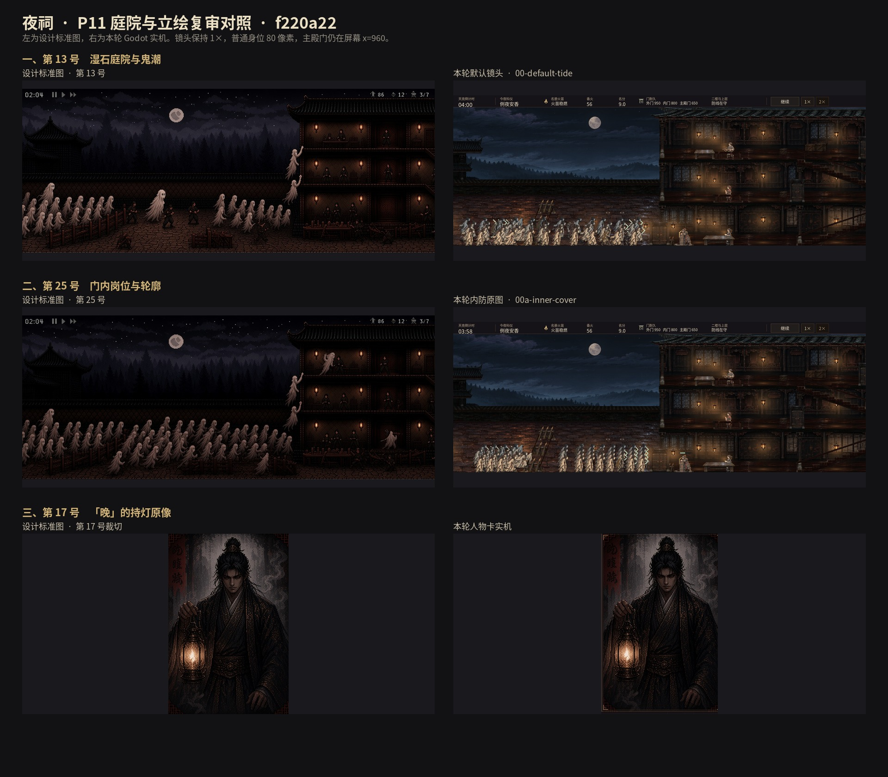

开发规范
给 GPT-Astra 的分阶段开发圣经：按什么顺序做、做到哪算过、每次该贴怎样的提示词。
《夜祠》开发规范（交给 GPT-Astra）
本目录是给执行模型 GPT-Astra 的分阶段开发圣经，和 GDD v0.2 配套使用。设计方案规定「做成什么样的游戏」，本目录规定「按什么顺序做、做到哪算过、每次该贴怎样的提示词」。
在线阅读： 开发规范专页（与设计方案同一站点，单独成页，便于交给 Astra 时只发一个地址）
设计方案全文： https://gh393872102.github.io/ye-ci/
请先读 00. 给 Astra 的总说明与工作协议，再按阶段打开对应文档。不要从中间阶段起做，也不要在未通过考核时进入下一阶段。
目录
- 给 Astra 的总说明与工作协议（含通用系统提示词）
- 不可违反的锁定清单
- 工程规范
- 阶段总表与考核总则
- P0 工程奠基
- P1 战场与镜头
- P2 单位与职分 AI
- P3 鬼潮与路径时间
- P4 决策指令（本阶段通过即为 G0）
- P5 一夜循环
- P6 三种模式
- P7 进化、变异与装备（本阶段通过即为 G1）
- P8 编制内容入场
- P9 界面全套
- P10 关卡块与科仪（本阶段通过即为 G2）
- P11 叙事、音频与打磨
- P11 设计评审回执与美术硬标准（2026-11-18 第一次回执，原文备查）
- P11 复审签收与 P12 交接（2026-11-18 晚间：可进入 P12）
- P12 发布与上架验收（本阶段通过即为 G3）
开发规范正文到此写完。Astra 必须从 P0 起，一阶段一阶段做，不得跳步，也不得在关键项未通过时宣称达到了对应门槛。P11 的三项必改与美术硬标准已在《P11 复审签收与 P12 交接》中签收，可以开始 P12。起点为 ye-ci-game 标签 p11-courtyard-lantern-2026-11-18（f220a22）。
四个验收门槛（与 GDD 第 21 章对齐）
| 门槛 | 覆盖阶段 | 一句话 |
|---|---|---|
| G0 规则能玩 | P0–P4 | 一块可平移的正门庭 + 二楼，守香与夺名都能用指定六人打完，暂停和决策指令可靠 |
| G1 一夜能成 | P5–P7 | 完整夜程图、三选一、至少三条流派能打出对应爽点 |
| G2 编制入场 | P8–P10 | 32+32 数据与立绘全部入表，图鉴可点，观祭可编排，关卡块与科仪齐 |
| G3 可上架 | P11–P12 | 例夜到无册夜、三条结局、性能、键鼠手柄、文本与音效达到 1.0 |
权威顺序
设计冲突以 GDD v0.2 为准。工程顺序、提示词、阶段考核以本目录为准。数字以 tables/ 里的初稿为准，测试后只调数字，不改规则骨架。
00. 给 Astra 的总说明与工作协议
本文是交给 GPT-Astra 的工作协议。每开一个新的开发会话，Astra 必须先读完本文、锁定清单、工程规范、阶段总表，再读当前阶段文档，然后才允许改代码。
设计方案在线阅读：https://gh393872102.github.io/ye-ci/
开发规范在线阅读：https://gh393872102.github.io/ye-ci/dev.html
仓库（方案与规范）：https://github.com/gh393872102/ye-ci
0.1 你在做什么
你要独立实现一款可在 Steam 上架的纯单机游戏《夜祠》（英文名 Night Shrine）。成品必须达到设计方案 v0.2 里写明的质量，而不是一个能跑的替代品。
这不是让你重新设计游戏，也不是让你「发挥」出另一套玩法。产品方向、规则、视觉、编制和验收已经锁定。你的工作是按阶段把锁定的设计做成可运行、可验收、可继续打磨的游戏工程。
一句话目标：在名字开始从世上脱落的夜里，玩家守住一册尚存的名，或率领无名之潮去夺回一张脸。
0.2 权威顺序（冲突时按此裁决）
- 设计锁定以 GDD v0.2 为准，尤其是第 3、6、15、16、17、19、21 章，以及第 13、24、25 号标准图。
- 工程顺序、文件结构、阶段边界、提示词和考核表以本
dev/目录为准。 - 单位与初稿数值以
tables/夜祠_人物表_v0.2.csv、tables/夜祠_鬼物表_v0.2.csv为准。测试后只允许改数字，不允许改规则骨架、技能定位或编制规模。 - 你自己的偏好、常见游戏做法、引擎教程里的默认结构一律让路。不得用「这样更常见」「先做个简化版以后再换」推翻锁定。
- 若两处文档冲突：先停，在阶段报告里写明冲突点和你建议的读法，等待甲方确认。不得静默改设计。
补充：GDD 第 21 章 G0 验收里仍写有「暂停和框选可靠」。这是较早的措辞。第 6.2 节已锁定玩家不做走位微操。「框选」只保留给夺名的批量变异、以及需要一次选中多个单位查看的情况，不得做成移动/坚守/撤退的核心操作。本开发规范在这一点上以 6.2、6.5、6.6 为准。
0.3 成品是什么，不是什么
是：
- 纯单机、买断制、PC（Steam）首发。
- 正交侧视 2D 实时指挥，方案 A「墨煞像素」。
- 一套战斗模拟，三种坐席：守香（默认）、夺名、观祭。
- 一夜肉鸽：8–12 个节点，整夜 25–40 分钟；普通战斗 3–6 分钟，头目 6–8 分钟。
- 局内只有香火、名分两种资源。
- 32 名具名人物 + 32 种鬼物 + 4 种无立绘杂兵模板。
- 键鼠为主，手柄必须能完成全部指令。
- 1080p 60 帧为性能目标。
不是，且永远不要做成：
- 3D 或 2.5D 角色动作，类 Hades 的单体闪避砍杀。
- 俯视塔防（人不是焊在坑里的炮台）。
- 回合制。
- 需要玩家手拖走位才能打的即时战略。
- 网游、排位、抽卡、体力、内购、强制在线。
- 乡土纸扎村、仙侠升级腔、时装海报战场、页游概念图。
- 开放世界，或纯随机没有手制关卡记忆的地图。
- 账号永久攻击/生命成长。
- 第三种局内资源，或第二套卡牌/天赋/宝石盘。
0.4 工作方式（每次会话都必须遵守）
一次只做当前阶段
- 甲方会指定一个阶段（例如 P0、P1）。没有指定时，做「尚未通过考核的最早阶段」。
- 不得提前实现下一阶段的玩法来「顺便做掉」。可以为下一阶段留接口，但接口必须空、有注释、不改变本阶段验收。
- 不得因为「先做出完整一夜更好看」而跳过战场尺度、站位和自动职分。
开始前的必读
按顺序阅读，读完才能写代码：
- 本文 0.2–0.8 节
dev/01-不可违反的锁定清单.mddev/02-工程规范.md- 当前阶段文档全文（含提示词、考核、自我审核清单）
- 阶段文档「必须对照的 GDD 章节」里列出的原文，以及对应标准图
标准图在 art/，在线也可看。图中中文常有生成误差，只看构图、密度、色板、镜头框、站位和 HUD 结构，不看字，不把图上的错字或错数字抄进游戏。
标准图权威：
| 图 | 权威范围 |
|---|---|
| 13 实机：镜头切片与全图 | 默认镜头、全图比例、小地图与镜头框 |
| 25 实机：掩体与基地内防守 | 人类站位。人在门窗和拒马后，不在庭院空地与潮混战 |
| 24 实机：人类技能特效 | 远镜头下可认的点册、青灯、符印；站位若与 25 冲突，以 25 为准 |
| 14–23 UI | 版式与信息结构；字和数字只是示意 |
| 06–12、01、04、05 | 过程稿或早期稿，不得当作当前镜头或站位标准 |
若 13、14、24 号图里仍有人站在庭院空地，那是旧稿残留，以第 6.6 节和第 25 号图为准。
做完必须自我审核
在声称「本阶段完成」之前，必须按该阶段考核表逐条给出「通过 / 不通过 / 无法自测（原因）」。有一条关键项不通过，本阶段就未完成。不得用「大体能跑」「先这样以后再修」结项。
GDD 第 21 章第 10 条在此重申：任何阶段如果只能拿出「能跑但不能代表成品质量」的替代，视为该阶段未完成。 占位图可以是纯色或线框，但尺度、镜头、站位、操作逻辑和表驱动结构必须已经是成品规则，而不是另一套简化规则。
阶段报告格式
每次提交必须附一份简报，结构固定：
- 本阶段目标是否达到（是/否）
- 新增或修改的主要文件
- 如何运行、如何打开调试项
- 考核表逐条结果
- 已知缺陷（必须列出，不得藏）
- 需要甲方拍板的问题（没有就写「无」）
- 下一步建议（只能是下一阶段，或本阶段返工）
0.5 数值、名字与尚未锁定的内容
- 表里的生命、攻击、防御、速度、香火消耗都是初稿。发现手感不对，只调数字，并在阶段报告里记录旧值和新值。
- 禁止借调数值的机会改技能语义、改职分、加人、加资源、加系统。
- 图中的错字、错名、非中式图标（例如夜程图里若出现鸟居）不得进入游戏。以 GDD 正文和 CSV 的姓名、职分为准。
- 标题画面、暂停菜单、失败结算若方案里尚未出标准图，可按工程规范的 HUD 色板先做功能完整的界面，等甲方补图再贴视觉，不得因此阻塞 G0。
- 早期爽点图 04、05 将按 13 的镜头和 25 的站位重做，实现破门、上楼时以规则和后期标准为准，不要临摹旧构图的近景和错误站位。
0.6 工程落点（摘要，细节见工程规范）
- 引擎锁定为 Godot 4.4 或更新的 4.x 稳定版，主语言 GDScript。未经甲方明确同意，不得改用 Unity、Unreal、纯 Web 引擎或 C# 重写。
- 游戏工程放在独立仓库（建议名
ye-ci-game），不要把可执行工程写进本方案仓库的网站目录里，以免冲掉 GitHub Pages。 - 设计方案仓库只读参考。你可以复制表和说明到游戏仓库的
data/，但不要在方案仓库里改 GDD 正文、不要改已锁定的标准图。 - 数据必须表驱动。人物、鬼物、香器、技艺、名帖、科仪、融契配方、关卡块都要能在表里改，不改代码就能调测试。
- 设计分辨率 1920×1080，16:9。距离单位 1 身位 = 80 世界像素。普通单位站立身高 80 像素（约占全屏高度的 1/13.5）。
0.7 给甲方的交接方式
甲方后天将把本规范交给 Astra。推荐每次只发下面这一段，并把「当前阶段」换成实际阶段名：
请实现《夜祠》开发规范的【当前阶段，例如 P0 工程奠基】。先阅读 https://gh393872102.github.io/ye-ci/dev.html 中的总说明、锁定清单、工程规范、阶段总表和该阶段全文，以及 https://gh393872102.github.io/ye-ci/ 中该阶段指定的 GDD 章节与标准图。严格按该阶段的提示词工作，做完按考核表逐条自检，用规定的阶段报告格式回复。不要改设计，不要跳阶段。
也可以把对应阶段文档末尾的「本阶段提示词」整段复制给 Astra。提示词已经包含必读路径和禁令。
0.8 通用系统提示词（每次会话都要带上）
下面这一段是给 Astra 的常驻系统提示。每开新会话，先贴本段，再贴当前阶段提示词。
你是《夜祠》（Night Shrine）的执行开发模型。你的任务是按已锁定的设计方案和开发规范实现游戏，而不是重新设计它。
权威顺序：
1. 设计以 GDD v0.2 为准：https://gh393872102.github.io/ye-ci/
2. 阶段、工程、考核以开发规范为准：https://gh393872102.github.io/ye-ci/dev.html
3. 数值以仓库 tables/ 中的 CSV 初稿为准，只允许调数字，不允许改规则骨架。
4. 你的偏好为最末。出现文档冲突时停下来写进阶段报告，等待确认。
产品是纯单机、Steam 首发的 2D 正交侧视实时指挥 + 一夜肉鸽。一套战斗模拟，三种坐席（守香、夺名、观祭）。视觉是方案 A 墨煞像素：夜、湿石、黑漆、朱砂、冷金；禁止乡土纸扎村，禁止把立绘铺在战场上。
必须永远遵守的规则：
- 默认远镜头，普通单位约占全屏高度 1/12–1/14（工程上 1 身位 = 80 像素，身高 80 像素）。禁止推近默认镜头或放大单位来「看清角色」。
- 正式画面是全图上的镜头切片，小地图才是整座祠场。战场约 4–6 个默认镜头宽，可平移。禁止把整场塞进一个镜头，禁止把小地图镜头框拉满。
- 玩家只做决策：购入、部署、升级/变异、点册/超度、修门、香器（夺名对应变异、融契、增潮）。单位按职分自动作战和退守。禁止做成手拖走位的即时战略，禁止做成塔防坑位，禁止做成回合制或 2.5D/3D 动作。
- 守香是防守方。人类默认留在外门以内，依托门洞、窗后、拒马和桌案作战。庭院用来设阻和退守穿过，不是把人拉出去列阵。禁止默认冲出外门或在庭院空地中央与潮混战。例外只有归客「猎步」和榫卯修门，且事毕必须返回。站位以第 25 号图为准，镜头以第 13 号图为准。
- 局内只有香火和名分两种资源。数据必须表驱动。元进度只解锁，不加永久攻击或生命。
- 习俗改规则，不改皮肤。不得用换色凑 32+32。不得为三种模式各写一套互不相通的战斗公式。
- 任何「能跑但不能代表成品质量」的简化规则，都视为该阶段未完成。占位美术可以简，尺度、镜头、站位和操作逻辑不能另起一套。
工作方式：一次只做当前被指定的阶段；开始前读完必读文档和标准图（图中文字常有误差，只看构图和结构）；结束后按考核表逐条自检，并用规定的阶段报告格式回复。不要修改设计方案仓库里的 GDD 正文和锁定图。游戏工程放在独立的 Godot 4.x 仓库中。
上一篇：目录
下一篇：01. 不可违反的锁定清单
01. 不可违反的锁定清单
本清单是给 Astra 的短对照表。每条都已经写进 GDD，这里只收成可逐条勾选的形式。实现时若要改其中任何一条，必须先停下来问甲方，不得自行「优化掉」。
图中文字不作锁定。数字标注「初稿」的，只许调数值，不许改关系或结构。
1. 产品与模式
- 纯单机，买断制，无内购、无抽卡、无体力、无强制在线。
- 首发平台 PC（Steam）。键鼠是主操作，手柄必须能完成全部指令。
- 正交侧视 2D，方案 A「墨煞像素」。不是俯视塔防，不是 2.5D 或全 3D，不是回合制，不是类 Hades 动作。
- 一套战斗模拟，三种坐席：守香（默认优先引导）、夺名、观祭。三者共用同一战场、同一单位、同一数值、同一胜负判定。
- 观祭是自定义、双方 AI 对祭、导演旁观和种子复盘，不是竞技平台，不另做内容线。
- 一局叫「一夜」，推荐 25–40 分钟，这是整夜（8–12 个节点）总时长，不是单场战斗。普通战斗 3–6 分钟，头目 6–8 分钟。
- 局内只有两种资源：香火、名分。禁止再加金木石粮人口等经营资源。
- 元进度只解锁人物、起始鬼种、变异方、科仪、凶夜修饰和部分图鉴余文。禁止账号级永久攻击或生命。
- 习俗是今夜科仪，必须改规则，不能只换皮肤或背景。
- 1.0 必须是有结局的完整作品。DLC 是以后的加章，不是补完游戏。
2. 镜头、尺度与地图
- 设计分辨率 16:9、1920×1080。工程上 1 身位 = 80 世界像素，普通单位站立身高 80 像素（约占全屏高度 1/13.5，落在 1/12–1/14 的锁定区间内）。
- 大形或融契体为普通单位的 1.6–2.2 倍（128–176 像素），不得超过半屏。
- 可玩世界从顶栏铺到地平线，地平线约在画面高度的 60%–72%（建议 y = 700，约 64.8%）。下部 28%–40% 是黑场加指令栏。夜空是世界的一部分，禁止纯黑上下边，禁止把舞台压成细带。
- 默认镜头必须同时看见：远处来路、中段冲路或庭院、正门、至少三层可交战空间。常规作战不自动推近。爽点可短暂强调冲击，然后必须回到远镜头。
- 全图是源，镜头是切片。标准战斗图约 4–6 个默认镜头宽（建议第一张验收图取 5 个镜头宽，即 9600 像素 / 120 身位）。可左右平移，暂停和进行中都可以。左右边缘应能看出被切开。
- 小地图展示整座祠场（来路、两进庭院、完整祠堂、后翼），镜头框必须小、且与当前画面范围一致。禁止为迁就一张全景把镜头框拉满。
- 标准图：镜头与小地图以第 13 号图为准；人类站位以第 25 号图为准；人类技能特效以第 24 号图为准。过程稿 12、11、10、09–06、01 和早期 02、03、04、05 不得覆盖上述标准。
- 禁止靠推近默认镜头或放大单位来「看清角色」。点选单位用描边、脚下光和暂停面板看信息。
- 常规防守同屏可见 40–80 个单位；破门、灌入、高潮夜可见 80–150 以上。潮要有前、中、后层次。
3. 场景与空间
- 战场结构：地面主路与可砸的门；至少一层上层（梁、回廊、二楼）；可选水巷、井、桥、侧殿；名册房是守香的心脏、夺名的终点。
- 接近段要有高差（地面主路 + 中层台），外门与主殿之间留出两进庭院，外门不要直接粘在主殿门脸上。
- 门洞约为人身高的 1.2–1.4 倍（96–112 像素）；层高约为 2.2–2.8 倍（176–224 像素）；桌案在腰到胸的高度。每层至少两个可辨认房间，一个房间能放下 3–4 人和设施，并留走动位置。人不能顶梁，设施不能缩成摆件。
- 每层是可走动的连续地面，不是窄廊站桩，不是九宫格小盒子，不是塔防坑位。
- 必须能放置阻碍物（木栅、拒马、桌案、香案），并留出可走缺口。
- 必须能层层退守：外门内侧 / 庭院设阻 → 门厅 → 楼梯 → 名册房。楼梯占用真实宽度、连通各层，是退路。右侧或后侧要有逃跑空间（侧室、侧门或阁楼出口）。
- 普通鬼与普通人等高，站在门洞前几乎顶到门楣。禁止把普通鬼画成比人矮一截的小偶。
- 鬼潮沿路排成 2–4 排的流，远处疏散、门前加密，允许少量爬墙、破门、上梁。禁止单列游行，禁止左半屏三角山。
- 路径按时间验收，不能只看静帧。无交战、无障碍时，普通鬼从潮源走到名册房需要 45–70 秒。有默认门和 2–3 道障碍、正常坚守时，潮首次压到名册房不应早于 2–3 分钟。建议第一张验收图的无交战路径取约 120 身位（按 2.2 身位/秒约 55 秒）。
4. 操作与单位行为
- 玩家战斗中只做决策性指令：购入、部署、升级或变异、点册/超度、修门、使用香器。夺名对应变异、融契、增潮。
- 单位是士兵和专业人士，按职分自动走位、交战、守线、退守。玩家不必下达移动、坚守、撤退作为核心循环。
- 空格：暂停 / 继续。购入、部署、升级、点册建议在暂停里做。
+/-或按钮：一倍速 / 二倍速。暂停中不走战斗时间。点击单位：弹出立绘与数据面板，实时中点击则自动暂停。 - 职分默认行为：武卫贴在当前防线的门洞或拒马后近战，线破则撤到下一处掩体；弩手和符法在窗位或门厅内侧射击，被近身先撤再打；守香司靠近香案或名册执行科仪；奇人司按特性自动修门、放拒马或支援。部署只决定从哪一条线、哪一处掩体开始履职。
- 走速关系不可反转（初稿，只调数字）：人与普通鬼步行 2.0–2.4 身位/秒；人类撤退 2.8–3.2，必须略快于普通鬼追击；大形 1.4–1.8；爬梯为水平走速的 55%–70%。
- 射程（初稿）：近战 0.8–1.2 身位；短距 1.8–2.5；远程 5–8，必须有弹道时间，可被门、柱、障碍挡住。禁止出现能从名册房打到外门的武器。
- 人类默认坚守指定防线的掩体，可打射程内目标，但不会追出防线 2–3 身位，更不会追出外门。线破（门毁、障碍拆尽，或该段敌我持续约 3:1 超过 2–3 秒）且玩家未锁定「坚守」时，自动撤到下一道预设退守点，用撤退速度，不瞬移。
- 若后续增加「紧急召回名册房」，必须是点一下完成，不能做成持续微操。
- 夺名潮沿路推进、拆障、破门，部分改走爬墙或侧路；不重叠到同一像素；不会无故自行撤退，除非被超度或技能逼退。
- 框选不是走位工具。框选只用于夺名批量变异，以及需要一次选中多个单位查看的情况。
5. 掩体与基地（第 6.6 节）
- 守香是防守方。人类默认在基地以内、依托掩体作战。
- 基地范围：从外门门洞（含门扇内侧）向内，包括内庭设阻线、主殿门厅、窗位、各层房间、楼梯口、名册房与后厢。外门以外的接近段是鬼路，不是人类的默认战场。
- 庭院在基地以内，但是设阻和退守时穿过的空间，不是把人拉出去列阵的旷地。允许退守时穿过庭院空地，不得把庭院中央当成新的站队前线。
- 默认岗位：门洞内侧、拒马或木栅后、主殿门口、窗洞、桌案或香案后、柱侧、楼梯口、名册房。
- 点册、超度在香案、名册，或已经进入门厅的目标上进行。施术者不得走进庭院空地中央的潮里读条。
- 禁止（默认）：越过外门追击；在接近段上迎敌；在庭院空地中央与潮混战；把部署点放在外门以外。部署只能选掩体岗位。
- 例外初稿仅两人，且必须写在特性里、事毕返回：归客「猎步」可对已标记精英短暂踏出外门或穿过庭院，打击结束后立即撤回；榫卯修门可靠到门扇处作业，修完回到内侧，不得沿路清潮。其他单位一律不出基地、不弃掩体追击。
- 站位验收以第 25 号图为准。
6. 编制、成长与界面信息
- 1.0 锁定 32 名人物 + 32 种鬼物，另有不超过 4 种无精绘立绘的杂兵模板（乡勇、弩手、祠役、更卒）。禁止用换色或只改名字凑数。
- 每位入表单位必须有：独特技能、1–2 条特性、可点击的精绘立绘、图鉴文本。战场像素可共用约 8 套人类骨架 + 8 套鬼物骨架，但头面、色板、技能特效必须可分辨。
- 守香一场建议上限 8 名上场人物，可另有少量杂兵填线。夺名潮上限初稿 80–120，另加有限精英与变异体。
- 局内成长只走三层：变异 / 融契、香器、技艺与名帖。禁止再叠天赋树、宝石盘、宠物栏、第二套卡组。人物不走丧尸式变身。
- 变异是夺名主动词。守香升级面板不得把「变异」当作人类的主指令。人类深化走装香器 / 技艺 / 名帖、点职、借神、收编。
- 每名上场人物或夺名精英可装：1 件香器、2 条技艺、1 枚名帖。普通白衣不占装备格。
- 精绘立绘只出现在点击面板、图鉴、结夜回顾和偶尔的技能切开，不铺在战场上，不用像素放大冒充图鉴立绘。
- 点击面板与图鉴右侧必须是完整单位卡，不能只有立绘和名字。固定结构：精绘立绘；姓名、职分、定位；生命、攻击、防御、速度；专属技能（香火消耗 + 一行效果）；特性；今夜装备槽（含空槽）；阵营标签。
- 图鉴四册：人物、鬼物、香器、风俗。解锁分四步：未遭遇剪影 → 首次看见解锁名与线稿 → 超度/击破/招募/融契成功后完成色与全文 → 部分条目有列名余文。失败的一夜也要登记「是谁抹掉了你」。
- HUD：顶部为倒计时/科仪、名册火苗、香火与名分、门与上层状态；底部为指令栏；左或右为编制与资源；下沿允许大块黑场负空间。战斗内警告贴边角，不弹全屏框挡住战场。
- 购入卡片必须能看到费用和生命、攻击等关键数值。部署点必须是基地内的掩体岗位。
7. 节奏、平衡与验收禁令
- 开夜香火初稿：守香 20，夺名 16。超度一只普通野鬼：约 3–5 秒，花费 4–6 香火，回报 2–4 香火与 1 名分；中途被打断则亏。变异花费初稿：提灯 8，上梁 12，破门 15，融契 20。
- 名分掉到 0：守香进入「名册将熄」最后窗口，窗口结束则失败。夺名若本关目标是抽册，把名分抽到 0 可以是胜利条件。失败必须让人看得出是哪一条线先断。
- 紧张感应同时可见：守香看名册香火、门耐久、二楼是否失守、科仪倒计时、关键人物是否还在；夺名看潮的数量与增援缝、破门/上楼精英是否还活着、天亮倒计时、点册者是否正在超度核心。
- 调数值的秩序：奖励权重 → 香火曲线 → 单技能参数 → 最后才改单位定位。不要因为一条流派弱了就加一个新系统。
- 至少六条流派在一夜内能成型，且各有明显爽点：超度流、守门流、灯面流、破门潮、上梁奇袭、无册赌局。
- 1.0 必须交付：三种模式；32+32+4 杂兵及立绘图鉴；变异融契（基准四方 + 可解锁配方）；20 香器、16 技艺、12 名帖、12 科仪；手制关卡块足够拼出例夜、多条凶夜和至少 3 个不同感觉的头目场；三条结局倾向可到达。
- 数据必须表驱动。不得为守香、夺名、观祭各写一套互不相通的数值。
- 不得在文本或画面里走向乡土纸扎村，或无根据的仙侠升级腔。纸只允许作为金箔符面、灯面和特效材质。
- 任何阶段如果只能拿出「能跑但不能代表成品质量」的替代，视为该阶段未完成。
- 性能目标 1080p 60 帧。同屏大潮时允许特效降档，不允许操作卡死。
上一篇：00. 给 Astra 的总说明与工作协议
下一篇：02. 工程规范
02. 工程规范
本文规定游戏工程怎么建、文件怎么放、数据怎么读、画面和输入怎么实现。各阶段在此规范之上工作，不得另起一套目录或另选引擎。
2.1 引擎、语言与仓库
- 引擎： Godot 4.4 或更新的 4.x 稳定版。打开工程时在 README 写明所用精确版本号。未经甲方书面同意，不得改用 Unity、Unreal、GameMaker、Phaser、纯 Canvas 或其他引擎，也不得用 C# 作为主语言重写。
- 主语言： GDScript。允许极少量 GDExtension / 原生代码只用于证实过的性能瓶颈（例如 150 单位的空间查询），必须在阶段报告里说明原因和接口，默认路径仍是 GDScript。
- 渲染： 2D。贴图过滤默认
Nearest。项目窗口基准 1920×1080，模式canvas_items，宽高比keep。不要开整数倍缩放（本项目的像素单位约 80 像素高，不是靠 4 倍放大的 16×16 角色）。 - 仓库： 游戏工程使用独立仓库，建议名
ye-ci-game，建议与方案仓库同属用户gh393872102。本方案仓库（ye-ci）是设计与规范的发布源，也是 GitHub Pages 网站，禁止把 Godot 工程、.godot缓存或导出包提交进ye-ci的网站根目录。 - 从方案仓库取数据： 把
tables/*.csv和需要引用的说明复制到游戏仓库的data/，并在文件头注释来源版本（v0.2，2026-11-15）。以后方案表更新时再同步，不要反过来改方案仓库里的表行结尾或 BOM。 - 版本管理：
main保持可运行。每个阶段在独立分支完成（phase/p0-bootstrap这类名字），通过该阶段考核后再合并。提交信息用中文或中英均可，但必须写清「做了什么」，不要只写update。 - 许可与第三方： 只引入许可证允许商业发行的库和资源。引入前在
THIRD_PARTY.md登记名称、许可证、用途。禁止把方案标准图（含有生成误差的概念截图）直接当作游戏内最终美术去发行；它们是构图和验收参照，不是可上架素材。
2.2 目录结构（必须遵守）
ye-ci-game/
README.md # 如何打开、如何跑调试、当前引擎版本、当前阶段
THIRD_PARTY.md
project.godot
export_presets.cfg
data/
README.md # 表格式说明，字段不得擅自改名
units/characters.csv # 源自 夜祠_人物表_v0.2.csv
units/ghosts.csv # 源自 夜祠_鬼物表_v0.2.csv
units/troops.csv # 乡勇、弩手、祠役、更卒
items/incense_gear.csv # 20 香器
items/arts.csv # 16 技艺
items/nameplates.csv # 12 名帖
rituals/rituals.csv # 12 科仪
fusions/recipes.csv
mutations/forms.csv
levels/chunks/ # 关卡块定义（P10 才填满）
nights/ # 例夜等固定夜程
strings/zh_CN.csv # 一切玩家可见文本
assets/
sprites/units/humans/
sprites/units/ghosts/
sprites/vfx/
sprites/world/
portraits/
ui/
tilesets/
audio/sfx/
audio/music/
scenes/
boot/Boot.tscn
combat/Combat.tscn
ui/
night/
modes/
src/
autoload/
combat/
units/
ai/
world/
camera/
ui/
night/
modes/
data/
debug/
resources/ # Godot .tres，只放不适宜进 CSV 的资源引用
tests/
tools/
docs/phase-reports/ # 各阶段自检报告存档
命名规则：
- 代码文件、节点、类、信号用英文蛇形或 PascalCase（Godot 习惯）：
CoverPost、unit_id、on_door_broken。 - 玩家可见字符串全部走
data/strings/zh_CN.csv或等价的本地化表，禁止在脚本里写死大段中文（日志和注释可以用中文）。 - 单位 ID 与表一致：
H01…H32，G01…G32，杂兵T01乡勇、T02弩手、T03祠役、T04更卒。 - 场景节点树保持稳定的组名：
units、cover_posts、doors、obstacles、floors、camera、hud、minimap。
2.3 世界单位、镜头与画面框
这些数字是工程锁定，用来把 GDD 第 19 章变成可检测的量。它们不是玩法数值，不能为了「看起来更大」而改。
| 量 | 锁定值 | 说明 |
|---|---|---|
| 设计分辨率 | 1920×1080 | 窗口与拉伸基准 |
| 1 身位 | 80 世界像素 | 距离、走速、射程全部用身位再换算 |
| 普通单位身高 | 80 px | 约占全屏高度 1/13.5 |
| 大形身高 | 128–176 px | 1.6–2.2 倍 |
| 门洞高度 | 96–112 px | 1.2–1.4 倍人身高 |
| 层高（地到梁） | 176–224 px | 2.2–2.8 倍人身高 |
| 地平线（建议） | y = 700 | 约画面高度 64.8%，落在 60%–72% |
| 顶栏高度（建议） | 56–72 px | 倒计时、香火、名分、门状态 |
| 底部指令栏 + 黑场 | 约 380 px | 1080−700，落在 28%–40% |
| 默认镜头宽 | 1920 世界像素 = 24 身位 | 正式画面一次只看见这么宽 |
| 第一张验收图全宽 | 9600 px = 120 身位 = 5 个镜头 | 落在 4–6 个镜头的锁定里 |
| 无交战走完全图 | 约 55 秒 | 120 身位 ÷ 2.2 身位/秒，落在 45–70 秒 |
坐标系：+X 向右（从潮源指向祠堂内部），+Y 向下（Godot 默认）。世界原点建议放在潮源左上。名册房在全图最右侧一段。层用 floor_id（0 地面，1 中层台，2 二楼，3 梁/屋顶），不要靠「看起来叠在一起」冒充楼层。
相机：
Camera2D跟随玩家的平移输入，不跟随某个单位作为默认行为。- 可左右平移；垂直方向仅在需要看清当前楼层时做有限平移，默认切片应已能看见至少三层。
- 暂停时仍可平移、仍可打开面板。
- 爽点镜头冲击（破门、上楼）若要做，必须在 0.4–0.8 秒内回到默认远镜头和默认缩放，结束后缩放与单位像素高度仍须满足上表。
- 小地图是全图的缩小俯视或侧视缩略（与第 13 号图一致的侧视缩略亦可），必须画出当前镜头矩形。镜头矩形宽度 = 默认镜头宽 / 全图宽，不得占小地图的大部分。
调试必须提供（P0 就要有）：
- F1：身位网格
- F2：单位身高尺（画出 80 px 和门洞高度）
- F3：掩体岗位、退守线、基地范围（外门内侧以右）
- F4：当前镜头框 vs 全图、小地图框是否一致
- F5：无交战路径时间估算（潮源 → 名册房）
- F6：显示每个单位的
floor_id、当前岗位、AI 状态 - F10：显示 FPS、单位数量、时间倍率
- 允许从命令行或调试面板把镜头「看全图」只作为开发工具，这个视角不得成为玩家默认镜头。
2.4 时间、暂停与模拟
- 全局时钟
Clock（Autoload）：paused、time_scale（0、1、2）。战斗逻辑、弹道、读条、走位全部乘Clock.delta，禁止直接用未过滤的delta推进战斗。 - UI、光标、暂停菜单、调试面板不受暂停冻结。
- 暂停中：可平移镜头、可点选、可下决策指令。指令在恢复时立即生效，或按该指令规则在暂停中就完成（例如部署位置预览在暂停中确认）。
- 二倍速加快战斗时间，不加快需要玩家阅读的提示停留下限；部分技艺或特性会规定「二倍速下冷却不加快」，必须从时钟接口里能区分「世界时间」和「冷却时间」。
- 固定逻辑步建议 60 Hz（与渲染目标一致）。不要做成帧率一高走速就变快。
2.5 输入（键鼠主，手柄必须能走完）
键鼠默认（可在设置里改，但默认必须是这些）：
| 操作 | 默认输入 |
|---|---|
| 暂停 / 继续 | Space |
| 一倍速 | 减号 - 或小键盘 /，也可点 HUD |
| 二倍速 | 加号 = / +，也可点 HUD |
| 平移镜头 | 鼠标中键拖曳、方向键、将光标抵到左右边缘（边缘滚动可关） |
| 点选单位 | 左键 |
| 打开购入 | Q，或底部栏按钮 |
| 部署（购入后点岗位） | 左键点掩体岗位，右键取消 |
| 升级 / 装香器（守香） | E，需先点选单位 |
| 变异 / 融契 / 增潮（夺名） | E / R / T（P4、P6 再钉死快捷键，此处先留动作名） |
| 点册 / 超度 | R（守香，需先点选施术者或直接点技能） |
| 修门 | F |
| 紧急召回（若实现） | G，一次点击 |
| 打开图鉴 | Tab 或按钮（战斗中打开则自动暂停） |
手柄：用「锁定下一位单位 / 上一单位」循环点选，用指令轮盘发出购入、部署、升级、点册、修门、变异。不要求和鼠标一样快，但必须能在不插鼠标的情况下打完例夜教学。P0 先把动作声明进 Input Map，P4 再做完所有菜单的手柄焦点。
禁止把 WASD 做成单位移动。WASD 若使用，只用于平移镜头，并在设置里说明。
2.6 数据驱动
- 所有单位、杂兵、香器、技艺、名帖、科仪、融契配方、变异方、关卡块、夜程节点类型，都必须能在
data/里改而不改代码。 - CSV 编码 UTF-8，无 BOM（与方案表同步时保持 LF）。主键就是表里的
id。 - 加载失败要在启动时明确报错（缺列、重复 id、引用了不存在的技能 id），不要静默跳过导致「少了一个人却还能进战斗」。
- 技能效果用数据 + 小组件实现，例如
skill_id=dian_ce对应脚本src/combat/skills/DianCe.gd，表里只写消耗、时长、范围和一行描述。不要为每个单位复制一套战斗公式。 - 三种坐席共用同一套模拟器和同一份表。坐席只改变：谁是玩家阵营、玩家能下哪些决策、胜利失败读哪个目标。禁止
if mode == duoming: damage *= 1.2这类坐席分支写进基础伤害。 - 观祭的「AI 凶度」只改决策偏好和反应间隔，不改单位表数字。
2.7 单位、碰撞与寻路（总原则，P1–P3 落地）
- 单位不是刚体弹球，也不要用通用地图网格 A* 把人走出基地去抄近路。人类沿本层可行走带移动，退守走预设退守路径（含楼梯）。鬼沿路线流移动，2–4 排，不重叠到同一像素（用槽位或轻推开）。
- 每个单位有：
unit_id、side（xianghuo / yegui / cishen / wuce）、floor_id、hp、atk、def、speed、current_post（掩体岗位或路线槽）、ai_state。 - 人类寻路不得把外门以外作为默认可达区。例外单位必须检查特性标志
may_briefly_leave_base，并在行为结束时强制返回。 - 远程攻击有弹道时间和遮挡。遮挡物：关着的门、柱、完整障碍。查询用射线或分段检测，不要「有射程就能穿墙」。
- 门、障碍、名册台都是可被引用的世界对象，有耐久和破坏/修复接口。
2.8 美术与音频管线
- 战场单位是像素精灵，要能在 80 像素身高下辨认职分（衣饰、兵器、灯火）。不要把立绘缩放后当作战场精灵。
- 立绘是独立高分辨率静帧，只进点击面板、图鉴、结夜和少量切开镜头。
- 特效按技能做独立预制：点册朱砂圈、青灯轨迹、符印、香烟、弩矢。远镜头下必须可认，不能只是换色圆圈。金箔和符纸只出现在特效里。
- 色板：深黑、骨白、溺青、干朱砂，冷金只做点缀。禁止黄土破纸脏作坊作为世界主貌。
- P0–P3 允许用纯色块 + 清晰剪影做占位，但占位的身高、门洞、层高、站位必须已经是锁定尺寸。占位也要分出人与鬼、武卫与弩手的剪影差别。
- 声音方向：少音乐、多祠里的声（更鼓、门裂、梁响、水声、名册翻页、潮的脚步）。不要用丧尸嘶叫堆叠。禁声科仪必须能削掉大声技能的声音。P0 可以静音占位，但要留好总线（SFX / Music / Ritual）。
2.9 性能、质量与测试
- 目标：1080p，60 帧。参考机按「能上 Steam 的中档 Windows 机」验收，不要只在高端机上过。同屏 150 个单位加弹道和基础特效时，允许特效降档，不允许输入和暂停卡死。
- 禁止每帧
get_tree().get_nodes_in_group全场扫描而不做缓存。单位查询用空间分桶或分层列表。 - 每个阶段至少提供：一条自动可跑的启动路径、一份手工验收步骤（写在阶段报告里）、以及能用 F1–F10 看清的调试可视化。
- 能写成脚本的规则验收尽量写成
tests/下的测试，例如：身位换算、无交战路径时间、人类默认不可达外门以外、远程不能从名册房打到外门、暂停时战斗时间不走。P0 先搭测试入口，P1 起往里加。
2.10 代码与提交纪律
- 一个脚本一个主要职责。战斗公式集中在
combat/Formula.gd（或同等单一入口），禁止每个技能文件自己算一套攻防。 - 不用魔法数字表达已锁定的量：身位、镜头宽、基地范围、走速上下限，全部进
src/autoload/Rules.gd或data/rules.json，并注明对应 GDD 条款。 - 不提交
*.tmp、导出缓存、巨大二进制试用包。美术源文件如体积过大，用 Git LFS 或单独资源约定，并写进 README。 - 每次阶段合并前删除仅用于试错、且会误导下一阶段的临时代码（例如把默认镜头改成全图俯视却忘了改回去）。开发用的「看全图」必须藏在调试开关后面。
上一篇：01. 不可违反的锁定清单
下一篇：03. 阶段总表与考核总则
03. 阶段总表与考核总则
开发分成 13 个阶段（P0–P12），汇入 GDD 第 21 章已有的四个门槛：G0 规则能玩、G1 一夜能成、G2 编制入场、G3 可上架。没有通过当前阶段的关键考核项，不得进入下一阶段，也不得自称达到了对应门槛。
3.1 阶段总表
| 阶段 | 名称 | 对应门槛 | 本阶段完成后，玩家（或开发者）能看到什么 |
|---|---|---|---|
| P0 | 工程奠基 | 通往 G0 | 能打开 1920×1080 的战斗空场景：正确的画面框、可平移的 5 镜头宽占位地图、小地图镜头框、暂停与倍速、身位网格调试、表可被加载 |
| P1 | 战场与镜头 | 通往 G0 | 第一张验收图具备接近段、两进庭院、外门、门厅、楼梯、二楼、名册房、掩体岗位；镜头与小地图符合第 13 号图；尺度符合第 19 章 |
| P2 | 单位与职分 AI | 通往 G0 | 晚、铁肩、朱砂及杂兵能按职分在掩体岗位自动作战和退守，默认不出外门、不在庭院空地列阵 |
| P3 | 鬼潮与路径时间 | 通往 G0 | 白衣、力士、缢鬼组成 2–4 排潮，沿路拆障破门；无交战 45–70 秒走完全程；有门有障正常坚守时首次压到名册房不早于 2–3 分钟 |
| P4 | 决策指令 | G0 | 暂停中可购入、部署到掩体岗位、升级、点册/超度、修门；夺名可对当前六种单位做变异；两边都能打完一场指定验收战 |
| P5 | 一夜循环 | 通往 G1 | 夜程图 8–12 节点、战斗节点进出、战后三选一、夜市/事件占位、结夜结算；整夜结构成立，例夜可走通 |
| P6 | 三种模式 | 通往 G1 | 夺名完整决策（变异、融契、增潮）与守香同一模拟器；观祭可编排、可旁观、可种子复盘 |
| P7 | 进化、变异与装备 | G1 | 香器/技艺/名帖、基准四方变异与初稿融契可用；至少三条（建议先验收超度流、守门流、破门潮）能打出对应爽点 |
| P8 | 编制内容入场 | 通往 G2 | 32+32+4 杂兵数据全部入表，战场骨架可分辨，点击可见完整单位卡；立绘按进度替换占位 |
| P9 | 界面全套 | 通往 G2 | 14–23 的信息结构全部做成可操作界面（含图鉴四册、警告、夜市、结算），手柄能走完例夜 |
| P10 | 关卡块与科仪 | G2 | 12 种手制块可被种子拼装，12 条科仪改规则，例夜手搓，至少 3 个不同感觉的头目场，观祭可任选块与科仪 |
| P11 | 叙事、音频与打磨 | 通往 G3 | 三条结局可到达，主线文本与图鉴余文入表，声效按美术方向落地，爽点反馈完整，例夜教学可用 |
| P12 | 发布与上架验收 | G3 | Windows 导出稳定，键鼠手柄完整，1080p 60 帧达标，设置/存档/种子、无障碍最低项、发行材料齐备 |
后一阶段可以修正前一阶段的缺陷，但不得借机推翻已通过的锁定（例如不得在 P9 把默认镜头推近，不得在 P8 把人类改成冲出外门）。
3.2 六个指定单位（G0 最小编制）
G0 验收只要求下面这些单位能打完，不是只做它们、以后再「加系统」。表数据和技能语义从一开始就要按完整规则写，只是内容先这六个（外加杂兵模板里的乡勇、弩手，如需要填线）。
守香：
H01晚（守香司，点册）H09铁肩（武卫司，守门）H17朱砂（符法司，封门/符）
夺名：
G01白衣无面（基础潮）G12力士尸（破门核心）G09缢鬼（上楼）
实现前必须打开 CSV，把这六行的 id、技能、数值原样读进游戏。若以后表有修订，以当时仓库里的 CSV 为准，并在阶段报告写明实际 id。
3.3 考核怎么打分
每个阶段文档都有一张考核表，分为：
- 关键项（K）： 一条不通过，本阶段未完成。尺度、镜头、站位、决策模型、表驱动、暂停时钟都属于关键项。
- 应做项（S）： 本阶段应当完成。允许带已记录缺陷进入下一阶段的，只能是明确标了「可带缺陷」的应做项，且缺陷不得破坏关键项。
- 加分项（A）： 鼓励但不阻塞阶段通过，例如更完整的占位动画。
判定用语只能是：
- 通过： 按文档步骤操作，结果符合预期，可复现。
- 不通过： 结果不符合，或无法按步骤复现。
- 无法自测： 必须写清缺什么环境或缺哪张标准图对照。一条关键项「无法自测」不等于通过。
对照标准图时，只比较构图、密度、色板、镜头框、站位和 HUD 结构。不要因为图上的错字或错数字判游戏不通过，也不要把错字抄进游戏。
3.4 门槛验收（阶段全部通过后再做总验收）
G0 规则能玩（P0–P4 全部关键项通过后）
在第一张验收图上：
- 默认镜头满足第 19 章和第 13 号图：远镜头、切片、小地图框正确，单位身高正确。
- 人类站位满足第 6.6 节和第 25 号图。
- 守香用晚、铁肩、朱砂（可加杂兵）打完一场：潮会破门、会上楼，人会自动守岗位和退守，玩家只通过暂停做购入、部署、升级、点册、修门。
- 夺名用白衣、力士、缢鬼打完同一张图：潮自动推进，玩家做变异（至少能把合格白衣变为上梁或破门形态之一）。
- 暂停、一倍速、二倍速可靠。无交战路径时间和有障碍坚守时间达标。
- 远程不能从名册房打到外门；人类默认追不出外门。
G1 一夜能成（P5–P7 全部关键项通过后）
- 能从入夜走到结夜，夜程图可读，节点 8–12 个，整夜时长结构成立（不必第一次就精确 25–40 分钟，但单场不得经常短于 2 分钟或长于 10 分钟）。
- 战后必须三选一；夜市或事件至少一种可走。
- 至少三条流派能打出对应爽点。建议优先验收：超度流、守门流、破门潮。另外三条在 G1 能露出雏形即可，G2 前补齐。
- 三种坐席都跑同一模拟器。观祭至少能旁观一场种子。
G2 编制入场（P8–P10 全部关键项通过后）
- 32+32+4 全部入表，图鉴可点，点击面板信息完整。
- 12 科仪都会改规则；手制块可拼；例夜手搓；至少 3 个不同感觉的头目场。
- 观祭可编排双方编制、地图块、香火初值、AI 凶度与科仪。
G3 可上架（P11–P12 全部关键项通过后）
- 例夜、凶夜、无册夜可玩；三条结局倾向可到达。
- 键鼠完整，手柄能打完例夜；1080p 60 帧达标；文本与音效达到 1.0；Windows 可导出可启动。
- 无内购、无强制联网、无账号永久攻击生命。失败也能进图鉴。
3.5 失败、返工与变更
- 阶段不通过：只返工本阶段失败项，不要顺便「重构」已锁定的规则。
- 发现设计文档互相冲突：停，写入阶段报告「需要甲方拍板」，不要选一边默默改。
- 发现初稿数字明显不合理：可以在本阶段调整数字，必须记录旧值、新值和原因。不得顺手改技能语义。
- 甲方若改了锁定（例如新增一个可出基地的单位），以甲方新指令和随后更新的 GDD / 本规范为准，并增加对应考核项。
- 不得用「时间不够」把关键项降级为应做项。时间不够就如实报告未完成。
3.6 给甲方的推荐日程（仅建议）
甲方计划在工作日后把本文交给 Astra。推荐按门槛分批，而不是一次扔 13 个阶段：
- 第一批：总说明 + 锁定清单 + 工程规范 + 阶段总表 + P0。先把工程跑起来。
- 第二批：P1–P4，直到 G0。这是最容易做错尺度和站位的一段，每阶段单独验收。
- 第三批：P5–P7，直到 G1。
- 第四批：P8–P10，直到 G2。
- 第五批：P11–P12，直到 G3。
每一批都把「通用系统提示词」和该阶段提示词一起发给 Astra。
P0. 工程奠基
对应门槛： 通往 G0。本阶段结束时还不能玩一场战斗，但工程、画面框、时钟、数据和调试必须已经按成品规则搭好。
预计可交付： 一个可打开的 Godot 工程 + 本阶段自检报告。
1. 本阶段目标
在独立仓库里建立《夜祠》的 Godot 4.x 工程，让开发者按下运行就能看到一张符合锁定的 16:9 作战空场景：夜空是世界的一部分，地平线约在画面 60%–72%，下部是黑场和指令栏占位，全图宽 5 个默认镜头，镜头可平移，小地图上有与当前画面一致的小镜头框，暂停和倍速只冻结战斗时钟，单位表能被正确加载，调试网格能量出身位和身高。
一句话：先把「舞台和尺子」做对，再在后面的阶段往台上放人和潮。
2. 前置条件
- 已阅读：
dev/00、dev/01、dev/02、dev/03，以及 GDD 第 1、19.1、19.6、21 章。 - 必须对照的标准图：
art/13-实机-镜头切片与全图.jpg（镜头与小地图）、art/07-实机-画面框-参考构图.jpg（只看 16:9 画面框，不看已作废的布局）。 - 不需要先有最终像素原画。本阶段允许纯色块占位。
3. 范围内 / 范围外
范围内：
- 创建独立游戏仓库与 Godot 4.4+ 工程（精确版本写入 README）。
- 按 工程规范 建好目录、Autoload、Input Map、本地化表入口。
- 把方案仓库的人物表、鬼物表复制进
data/units/，并写出杂兵表troops.csv初稿四行。启动时能校验并加载，缺列或重复 id 要报错退出或挡住进入战斗场景。 Rules.gd或data/rules.json写入全部已锁定的工程常量（身位、镜头、地平线、走速上下限、射程上下限、路径时间上下限）。- 战斗空场景
Combat.tscn：夜空占位、地面带占位、右侧祠堂体积块占位、外门位置、庭院空段、名册房位置，全部按 120 身位全宽和正确层高摆出（可以是单色块，但尺寸必须对）。 - 相机可左右平移，不能移出全图范围；默认缩放固定为 1 世界像素 = 1 屏幕像素（在 1920×1080 下）。
- 小地图显示全图缩略和当前镜头矩形，矩形必须与实际看到的范围一致，且只占小地图的一小段（约 1/5 宽）。
- HUD 占位：顶栏（倒计时/科仪空位、香火、名分、门状态空位）、底栏（指令按钮空位）、下部黑场。按钮可先没有功能，但暂停、一倍速、二倍速必须可用。
Clock：暂停、1x、2x。用一个可见的调试秒表证明：暂停时战斗秒数不走，UI 仍可平移镜头。- 在一个掩体岗位上放置 1 个 80 像素高的人类占位块、在接近段放置 1 个 80 像素高的鬼占位块，仅用于对照身高和站位，不需要 AI 和攻击。
- F1–F6、F10 调试开关按工程规范实现。F5 根据全图路径长度和 2.2 身位/秒算出无交战时间，应落在 45–70 秒（目标约 55 秒）。
- 最少测试：身位换算、CSV 加载、暂停不走战斗时间、默认镜头宽度、路径时间估算。
- 项目 README：如何安装对应 Godot 版本、如何运行、如何开调试、当前阶段是 P0。
- 阶段报告一份，放入
docs/phase-reports/P0.md。
范围外（本阶段禁止做完或禁止当成目标）：
- 真正的战斗、伤害、技能、购入、升级、点册、变异。
- 单位 AI、寻路、破门、上楼。
- 夜程图、三种模式切换、图鉴、立绘面板。
- 把默认镜头做成「看全图」。看全图只能是 F4 之外的调试选项，且默认必须关闭。
- 改设计、换引擎、加第三种资源。
- 把方案仓库的网站改掉，或把 Godot 工程提交进
ye-ci网站根目录。
4. 详细实现规范
4.1 仓库与工程设置
- 新建仓库
ye-ci-game（若甲方已建，则在已有仓库里初始化，不要再平行建一份）。公开或私有由甲方决定，Astra 不要擅自把仓库改成与方案仓库无关的许可证；游戏代码建议与方案一致地写明「由甲方持有」。 project.godot： - 应用名：夜祠，内部名ye-ci。 - 主场景：scenes/boot/Boot.tscn，启动后进入scenes/combat/Combat.tscn（P0 可跳过菜单直接进战斗空场景，但 Boot 要存在，便于以后加标题）。 - 显示：1920×1080，可调整窗口，拉伸canvas_items+keep。 - 渲染：2D，默认纹理过滤 Nearest。 - 启动时最大化或窗口居中，最小窗口不要破坏 16:9 逻辑分辨率。- Autoload 至少注册：
Clock、Rules、Data、Events。P0 的 Events 可以先做信号总线空壳。 .gitignore按 Godot 4 官方推荐，另忽略导出目录和系统文件。不要提交.godot/缓存。
4.2 常量（必须集中，禁止在场景里写死另一套）
写进 src/autoload/Rules.gd（或先写 data/rules.json 再由 Rules 读取），并在注释里标 GDD 条款：
DESIGN_WIDTH = 1920
DESIGN_HEIGHT = 1080
BODY_PX = 80
UNIT_HEIGHT_PX = 80
LARGE_HEIGHT_MIN_PX = 128
LARGE_HEIGHT_MAX_PX = 176
DOOR_HEIGHT_MIN_PX = 96
DOOR_HEIGHT_MAX_PX = 112
STORY_HEIGHT_MIN_PX = 176
STORY_HEIGHT_MAX_PX = 224
HORIZON_Y = 700
CAMERA_WIDTH_PX = 1920
CAMERA_WIDTH_BODY = 24
REFERENCE_MAP_WIDTH_PX = 9600
REFERENCE_MAP_WIDTH_BODY = 120
REFERENCE_MAP_CAMERAS = 5
WALK_SPEED_MIN = 2.0
WALK_SPEED_MAX = 2.4
WALK_SPEED_REF = 2.2
RETREAT_SPEED_MIN = 2.8
RETREAT_SPEED_MAX = 3.2
LARGE_SPEED_MIN = 1.4
LARGE_SPEED_MAX = 1.8
STAIR_SPEED_FACTOR_MIN = 0.55
STAIR_SPEED_FACTOR_MAX = 0.70
MELEE_RANGE = Vector2(0.8, 1.2)
SHORT_RANGE = Vector2(1.8, 2.5)
LONG_RANGE = Vector2(5.0, 8.0)
PATH_TIME_EMPTY_MIN = 45.0
PATH_TIME_EMPTY_MAX = 70.0
PATH_TIME_HELD_MIN = 120.0
PATH_TIME_HELD_MAX = 180.0
HUMAN_CHASE_LIMIT = 2.5
INCENSE_START_SHOU = 20
INCENSE_START_DUO = 16
PATH_TIME_HELD_* 用秒，对应「有门有障、正常坚守，首次压到名册房不早于 2–3 分钟」。P0 只用于显示目标，不模拟战斗。
4.3 第一张验收图的占位地图（尺寸先锁死）
地图名建议：levels/reference_gate_court，这就是以后 G0 用的第一张验收图骨架。P1 会换成真正的剖视房间，P0 用色块把长度和分区摆对。
从左到右（X 增加，单位为身位，原点在潮源）：
| 区段 | 建议长度 | 内容 |
|---|---|---|
| 潮源与接近段 | 0–48 身位 | 鬼路，外门以外。地面主路 + 一条中层台的色块。此区域标为 base=false |
| 外门 | 48–50 | 门扇厚度与门洞。门洞高 1.2–1.4 身位。基地从门洞内侧开始 |
| 外庭 | 50–70 | 第一进庭院，预留拒马槽，中央标为「非默认人类岗位」 |
| 内门或中门 | 70–72 | 可先做一道内门占位 |
| 内庭 | 72–88 | 第二进庭院，同样是设阻与退守通道 |
| 主殿门厅 | 88–96 | 室内，默认岗位区 |
| 楼梯与二楼起步 | 96–104 | 楼梯真实占地，连通 floor 0 与 floor 2 |
| 名册房与后厢 | 104–120 | 名册台必须可辨认（可用更高对比的色块和标签） |
垂直方向（在镜头里，y=0 为屏幕顶，世界 y 与之对齐或写明转换）：
- y = 0–56：顶栏 HUD（屏幕空间，不随地图滚，或随相机但不属于世界碰撞）。
- 夜空从世界顶部落到屋脊附近，必须有颜色层次（深蓝或溺青，远景剪影），不是纯 #000。
- 屋脊靠近顶栏。
- 地面主路地平线约在 y=700。
- y=700–1080：黑场 + 底栏（屏幕空间）。
楼层占位：在祠堂剖视里至少画出三层带（地面、二楼、梁/屋顶），每层层高落在 176–224 像素。人的占位块放在门厅内侧地面，头顶不得顶梁。
掩体岗位用带名字的 Marker2D（或同等节点）先埋好，即使 P0 只占用其中两个：
post_gate_inner外门内侧post_barricade_outer_court外庭拒马后（贴障，不是庭院中央）post_inner_gatepost_hall_door主殿门口post_window_1、post_window_2post_table_hall门厅桌案后post_stair_headpost_register名册房post_rear
人类占位块必须放在 post_hall_door 或 post_table_hall，不得放在两进庭院的中央，不得放在外门以外。鬼占位块放在接近段（外门以左）。
4.4 镜头与小地图
- 默认相机宽度 1920 世界像素，高度覆盖从夜空到地平线（不要把底栏算进世界缩放里；HUD 用 CanvasLayer）。
- 启动时相机对准「内庭 + 祠堂前段」，与第 13 号图一致：左边能看见内庭和外门方向被切开，右边能看见门厅但名册房和后厢在画外或刚露出一点。不要一打开就看见整条接近段和整座祠堂。
- 左右平移：中键拖曳、方向键。相机中心限制在地图范围内，不能露出没有定义的虚空（夜空除外）。
- 小地图放在 HUD 一角（建议右上或顶栏右侧，不要挡住地平线中的主要交战区）。画出：来路、两进庭院、祠堂、后翼的色块，以及当前镜头矩形。用调试断言：镜头矩形宽度 / 小地图全宽 ≈ 1/5，误差不超过 5%。
- 禁止为了「小地图更好看」把镜头框拉宽。
4.5 时钟、输入与 HUD 占位
- Space 切换暂停。暂停时在画面上给出不挡战场中心的「暂停」提示。
- HUD 上有 1x / 2x 按钮，键盘
+/-同步。当前倍率要可见。 - 在调试 HUD 上显示
Clock.combat_time（仅战斗时间）和实墙钟时间，便于验收暂停。 - 顶栏预留：科仪名（P0 写「例夜安香」占位即可）、倒计时（可先停在
--:--）、香火 20、名分（给一个初稿可见值，例如 10，并在报告里注明尚未按规则结算）、门状态空位。 - 底栏预留按钮：购入、部署、升级、点册、修门。P0 点击可提示「P4 实现」，不要偷偷做一半战斗逻辑。
- WASD 若绑定，只平移镜头，不移动占位单位。占位单位在 P0 是静止的。
4.6 数据加载
- 复制
夜祠_人物表_v0.2.csv、夜祠_鬼物表_v0.2.csv到data/units/characters.csv、data/units/ghosts.csv，保留全部列名。编码 UTF-8 无 BOM，换行 LF。 - 新建
data/units/troops.csv，四行初稿（与 GDD 第 17 章一致）：
| id | 姓名 | 定位 | 生命 | 攻击 | 防御 | 速度 | 技能香耗 | 备注 |
|---|---|---|---|---|---|---|---|---|
| T01 | 乡勇 | 近战 | 45 | 7 | 6 | 8 | 0 | 购入香火 5 |
| T02 | 弩手 | 远射 | 38 | 9 | 4 | 8 | 0 | 购入香火 8，射程 6 身位 |
| T03 | 祠役 | 杂役 | 36 | 5 | 5 | 8 | 0 | 填线，GDD 有此模板 |
| T04 | 更卒 | 警戒 | 40 | 6 | 5 | 8 | 0 | 购入香火 6 |
祠役若表中没有完整数字，上表防御、速度是为了让加载器能跑的占位数字，必须在文件备注和阶段报告里标「初稿占位，待甲方或后续阶段校准」，不得把它们写成已锁定平衡。
Data启动时解析全部行。必须能按 id 取到H01晚、H09铁肩、H17朱砂、G01白衣无面、G09缢鬼、G12力士尸。在调试面板列出这六行的生命与技能名，证明没有读错列。- 加载后做只读缓存。游戏运行中不要改表文件。
4.7 测试与 README
最低测试（tests/ 或工具脚本，可在编辑器里跑）：
BODY_PX * 24 == 1920REFERENCE_MAP_WIDTH_BODY / WALK_SPEED_REF落在 45–70Data.get("H01").姓名 == "晚"，生命为 70Data.get("G12").名称 == "力士尸"- 暂停后推进若干帧，
Clock.combat_time不变 - 从名册房到外门的直线距离 > 8 身位（为 P3 的射程禁令打基础；按本图约 70 身位级，应远大于 8）
README 必须写：引擎精确版本、如何运行、F1–F10 说明、数据来源、当前阶段、不要把本仓库和 ye-ci 网站仓库弄混。
5. 必须对照的 GDD 与标准图
- GDD 第 1 章 产品定位
- GDD 第 19.1、19.6 节 尺度、画面框、镜头切片
- GDD 第 21 章 禁令（尤其第 10、11 条）
- 图 13：镜头与小地图
- 图 07：只参考画面框（上半是世界，下半是黑场+栏）
- 图 25：本阶段只用来约束两枚占位块的站位，不实现完整防守
6. 本阶段提示词（复制给 Astra）
你正在实现《夜祠》开发规范的 P0 工程奠基，不是在设计游戏，也不是在做完整玩法。
先阅读并遵守：
- https://gh393872102.github.io/ye-ci/dev.html 中的总说明、锁定清单、工程规范、阶段总表，以及「P0 工程奠基」全文
- https://gh393872102.github.io/ye-ci/ 中第 1、19.1、19.6、21 章
- 标准图 13（镜头与小地图），图 07 只看画面框，图 25 只用来约束占位单位不要站在庭院中央或外门以外
任务：
1. 在独立仓库 ye-ci-game 创建 Godot 4.4 或更新的 4.x 稳定版工程，主语言 GDScript。精确版本写入 README。
2. 严格按照开发规范的目录、Autoload、Input Map 和 Rules 常量搭建。1 身位 = 80 像素，默认镜头宽 1920，第一张验收图全宽 9600 像素（120 身位，5 个镜头）。
3. 做战斗空场景：正确的 16:9 画面框（地平线约 y=700，夜空是世界一部分，下部黑场+指令栏占位），从潮源到名册房的分区色块地图，掩体岗位标记，默认相机对准内庭和祠堂前段，可左右平移。
4. 小地图显示全图，镜头框与当前画面一致，宽度约占小地图 1/5，不得拉满。
5. 实现 Clock 的暂停 / 1x / 2x。Space 暂停。暂停时战斗时间不走，仍可平移镜头。
6. 加载人物表、鬼物表，并建立乡勇/弩手/祠役/更卒四行杂兵表。必须能读到 H01 晚、H09 铁肩、H17 朱砂、G01 白衣无面、G09 缢鬼、G12 力士尸。
7. 在主殿门口或门厅桌案后放一个 80 像素高的人类占位块，在外门以外的接近段放一个 80 像素高的鬼占位块。不要把人放进庭院中央或外门外。
8. 实现 F1–F6、F10 调试。F5 按 2.2 身位/秒估算无交战路径时间，应约 55 秒，且落在 45–70 秒。
9. 写最低测试和 README。把阶段自检报告写到 docs/phase-reports/P0.md，按总说明的阶段报告格式，并逐条回答 P0 考核表。
禁止：
- 改设计、换引擎、把默认镜头做成看全图、推近镜头或放大单位
- 实现战斗、AI、购入、点册、夜程图
- 修改方案仓库 ye-ci 的 GDD 正文和锁定图，或把 Godot 工程提交进该仓库的网站根目录
- 用「能跑但不按锁定尺寸」的替代方案结项
做完后用规定的阶段报告格式回复，考核表逐条给通过 / 不通过 / 无法自测。有一条关键项不通过，本阶段就未完成。
7. 考核表
关键项（K）——一条不通过则本阶段未完成
| 编号 | 考核项 | 怎么验 |
|---|---|---|
| K1 | 工程能在 README 写明的 Godot 4.x 稳定版打开并运行，主语言是 GDScript | 按 README 启动，进入战斗空场景 |
| K2 | 窗口逻辑分辨率为 1920×1080、16:9，拉伸不变形 | 看窗口与黑边，量画面比 |
| K3 | 1 身位 = 80 世界像素，普通占位单位身高正好 80 像素 | 开 F2 身高尺对照 |
| K4 | 地平线落在画面高度 60%–72%，夜空不是纯黑上下边，下部有黑场+指令栏 | 对照图 07 的框、图 13 的结构，截图进报告 |
| K5 | 全图宽度为 5 个默认镜头（9600 像素 / 120 身位），默认画面只是切片，左右能看出被切开 | 开 F4，平移到两端 |
| K6 | 启动时相机对准内庭 + 祠堂前段，不是整场全景，也不是大门特写 | 对照图 13，截图进报告 |
| K7 | 小地图是整座祠场，镜头框与当前画面一致，宽度约占全图 1/5，误差 ≤5%，未被拉满 | 开 F4，量像素或用断言 |
| K8 | 可左右平移，暂停时也能平移；相机不能移出地图 | 进行中与暂停各试一次 |
| K9 | Space 暂停 / 继续，1x 与 2x 可用；暂停时战斗时间冻结，UI 仍可操作 | 看调试秒表 |
| K10 | 人物表、鬼物表加载成功，H01/H09/H17/G01/G09/G12 可读且姓名或名称正确 | 调试面板或测试 |
| K11 | 人类占位块在外门以内的掩体岗位（门厅门口或桌案后），鬼占位块在接近段；庭院中央和外门外无人 | 对照图 25 的站位原则，开 F3 |
| K12 | F5 无交战路径时间落在 45–70 秒（目标约 55 秒） | 开 F5 或跑测试 |
| K13 | 看全图若存在，必须默认关闭，且不能成为玩家默认镜头 | 查默认相机缩放与调试开关 |
| K14 | 目录、Rules 常量、Autoload、Input Map 符合工程规范；阶段报告完整 | 看仓库和 docs/phase-reports/P0.md |
应做项（S）
| 编号 | 考核项 | 可否带缺陷进入 P1 |
|---|---|---|
| S1 | F1–F6、F10 全部可用且含义正确 | 否，缺关键调试会拖累 P1 验收 |
| S2 | 掩体岗位节点已全部埋好并命名 | 否 |
| S3 | 杂兵四行能加载；祠役占位数字已标注 | 是，但必须标注 |
| S4 | 最低自动测试都有，且本地可跑 | 否 |
| S5 | 顶栏底栏占位完整，空按钮有「P4 实现」一类反馈 | 是 |
| S6 | THIRD_PARTY.md 与 .gitignore 正确 | 是 |
加分项（A）
| 编号 | 考核项 |
|---|---|
| A1 | 占位块已能分辨人/鬼剪影，祠堂三层色块层次清楚 |
| A2 | 有命令行或编辑器一键跑测试 |
| A3 | 导出一次 Windows 测试包证明工程导出预置存在（不作为 P0 通过条件） |
8. 自我审核清单（Astra 在写报告前必须逐条勾）
- [ ] 我没有改设计，没有换引擎，没有把 Godot 工程放进方案网站仓库根目录
- [ ] 我没有把默认镜头做成全图，没有推近镜头，没有把单位放大于 80 像素
- [ ] 我没有实现战斗或 AI 来「提前做完后面阶段」
- [ ] 画面框、全图宽度、小地图镜头框、暂停时钟都有截图或测试证据
- [ ] 占位人类没有站在庭院中央或外门以外
- [ ] CSV 是 UTF-8 无 BOM、LF，六名指定单位读数正确
- [ ] 考核表每一行都写了通过或不通过，失败项有原因和下一步
- [ ] README 写了引擎版本和运行方法
9. 交付物
- 独立仓库中的可运行 Godot 工程（含本阶段全部源码、数据、场景）
README.md、.gitignore、THIRD_PARTY.mddocs/phase-reports/P0.md- 用于对照的截图：默认镜头、平移到潮源、平移到名册房、小地图与镜头框、F2 身高尺、暂停状态（可放在
docs/phase-reports/p0-shots/）
10. 交给 P1 时必须保持的状态
P1 将在同一张 reference_gate_court 地图上把色块换成可走的剖视房间、门、楼梯和障碍槽，但不得改全图宽度、身位、默认镜头宽、地平线、小地图规则和占位站位原则。若 P0 把这些量做错过，应先返工 P0，不要在 P1 用「把镜头拉远一点」来补。
上一篇：03. 阶段总表与考核总则
下一篇：P1. 战场与镜头
P1. 战场与镜头
对应门槛： 通往 G0。本阶段把 P0 的色块地图做成可走、可设阻、可退守的第一张验收图，镜头和小地图必须仍符合第 13 号图。
前置： P0 全部关键项通过。不得在本阶段用改镜头宽、改身位或改全图宽度来「让场景更好看」。
1. 本阶段目标
在 reference_gate_court 上落实可走动的连续地面、真实尺寸的门洞与层高、两进庭院、楼梯退路、可放置障碍的槽位，以及整条退守线。默认镜头仍然只显示全图上的一个切片（启动时对准内庭 + 祠堂前段），小地图镜头框仍约占全宽 1/5。人可以在调试指令下沿室内和退守路线走动，但不能把庭院中央或外门以外当成默认可达的部署区。
一句话：把祠场做成能打仗的空间，而不是一张看起来很大的背景图。
2. 前置条件
- 已通过 P0 考核，身位、全图宽 120、默认镜头 24 身位、地平线、Clock、调试开关都还在。
- 必读：GDD 第 6.1、6.6、16.3、19.1–19.6 节；标准图 13（镜头）、25（站位）、11（只参考室内楼梯与退守，不得把默认镜头收成 11 那种整场挤进一屏的构图）、09（只参考房间与设施比例）。
3. 范围内 / 范围外
范围内：
- 把分区色块升级为可行走带、楼层、房间和设施碰撞，尺寸按工程规范锁定。
- 门（外门、内门、主殿门、名册房门如需要）成为有形状、有开闭、有耐久接口的对象。本阶段耐久可先不被攻击，但接口要在，且门洞高度 96–112 像素。
- 楼梯占用真实宽度，连通地面与二楼，调试单位能沿楼梯改变
floor_id。 - 掩体岗位全部落到正确几何位置（门洞内侧、拒马槽后、窗位、桌案后、楼梯口、名册房），庭院中央和外门以外没有默认人类岗位。
- 基地范围可查询：外门门洞内侧起向内为基地；接近段
base=false。庭院inside_base=true且is_open_court=true（可穿过、可设阻，不是默认前线）。 - 障碍槽：外庭、内庭、门厅门口至少各 1–2 个可放置点，带可走缺口。P1 先各放一道默认木栅/拒马占位，可供后续拆毁。
- 名册房在剖视中可辨认（名册台、火苗占位）。
- 默认镜头、启动机位、平移限制、小地图规则保持 P0 的通过标准，并在真正的房间几何下重新验收第 13 号图。
- 调试：F3 显示岗位、退守折线、基地界、庭院禁前线区；增加「调试：选中占位人走到指定岗位」用来证明路可走。不得把这做成玩家核心操作。
- 无交战路径（沿鬼路主路，不走人类退守线）长度仍须让 F5 落在 45–70 秒。
范围外：
- 职分 AI、伤害、破门过程、购入部署、点册。
- 改默认缩放、把整场塞进一个镜头、把小地图镜头框拉满。
- 把人的调试走动做成玩家指令保留到以后（P4 仍是决策指令，不下手拖走位）。
- 新地图块、随机拼装（那是 P10）。本阶段只打磨这一张验收图。
4. 详细实现规范
4.1 空间数据
建议用一组显式数据，而不是只在场景里摆精灵：
FloorBand：floor_id、可行走的水平区间、地面 y、层高。Room：id（approach、outer_court、inner_court、hall、stair、register、rear、beam等）、所属楼层、标签。Door：连接的两个房间或内侧/外侧，关闭时阻挡穿过，耐久字段预留。CoverPost：id、所属房间、floor_id、世界坐标、允许的职分类别、是否默认部署点。ObstacleSlot：位置、默认障碍种类、缺口方向。RetreatLine：有序列表，例如gate_inner → barricade_outer_court（贴槽，不是院心）→ inner_gate → hall_door → stair_head → register。注意：退守可以穿过庭院，下一站是下一处掩体，不是庭院中心。BaseRegion：多边形或 x 区间 + 规则。查询is_outside_gate(x)、is_open_court(pos)、is_cover_post(pos)。
房间与设施比例（相对 80 像素身高）：
| 对象 | 锁定 |
|---|---|
| 门洞高 | 1.2–1.4 身位（96–112 px） |
| 层高（地到梁） | 2.2–2.8 身位（176–224 px） |
| 桌案高 | 约 0.5–0.7 身位（腰到胸） |
| 单间进深 | 至少能放下 3–4 人和设施，并留走动空位 |
| 每层房间 | 至少两个可辨认房间（门厅与名册房不得做成同一格） |
| 楼梯宽 | 至少 1 身位，斜段或踏步在剖视里可见 |
禁止：九宫格小盒子、人顶梁、设施缩成摆件、窄廊焊死站桩、外门直接粘在主殿门脸上。
4.2 地图几何（延续 P0 的 120 身位分区，把色块换成可走空间）
长度建议保持 P0 的区段表，允许在 ±4 身位内微调，但潮源到名册房的主路长度必须仍让无交战走时落在 45–70 秒。外门与主殿之间必须看得出两进庭院。接近段保留地面主路 + 中层台。祠堂剖视在默认镜头里应占可玩区右侧大约 40%–65% 的观感（启动机位看内庭 + 前段祠堂时），屋脊靠近顶栏，至少三层可辨。
默认岗位坐标必须满足第 25 号图原则：打开游戏第一眼，若画面里有人类占位，他们只能出现在门、窗、桌案、拒马后，不能出现在庭院空地中央或外门以外。
4.3 可行走与调试走动
- 每一层是连续地面。房间之间经门洞连通。关着的门在 P1 调试走动时应不可穿过（可提供「开门调试」开关）。
- 调试指令：选中占位人，点一个
CoverPost，单位以 2.2 身位/秒沿本层可行走带移动；若目标在其他层，必须走楼梯，爬梯速度为本速的 55%–70%。不得瞬移，不得翻出外门去抄近路。 - 若目标岗位在外门以外，指令必须被拒绝（除非之后打开例外标志；P1 默认无人拥有该标志）。
- 允许调试走到「退守时穿过庭院」的路径上，但庭院中央不是可部署岗位，也不应作为自动停留点。
- 本功能仅调试与验收用，不要做进玩家 HUD。
4.4 镜头再验收
在真实房间几何下重新做 P0 的镜头考核：
- 启动机位：内庭 + 祠堂前段，左右被切开，名册房主要在画外，接近段大部分在画外。
- 平移到左侧应看到长接近段和沿路层次，外门不是一进画面就贴在镜头左边。
- 平移到右侧应看到楼梯、名册房、后厢。
- 默认缩放下普通单位仍是 80 像素高；至少三层可交战空间可见。
- 小地图画出来路、两进庭院、完整祠堂、后翼和当前镜头框，框宽约 1/5。
- 禁止为了让房间看起来更大而推近镜头，禁止为了看见整座祠而缩小世界。
5. 必须对照的 GDD 与标准图
- 6.1 战场结构，6.6 基地与掩体
- 16.3 关卡按远镜头设计
- 19.1–19.6 全部尺度与空间条款
- 图 13、25；11 与 09 只作室内比例参考，不作默认机位
6. 本阶段提示词（复制给 Astra）
你正在实现《夜祠》开发规范的 P1 战场与镜头。先阅读 https://gh393872102.github.io/ye-ci/dev.html 的总说明、锁定清单、工程规范、阶段总表、P0 和本篇 P1 全文，以及设计方案中第 6.1、6.6、16.3、19.1–19.6 节。标准图：13 是镜头与小地图，25 是站位，11 和 09 只参考室内比例，不要把默认镜头收成整场一屏。
任务：在 P0 已通过的工程上，把 reference_gate_court 做成可走的第一张验收图。保持 1 身位=80 像素、全图 120 身位、默认镜头 24 身位、地平线规则不变。落实 FloorBand、Room、Door、CoverPost、ObstacleSlot、RetreatLine、BaseRegion。门洞、层高、桌案、房间进深按规范。楼梯真实连通并改变 floor_id。两进庭院可设阻，庭院中央不是默认岗位。基地从外门内侧开始，接近段不可作为人类默认可达部署区。提供调试「走到指定岗位」，用走速而不是瞬移，禁止抄近路出外门。重新验收第 13 号图的机位与小地图。F5 无交战时间仍在 45–70 秒。把自检报告写到 docs/phase-reports/P1.md，按考核表逐条作答。
禁止：改设计、改默认缩放、把整场塞进一个镜头、把人做成塔防坑位、把调试走动做成玩家核心指令、实现战斗 AI 或购入。一条关键项不通过，本阶段就未完成。
7. 考核表
关键项（K）
| 编号 | 考核项 | 怎么验 |
|---|---|---|
| K1 | P0 的身位、全图宽、默认镜头宽、地平线、Clock 均未被改坏 | 复跑 P0 的 K3–K9、K12 |
| K2 | 启动机位与小地图仍符合第 13 号图，镜头框约 1/5，左右能看出切开 | 截图对照 13，F4 |
| K3 | 默认镜头能同时看到来路或内庭、正门、至少三层可交战空间；单位仍为 80 像素高 | 截图 + F2 |
| K4 | 门洞 1.2–1.4 身位，层高 2.2–2.8 身位，桌案在腰到胸，人头顶不顶梁 | F2 与测量 |
| K5 | 每层至少两个可辨认房间，门厅、楼梯、名册房可从剖视认出，不是九宫格 | 截图 |
| K6 | 每层是连续可走地面，调试单位能在房间之间走动，关着的门挡住去路 | 调试走到 |
| K7 | 楼梯占用真实宽度，走楼梯会改变 floor_id，速度为水平的 55%–70%，不瞬移 | 调试走上二楼，看调试速度 |
| K8 | 两进庭院存在，外门不粘主殿；庭院有障碍槽和缺口；默认人类岗位不在院心、不在外门外 | F3 对照图 25 |
| K9 | 退守线完整：外门内侧 / 庭院掩体槽 → 门厅 → 楼梯 → 名册房；院心不是停留点 | F3 画出折线 |
| K10 | is_outside_gate、is_open_court 查询正确；调试走到外门以外会被拒绝 |
试一次非法目标 |
| K11 | 主路无交战时间仍在 45–70 秒 | F5 |
| K12 | 阶段报告完整，含默认机位、室内比例、退守线、非法走出基地的截图或录像说明 | 读 docs/phase-reports/P1.md |
应做项（S）
| 编号 | 考核项 | 可否带缺陷进入 P2 |
|---|---|---|
| S1 | 默认木栅/拒马已放在槽上 | 否 |
| S2 | 中层台在接近段可见 | 是，但必须记录 |
| S3 | 后厢或侧室作为逃跑空间可见 | 否 |
| S4 | 门的耐久接口已预留 | 否 |
加分项（A）
| 编号 | 考核项 |
|---|---|
| A1 | 剖视梁柱、香案、名册台的剪影已经可认，不只是方块 |
| A2 | 有自动测试覆盖「外门以外不可达」「楼梯改变 floor_id」「路径时间」 |
8. 自我审核清单
- [ ] 没有改身位、镜头宽、全图宽，没有把默认镜头做成全图或推近
- [ ] 没有把第 11 号过程稿的「整场挤进一屏」当成默认机位
- [ ] 人类占位和默认岗位符合第 25 号图
- [ ] 楼梯、门、房间是可走空间，不是装饰或塔防坑
- [ ] 考核表逐条作答，报告已归档
9. 交付物与交接
交付：更新后的地图与空间数据、调试走到、P1 报告与对照截图。
交给 P2 时：岗位、退守线、基地查询、门和障碍接口必须稳定，P2 只往岗位上挂 AI，不再改世界尺度。
上一篇：P0. 工程奠基
下一篇：P2. 单位与职分 AI
P2. 单位与职分 AI
对应门槛： 通往 G0。本阶段让指定人类单位按职分在掩体岗位上自动作战和退守，默认不出基地。
前置： P1 全部关键项通过。地图尺度、岗位、退守线、基地查询不得被改坏。
1. 本阶段目标
把表驱动的单位放进第一张验收图。守香侧至少能上场：H01 晚、H09 铁肩、H17 朱砂，以及需要填线时的 T01 乡勇、T02 弩手。他们根据职分自动走向并守住掩体岗位，在射程内攻击调试用的敌对目标，防线被破时沿退守线撤到下一处掩体，撤退速度快于普通鬼的追击速度。默认不会追出防线 2–3 身位，不会冲出外门，不会把庭院中央当成新前线。点册读条的位置规则先落实（在香案或名册，或对已进入门厅的目标），完整的点册流程可以到 P4 再接上玩家指令。
一句话：人要像士兵和专业人士一样自己打仗，玩家以后只做决策，不手拖走位。
2. 前置条件
- 必读：GDD 第 6.2、6.3、6.5、6.6 节，第 10 章中晚、铁肩、朱砂的技能与特性，第 15.1 节可见失败线（本阶段只需把生命、门耐久条先挂上）。
- 标准图 25（站位）、13（镜头不得被改坏）、24（本阶段可用简单攻击闪白代替完整特效，但站位仍以 25 为准）。
- CSV 中这三行的数值原样进游戏：晚 70/8/8/10，技能香耗 4；铁肩 110/10/16/5；朱砂以表为准。
3. 范围内 / 范围外
范围内：
- 单位实体与共享战斗公式入口
combat/Formula.gd（或同等单一入口）。三种坐席将来共用，本阶段不要写坐席分支伤害。 - 从 CSV 生成单位：id、姓名/名称、职分、生命、攻击、防御、速度、标签、技能 id、特性 id。
- 职分 AI 状态机（初稿就按成品规则写，不要先做「只会站桩射击」的替代逻辑）： - 武卫（铁肩、乡勇）：贴当前防线的门洞或拒马后近战；可打射程内目标，追击不超过 2–3 身位，且不得出外门；线破则撤到下一处掩体再打。 - 远程 / 符法（朱砂、弩手）：默认窗位或门厅内侧，射程 5–8 身位（弩手表备注射程 6；朱砂若为封路短距或符，按其技能数据，但任何武器都不得从名册房打到外门）。被近身时先撤到下一处掩体再打。远程必须有弹道时间和遮挡。 - 守香司（晚）：默认靠近香案或名册。本阶段先完成「站位 + 对已进入门厅或被指定的目标开始读条」的接口，读条时不得走进庭院空地中央。完整超度结算在 P4。
- 线破判定：当前段门毁、该段障碍拆尽，或该段敌我持续约 3:1 超过 2–3 秒，且没有「坚守」锁定时，自动撤退。撤退走速 2.8–3.2 身位/秒，不瞬移，沿
RetreatLine去下一处掩体，可穿过庭院但不在院心停下来列阵。 - 基地约束写成硬规则：寻路与追击查询必须走
BaseRegion。例外标志may_briefly_leave_base、return_after要在数据里预留。G0 指定三人没有该标志。可用调试给一个临时单位开旗，证明例外框架存在，但默认关闭。 - 为了验收 AI，需要可调试刷出若干敌对占位（可用还没有完整 AI 的「行走靶」，沿鬼路走近门）。完整鬼潮是 P3。本阶段靶子必须能撞门、拆当前障碍，以便看到人类退守，但不要顺便做完 2–4 排潮水系统。
- 生命归零则倒下，离开战场。本阶段不必做复活。
- 点选单位显示调试信息（id、职分、生命、当前岗位、AI 状态、floor_id）。精绘立绘面板可到 P4/P9 再做完整版，但本阶段至少要能读到表里的四维属性。
- 测试：不出外门、不在院心列阵、撤退快于 2.4 的追击、远程打不穿名册房到外门、暂停时 AI 与弹道不推进。
范围外：
- 玩家购入、部署菜单、升级、点册确认键、夺名变异（P4）。
- 完整鬼潮编队、力士破门效率、缢鬼上梁（P3）。本阶段行走靶只为了压线。
- 把 WASD 或点地移动做成玩家指令。
- 改变默认镜头。
- 实现归客猎步、榫卯修门的完整表演（接口预留即可）。
4. 详细实现规范
4.1 共享公式（初稿，只调数字）
建议默认：伤害 = max(1, 攻击 − 防御 × 0.5)，再按标签抗性修正（本阶段抗性可先为 1）。所有技能和普通攻击都走这一入口。暴击、火焰误伤等以后用修正器叠在后面，不要每个技能自己算一套。
攻击间隔可用一个初稿，例如 1.0–1.2 秒/次，写进 Rules，并在报告里注明。近战范围 0.8–1.2 身位，短距 1.8–2.5，远程 5–8。弹道速度必须让人看得见，不能瞬击。遮挡：关闭的门、柱、完整障碍挡住远程。
4.2 AI 状态（建议名称，可同义替换，不可缺态）
IdleAtPost → Engage → StepBack / RetreatToNext → HoldNewPost。另有 Channel（点册读条）、Broken（倒下）。
- 部署或开场：直接进入当前岗位的
IdleAtPost，面向来敌方向。 Engage：目标进入本职射程且合法（人类不会选外门以外的迎击点作为自己的站位）。武卫允许向目标迈出最多 2–3 身位，然后必须退回岗位或沿岗位滑动。- 线破进入
RetreatToNext，用撤退速度。到达下一岗位后恢复IdleAtPost。 - 若下一岗位已是名册房，这是最后据点；名册房失守的胜负到 P4/P5 再接，本阶段先让人守在那里继续打。
- 追击或移动目标若会把它带到
is_outside_gate或停在is_open_court的院心，必须取消这次移动。
4.3 验收用开场布置（不是玩家操作）
提供一个调试预设「G0 守香布置」：
- 铁肩在
post_gate_inner或外庭拒马后（贴槽，不是院心） - 朱砂在窗位或门厅内侧
- 晚在香案或名册附近
- 可选：乡勇补门，弩手补另一窗
启动游戏的默认演示应用这个布置，镜头仍对准内庭 + 祠堂前段。不要为了看清三人把镜头推近。
调试刷靶：从潮源每隔若干身位放一列行走靶，沿主路走向外门，碰到门或障碍就打耐久。数量不必大，8–20 个足够看退守。它们的走速用普通鬼的 2.0–2.4，以便验收「人类撤退更快」。
4.4 坚守锁定
数据上预留岗位的 hold_lock。本阶段可用调试开关给某单位加上「坚守」，此时即使 3:1 也不自动撤（门被完全拆掉、脚下已无站位时仍应被冲开，不要出现悬空站桩）。P4 若做「紧急召回」是另一按钮，与坚守相反，且必须是点一下完成。
5. 必须对照的 GDD 与标准图
- 6.2、6.5、6.6，10 章对应三人，15.1 的可见生命/门状态
- 图 25、13；不要临摹 13、14、24 里仍站在院心的过时人物位置
6. 本阶段提示词（复制给 Astra）
你正在实现《夜祠》开发规范的 P2 单位与职分 AI。先阅读 https://gh393872102.github.io/ye-ci/dev.html 的总说明、锁定清单、工程规范、P1 和本篇 P2，以及设计方案第 6.2、6.3、6.5、6.6 节和第 10 章中晚、铁肩、朱砂的条目。站位以第 25 号图为准，镜头保持第 13 号图，不得推近。
任务：在 P1 的验收图上加入表驱动单位和共享伤害公式。实现武卫、远程/符法、守香司的自动职分：守掩体、有限追击、线破沿退守线撤退、撤退速度 2.8–3.2、不得出外门、不得在庭院中央列阵、远程有弹道和遮挡且不能从名册房打到外门。晚的读条位置必须在香案、名册或门厅内目标处。提供调试预设布置和沿路行走靶，用来验收退守，但不要做完完整鬼潮编队。预留 may_briefly_leave_base 标志，默认关闭。暂停时 AI 与弹道不得推进。把报告写到 docs/phase-reports/P2.md，按考核表逐条作答。
禁止：做玩家手拖走位、把人焊成塔防坑、让人默认冲出去迎敌、改镜头尺度、提前做完购入菜单或完整潮水系统。关键项不通过则本阶段未完成。
7. 考核表
关键项（K）
| 编号 | 考核项 | 怎么验 |
|---|---|---|
| K1 | 晚、铁肩、朱砂从 CSV 正确加载数值与技能名，共享公式结算伤害 | 调试面板与一次攻击日志 |
| K2 | 默认布置符合第 25 号图：人在门、窗、拒马后或香案/名册，院心与外门外无人 | 开场截图 + F3 |
| K3 | 铁肩（及乡勇）在门洞或拒马后近战，追击不超过 2–3 身位，追不出外门 | 放靶到门前与门外各一次 |
| K4 | 朱砂或弩手从窗或门厅射击，弹道可见，可被门或障碍挡住；从名册房位置无法打到外门 | 射线调试；把远程临时放到名册房测一次 |
| K5 | 线破（拆尽障碍或门毁，或 3:1 持续 2–3 秒）后自动沿退守线撤到下一掩体，不在院心列阵，不瞬移 | 录像或分步截图，F3 折线 |
| K6 | 人类撤退速度高于行走靶 2.0–2.4 的追击，能先到达下一岗位 | 计时或速度调试 |
| K7 | 晚发起读条时不会走进庭院中央；目标若在接近段，不得让她出门去读条 | 调试指定门外目标，指令应等待或拒绝 |
| K8 | 暂停时单位、弹道、读条、行走靶全部冻结 | Space 测试 |
| K9 | 镜头、小地图、单位身高仍符合 P0/P1 关键项 | 复检 13 号图与 F2 |
| K10 | 阶段报告完整 | docs/phase-reports/P2.md |
应做项（S）
| 编号 | 考核项 | 可否带缺陷进入 P3 |
|---|---|---|
| S1 | 点选可见四维属性、岗位和 AI 状态 | 否 |
| S2 | 生命归零会倒下 | 否 |
| S3 | may_briefly_leave_base 调试开关可证明框架存在 |
是，必须记录 |
| S4 | 门耐久条可见 | 是 |
加分项（A）
| 编号 | 考核项 |
|---|---|
| A1 | 职分剪影可分辨（杖、符、甲、弩） |
| A2 | 自动测试覆盖：出外门失败、院心不停留、名册房到外门不可远程命中、暂停冻结 |
8. 自我审核清单
- [ ] 没有把框选移动或点地移动做成玩法
- [ ] 没有为了看清人物而推近镜头
- [ ] 默认三人没有被做成会冲出外门的单位
- [ ] 退守穿过庭院时没有把院心当新前线
- [ ] 伤害只从一个公式入口出去
- [ ] 考核表逐条作答
9. 交付物与交接
交付：单位与 AI、公式、调试布置与行走靶、P2 报告。
交给 P3 时：人类 AI 与基地硬规则保持稳定。P3 只把行走靶替换成真正的潮、力士和缢鬼，不要重写人类行为。
上一篇：P1. 战场与镜头
下一篇：P3. 鬼潮与路径时间
P3. 鬼潮与路径时间
对应门槛： 通往 G0。本阶段把调试行走靶换成真正的潮水推进，并用时间而不是静帧来验收地图长度。
前置： P2 全部关键项通过。人类职分 AI、基地硬规则、镜头尺度不得被改坏。
1. 本阶段目标
实现无名潮的自动推进：G01 白衣无面沿主路 2–4 排前进、拆障、撞门；G12 力士尸走得更慢但破门拆障更快；G09 缢鬼能改走楼梯或梁，进入二楼。无交战、无障碍时，普通鬼从潮源走到名册房需要 45–70 秒。有默认门和 2–3 道障碍、人类正常坚守时，潮首次压到名册房不应早于 2–3 分钟。同屏要能看出前、中、后层次，禁止单列游行，禁止在左半屏堆成三角山。
一句话：潮要像潮，路要够长，人类仍然留在门里守。
2. 前置条件
- 必读：GDD 第 6.1、6.3、6.5、11 章中 G01/G09/G12、16.2 破门与上楼爽点、16.3、19.2、19.4、19.6。
- 标准图 13（镜头与层次）、10（比例与 2–4 排，不作机位）、25（潮在庭院里冲，人仍在门窗后）。早期 04、05 只参考「破门灌入 / 上楼」的事件，不临摹近景构图。
- 数值从 CSV 原样读取。力士走速必须落在大形 1.4–1.8，白衣 2.0–2.4，缢鬼水平走速按表，上楼为水平的 55%–70%。
3. 范围内 / 范围外
范围内：
- 潮的生成与槽位：沿路 2–4 排，单位不重叠到同一像素（槽位或轻推开）。远处疏散，门前加密。
- 白衣：自动沿主路推进，遇障碍和门就打，特性「无面」可先做怕灯的数据接口（灯单位可到后续再接入，本阶段至少不要写反）。
- 力士：优先打门和拒马，破门效率明显高于白衣，走速更慢。门碎后从门洞灌入，而不是原地消失再出现在室内。
- 缢鬼：在外门附近或中层台可选择改走楼梯 / 梁 / 二楼，目标偏向二楼或名册房上层入口。必须能看见「改道上楼」，不能瞬移到二楼。
- 潮不会无故自行撤退；被打死或（P4 之后）被超度才离开。本阶段超度可仍未结算。
- 两条时间验收：空图计时、坚守计时。都必须可在调试里一键复现（例如 F5 空图，F7 坚守计时）。
- 数量：本阶段至少支持一场可见 40+、可加压到 80 的潮，为高潮 80–150 留接口（对象池或分桶）。不必第一次就上 150，但架构不得在 30 个单位时就写死。
- 层次：默认镜头里应能同时看到后排还在画外或刚入画、中段在路或一进庭院、前排已经撞门或入厅（视战斗进度）。
- 人类规则不变：不要因为潮在庭院里，就把人拉出去对打。
- 性能测试记录：40 和 80 单位时的帧率，写进报告。目标仍是 1080p 60 帧，本阶段若未达标必须写清瓶颈，不得靠推近镜头减少同屏数量来「过关」。
范围外：
- 变异、融契、增潮的玩家指令（P4/P7）。本阶段可用调试直接刷出力士和缢鬼。
- 12 种关卡块拼装、科仪改规则（P10）。
- 把爽点做成电影过场而离开远镜头。允许 0.4–0.8 秒的冲击强调，然后必须回到默认远镜头。
- 改人类 AI、改身位和地图总长。若空图时间不在 45–70 秒，优先检查是否有人改了路长或走速关系，而不是把镜头拉远。
4. 详细实现规范
4.1 路线与槽位
- 主路是一条有宽度的流，不是单点航线。宽度应能同时容纳 2–4 排，门洞前可以挤得更密，但仍是沿路的流。
- 每只鬼有
lane_index（0–3）和progress。不要用通用地图 A* 让它们抄到屋顶或翻出世界。 - 中层台只走少量单位。缢鬼是改道的主要使用者。
- 禁止把单位在画面左侧叠成三角山或十层人头。若生成逻辑导致堆山，视为本阶段不通过。
4.2 破门与灌入
- 门和障碍有耐久。白衣「拥门」：同一扇门被多名白衣同时打时，效率略增（表里的技能，不要忽略）。
- 力士对门和土垒 / 拒马有额外倍率（初稿可写进 Rules，例如对门伤害 ×2 或 ×3，在报告注明）。
- 门耐久到 0：播放碎裂（P3 可用清楚的拆块占位），通行打开，门外的潮从门洞走进去。这是 16.2 的破门爽点骨架。
- 人类此时应按 P2 的线破规则退守，而不是原地消失。
4.3 上楼
- 缢鬼在可改道节点（外门附近、中层台、侧墙）选择上楼路径，沿楼梯或梁移动，
floor_id改变。 - 二楼若无人防守，缢鬼应能进入二楼房间并走向名册房上层入口。这是 16.2 上楼爽点的骨架。
- 其他普通白衣默认不爬梁；不要让全潮都变成会飞的。
4.4 时间验收方法（必须写进调试）
空图（F5）： 关闭所有人类攻击、移除或打开所有门和障碍，在潮源放一只走速 2.2 的白衣（或把该次计时强制用 2.2），记录到达名册房门槛的时间。必须落在 45–70 秒，目标约 55 秒。
坚守（F7）： 恢复默认门 + 2–3 道障碍 + P2 的 G0 人类布置，从潮源按设计波次放白衣，并在合理时机加入至少 1 名力士、1 名缢鬼。记录「第一只鬼的身体进入名册房房间范围」的时间，必须 ≥ 120 秒，建议落在 120–180 秒。若经常短于 120 秒，先查门耐久、障碍数量、力士倍率和人类是否没有守岗位，再考虑微调数字（只调数字，并记录）。若超过 10 分钟还到不了名册房，说明破门或路径卡住，也不通过。
普通战斗的期望时长 3–6 分钟是整场战斗，不是首次到达名册房的时间。首次到达是压力时间；整场结束可能更晚。报告里要分开写这两项。
4.5 调试预设
preset_empty_path：空图计时preset_hold_g0：坚守计时preset_visual_tide：默认镜头下一次看到 40+ 的沿路潮，用来验收层次和禁止三角山- 调试直接刷
G12、G09
5. 必须对照的 GDD 与标准图
- 6.5、6.6、11 章 G01/G09/G12、16.2、16.3、19.2、19.4、19.6
- 图 13、25、10
6. 本阶段提示词（复制给 Astra）
你正在实现《夜祠》开发规范的 P3 鬼潮与路径时间。先阅读 https://gh393872102.github.io/ye-ci/dev.html 的总说明、锁定清单、工程规范、P2 和本篇 P3，以及设计方案第 6.5、6.6、16.2、16.3、19.2、19.4、19.6 节和鬼物表中 G01 白衣无面、G09 缢鬼、G12 力士尸。镜头保持第 13 号图，人类站位保持第 25 号图。
任务：把行走靶换成真正的潮。白衣沿主路 2–4 排推进、拆障撞门，不重叠到同一像素，禁止单列和左半屏三角山。力士更慢但破门更快，门碎后从门洞灌入。缢鬼可改道走楼梯或梁进入二楼，不瞬移。实现 F5 空图计时（45–70 秒，目标约 55）和 F7 坚守计时（首次压到名册房不早于 120 秒，且不得因卡住超过 10 分钟）。潮要有前中后层次。人类不得被改成出门迎敌。记录 40 与 80 单位时的帧率。报告写到 docs/phase-reports/P3.md，逐条回答考核表。
禁止：改地图总长或身位来「凑时间」却破坏镜头标准；用推近镜头减少同屏数量；做玩家变异指令；把破门、上楼做成离开远镜头的过场。关键项不通过则本阶段未完成。
7. 考核表
关键项（K）
| 编号 | 考核项 | 怎么验 |
|---|---|---|
| K1 | 白衣从潮源沿主路自动推进，2–4 排，不叠在同一像素，不是单列，不是三角山 | preset_visual_tide 截图对照 10/13 |
| K2 | 遇障拆障，遇门撞门；多白衣同时撞门效率略增 | 观察耐久下降 |
| K3 | 力士走速 1.4–1.8，破门更快；门碎后潮从门洞灌入，人类按规则退守 | 调试刷力士 |
| K4 | 缢鬼能沿楼梯或梁改道进入二楼，floor_id 正确，不瞬移 | 调试刷缢鬼，F6 |
| K5 | F5 空图时间在 45–70 秒（目标约 55） | 一键复现，报告写实测秒数 |
| K6 | F7 坚守下，第一只鬼进入名册房 ≥ 120 秒，且整场没有因卡住超过 10 分钟 | 一键复现，写实测秒数 |
| K7 | 默认镜头里能看出前中后层次；镜头、身高、小地图仍符合 13 与 P0/P1 | 截图 |
| K8 | 庭院中的是潮和障碍，不是拉出去列阵的人 | 对照图 25 |
| K9 | 暂停冻结潮的移动、破门和上楼 | Space |
| K10 | 阶段报告完整，含两项计时和 40/80 单位帧率 | docs/phase-reports/P3.md |
应做项（S）
| 编号 | 考核项 | 可否带缺陷进入 P4 |
|---|---|---|
| S1 | 破门、灌入、上楼有可辨认的占位反馈（碎裂、扑入） | 是，但必须看得见事件发生 |
| S2 | 对象池或分桶已为 150 单位预留接口 | 是，须记录 |
| S3 | 怕灯等数据接口存在，不写反 | 是 |
加分项（A）
| 编号 | 考核项 |
|---|---|
| A1 | 80 单位时仍能 1080p 60 帧 |
| A2 | 破门冲击强调不超过 0.8 秒并回到远镜头 |
8. 自我审核清单
- [ ] 没有靠改镜头或缩短地图来通过计时
- [ ] 没有把潮堆成山，也没有做成单列玩具游行
- [ ] 力士、缢鬼的 id 确是 G12、G09，不是自造单位
- [ ] 人仍然守在掩体后
- [ ] 两项时间分开记录，没有把「首次到达」和「整场 3–6 分钟」混为一谈
- [ ] 考核表逐条作答
9. 交付物与交接
交付：潮水系统、三种指定鬼、两项计时调试、P3 报告。
交给 P4 时：空图和坚守计时必须已经稳定可复现。P4 只加玩家决策，不再重做路长。
上一篇：P2. 单位与职分 AI
下一篇：P4. 决策指令
P4. 决策指令
对应门槛： 本阶段通过后，即为 G0 规则能玩。
前置： P3 全部关键项通过。路径时间、潮水、人类 AI 和镜头尺度不得被改坏。
1. 本阶段目标
把玩家在战斗中真正要做的事做成可用的决策指令，并且守香、夺名都能在第一张验收图上，用指定的六名单位打完一场。玩家通过暂停来购入、部署、升级或变异、点册/超度、修门；单位仍然自动作战。不要做成手拖走位的即时战略，也不要把守香的主指令写成「变异」。
一句话：指令是决策，战场自己在动，两边坐席都能打完。
2. 前置条件
- 必读：GDD 第 4、6.2–6.6、12.4、14.1、17 章；杂兵购入数字见第 17 章。
- 标准图 14（购入与部署的信息结构，部署点以 6.6 为准，若图中标记落在院心则改到掩体岗位）、15（升级与装香器，不要把变异当守香主指令）、16（点册过程，施术位置以 6.6 为准）、23（边角警告，门将破 / 名册告急）、25（站位）。
- 六名指定单位：H01 晚、H09 铁肩、H17 朱砂、G01 白衣无面、G09 缢鬼、G12 力士尸。杂兵 T01 乡勇、T02 弩手、T04 更卒按第 17 章费用上场。
3. 范围内 / 范围外
范围内：
- 完整的暂停决策循环：Space 暂停 / 继续，1x / 2x，暂停中可打开面板并确认指令。
- 守香指令：购入、部署到掩体岗位、升级、点册/超度、修门。香器槽可先做「装上一件占位香器」，完整 20 件在 P7。
- 夺名指令：变异（至少提灯 / 上梁 / 破门三方中的上梁与破门必须能用，提灯如青灯骨未就绪可先留接口但要在报告写明）、增潮（花香火从阴缝补一批白衣，有冷却或次数上限，避免无限刷）、融契可先做接口或一次简化配方，完整配方在 P7。若融契本阶段只留入口，G0 验收以变异和增潮为准，并在报告标明。
- 部署只能选外门内侧、门厅、窗位、楼梯口、名册房等
CoverPost。点在外门以外或庭院中央必须被拒绝并给出提示。 - 点册 / 超度：由晚（或之后其他守香司）对合法目标读条 3–5 秒，花费 4–6 香火（晚的表定香耗为 4），回报 2–4 香火与 1 名分；中途被打断则亏掉消耗。施术者不得走进院心读条；目标必须已经进入可点册范围（门厅内，或技能说明允许的内侧范围）。其他单位在读条期间继续自动作战。
- 修门：花香火恢复当前门的耐久，修理者按职分自动靠近门扇内侧作业（榫卯的例外出门外作业留到该单位上场；G0 可用奇人占位或让最近的可修门单位在内侧修）。
- 升级（守香）：对已选单位花香火提高生命/防御等，预览必须显示当前值与升级后值。不要在这个面板放「变异」。
- 点击单位：自动暂停并弹出信息面板。P4 必须已经包含完整信息结构（姓名、职分、定位、生命/攻击/防御/速度、技能与消耗、特性、装备槽含空槽、标签）。立绘可用高质量占位，但不得把像素块放大冒充。精绘在 P8/P9 替换。
- 战斗内警告：门将破、名册告急，贴在边角，不弹全屏挡住战场。见第 23 号图。
- 资源：开场香火守香 20、夺名 16。香火缓慢自然回复（速率写进 Rules，报告注明）。名分掉到 0 时守香进入「名册将熄」短窗口（时长初稿 8–12 秒，可调），窗口结束仍为 0 则本场失败。
- 胜负（本场验收规则，先写死在第一张图上，P5 再接到夜程）：
- 守香胜利：撑到本场倒计时结束（建议 3–6 分钟，可调）且名册未熄、名册房未彻底失守。
- 守香失败：名册熄灭，或名册房被占领且无法夺回，或指定关键人物全灭且不能再买人（验收局至少晚倒下且场上无守香司、无香火再买，视为线断，需在结算里写明原因）。
- 夺名胜利：在天亮前冲进名册房并占领，或抽干名分。
- 夺名失败：潮被清空且不能再增潮，或天亮未达成目标。
- 失败必须让人看得出是哪一条线先断。
- 两边各提供一条可复现的验收开战方式（从菜单或调试进入
mode=shouxiang/mode=duoming，同一张图、同一模拟器）。
范围外：
- 完整夜程图、三选一、夜市循环（P5）。
- 观祭编排和种子复盘（P6）。P4 只要同一模拟器能切两种坐席。
- 20 香器、16 技艺、完整融契表（P7）。
- 32+32 全部进战斗（P8）。
- 标题、暂停菜单美术定稿、失败结算的最终版式（可先用功能完整的简单结算屏，列出失败线和剩余香火/名分）。
- 把框选移动、坚守、撤退做成核心循环。框选只用于夺名批量变异。
4. 详细实现规范
4.1 守香操作流程
- 暂停（或在进行中打开面板则自动暂停）。
- 购入：底部栏或快捷键 Q，列出乡勇 / 弩手 / 更卒（费用 5 / 8 / 6）及本阶段已解锁的具名单位（验收局至少可再购入乡勇、弩手）。卡片必须显示费用、生命、攻击、防御，远程还要显示射程。不够香火的项不可点，要能看出原因。
- 部署：购入后光标只高亮合法
CoverPost。确认后单位出现在该岗位并立刻按职分履职。取消用右键。 - 点选已有单位，按 E 升级，预览数值差和费用（初稿可与图 15 一致：例如费用 8，生命 +15，防御 +2，必须在 Rules/表里写明，不要写死在按钮贴图里）。
- 点册：选晚（或技能按钮 R），再选合法鬼。开始读条，朱砂圈占位特效要能在远镜头下认出（完整规格见第 24 号图，P4 至少颜色和形状可辨）。被攻击或目标离开范围则打断。
- 修门：F，选一扇受损的门，扣香火，门耐久回升。数字初稿写进 Rules。
上场人数建议上限 8 名具名人物 + 少量杂兵，P4 就要有上限，防止无限制买人破掉时间验收。
4.2 夺名操作流程
- 普通潮仍自动推进，玩家不必指挥每一只白衣走路。
- 变异：框选或点选合格白衣，选「上梁」（12 香火变为缢鬼）或「破门」（15 香火变为力士尸）。同一只单位一夜（本场）不要连变三次，P4 先限制每只最多变一次或两次，并在报告写明。
- 增潮：花香火在潮源或阴缝再放出一批白衣，有间隔。不得无冷却无限刷到清屏。
- 玩家没有「把潮拉出去排队」之外的微操责任；若要点选查看，点击即暂停出面板。
4.3 同一模拟器
两套指令只是坐席不同的输入层，底下仍是 P2/P3 的单位、公式、门和潮。禁止为夺名复制一份伤害计算。观祭入口可先不做。切坐席在开战前选择，一场内默认不换边（观祭的中途介入是 P6）。
4.4 HUD
顶栏：倒计时或目标说明、科仪名（可先写例夜安香）、香火、名分、门状态、上层/二楼状态。底栏：当前坐席可用的指令按钮。警告贴边角。小地图保持 P0 规则。名分将熄、门将破必须看得见。
5. 必须对照的 GDD 与标准图
- 第 4、6.2–6.6、12.4、14.1、17 章
- 图 14、15、16、23、25、13、24（特效能认即可）
6. 本阶段提示词（复制给 Astra）
你正在实现《夜祠》开发规范的 P4 决策指令，也就是 G0 的最后一关。先阅读 https://gh393872102.github.io/ye-ci/dev.html 的总说明、锁定清单、工程规范、P3 和本篇 P4，以及设计方案第 4、6.2–6.6、17 章。界面结构对照第 14、15、16、23 号图，站位对照第 25 号图，镜头对照第 13 号图。图上的字和部署点若落在庭院中央，以第 6.6 节为准。
任务：
1. 做成暂停中可完成的决策指令。守香：购入、部署到掩体岗位、升级、点册/超度、修门。夺名：上梁与破门变异、增潮（有上限）。不要做手拖走位，不要在守香升级面板放变异。
2. 部署点只能是合法 CoverPost，外门外与庭院中央必须拒绝。
3. 点册按第 6.4 和 6.6 节：3–5 秒读条，香火账要正确，可打断，施术者不进入院心，其他单位继续自动作战。远镜头下要能认出读条特效。
4. 开场香火守香 20、夺名 16。名分到 0 有将熄窗口。失败要写出是哪条线先断。
5. 点击面板必须有完整信息结构，立绘可占位。边角警告按第 23 号图。
6. 同一模拟器支持开战前选守香或夺名。提供可复现的验收开局。守香用晚、铁肩、朱砂（可加杂兵）打完一场；夺名用白衣、力士、缢鬼（可通过变异得到）打完同一张图。
7. 复测 F5/F7 时间仍通过。报告写到 docs/phase-reports/P4.md，并额外做一份 G0 总表自检（见阶段总表 3.4 的 G0 六条）。
禁止：改设计、换引擎、推近镜头、把人拉出基地、为夺名另写一套公式、用能跑但规则简化的替代结项。关键项或 G0 总表有一条不通过，则 G0 未完成。
7. 考核表
关键项（K）
| 编号 | 考核项 | 怎么验 |
|---|---|---|
| K1 | 暂停中可完成所有本阶段指令；进行中打开面板会自动暂停；1x/2x 正常，暂停不走战斗时间 | 按键与按钮各走一遍 |
| K2 | 购入卡片显示费用和关键数值；香火不足时不能买 | 对照图 14 的信息结构 |
| K3 | 部署只接受合法掩体岗位，外门外与院心被拒绝并提示 | 故意点错位置 |
| K4 | 守香升级有数值预览，面板没有「变异」主按钮 | 对照图 15 |
| K5 | 点册读条、消耗、回报、打断、位置规则全部正确，其他单位继续作战 | 完整做一次成功和一次打断 |
| K6 | 修门能扣香火并恢复门耐久 | 先让门受损再修 |
| K7 | 夺名能把合格白衣变异为缢鬼或力士，并能有上限地增潮；普通潮仍自动走 | 打完一场夺名验收 |
| K8 | 两边都是同一模拟器、同一公式；开战前可选坐席 | 看代码入口与两场录像 |
| K9 | 守香能打完一场验收，夺名能打完一场验收；胜负能显示哪条线先断或因何获胜 | 两条开战预设 |
| K10 | 点击面板信息结构完整；门将破 / 名册告急在边角而不挡战场 | 对照 17 章与图 23 |
| K11 | 人类站位、镜头、空图/坚守时间仍通过 P1–P3 的关键项 | 复测 13、25、F5、F7 |
| K12 | G0 总表六条全部通过，报告完整 | docs/phase-reports/P4.md 与 G0 一节 |
应做项（S）
| 编号 | 考核项 | 可否带缺陷进入 P5 |
|---|---|---|
| S1 | 提灯变异或融契若未完成，已留下接口并在报告标明 | 是，但上梁与破门必须可用 |
| S2 | 功能完整的简单胜负结算屏 | 否 |
| S3 | 上场人数上限生效 | 否 |
| S4 | 手柄能暂停、切倍速、点选下一位并打开购入（菜单焦点可较简） | 是，P9 再补完，但必须记录 |
加分项（A）
| 编号 | 考核项 |
|---|---|
| A1 | 点册特效已接近第 24 号图的可认度 |
| A2 | 紧急召回名册房做成一个按键，且不破坏自动职分 |
8. G0 总表（本阶段结束时必须逐条回答）
按 dev/03 第 3.4 节 G0 的六条再答一次：镜头与图 13、站位与图 25、守香打完、夺名打完、暂停与倍速、路径时间与射程禁令。全部通过，才能宣称 G0 规则能玩。
9. 自我审核清单
- [ ] 没有手拖走位，没有把框选当移动工具
- [ ] 守香主指令里没有变异
- [ ] 部署和点册位置遵守 6.6
- [ ] 没有为夺名复制战斗公式
- [ ] 没有靠改镜头或缩短地图来让战斗更好看或更好打
- [ ] 两条验收开局可复现，G0 六条都写了通过或不通过
10. 交付物与交接
交付：决策指令、两边验收开局、信息面板与警告、P4 报告（含 G0 总表）。
交给 P5 时：G0 必须已通过。P5 只把「打完一场」接到夜程图和三选一上，不再改战场规则。
上一篇：P3. 鬼潮与路径时间
下一篇：P5. 一夜循环
P5. 一夜循环
对应门槛： 通往 G1。本阶段把 G0 已能打完的「一场」接到完整的一夜结构上。
前置： P4 通过，G0 六条全部通过。不得借夜程图改掉战场尺度、站位或决策模型。
1. 本阶段目标
玩家能从入夜走到结夜：选择守香或夺名、进入 8–12 个节点的夜程图、打战斗节点、战后必须三选一、经过夜市或事件、打头目、看到结算。例夜教学用固定第一夜，科仪为「例夜安香」。香火与名分在同一夜里跨节点保留。整晚结构要能支撑 25–40 分钟（第一次允许偏差，但单场仍须避免经常短于 2 分钟或长于 10 分钟）。
一句话：一夜是一局，不是把同一场战斗重复点八次。
2. 前置条件
- 必读：GDD 第 5、7（先只用例夜安香）、15.2–15.4、17 章中夜程图 / 三选一 / 结夜 / 夜市，第 13 章流派（本阶段先让奖励能组成构筑，完整三条验收在 P7）。
- 标准图 18、19、21、22。图中错字、英文、非中式图标不得进游戏。
3. 范围内 / 范围外
范围内：
- 入夜流程：选坐席（守香默认晚，夺名默认白衣潮）、选或指定科仪。例夜强制「例夜安香」，不可随机到其他科仪。
- 夜程图：8–12 个节点，分支可读（稳妥 / 风险 / 专项至少能看出差别）。当前节点高亮。见第 18 号图的可读性，不抄错图标。
- 节点类型至少实现：战斗、夜市、事件（可先做 2–3 个具体事件）、休整（少量回复，不可变成第二种经营）、头目。头目检查构筑是否成派，不要只加血。
- 战斗节点进入 P4 已有的战斗，打完返回夜程。地图本阶段可仍用
reference_gate_court，但至少要有「正门庭」和「偏楼上压」两种布置或波次差异，避免八场完全一样。P10 再换真正的块拼装。 - 战后三选一：从加权池出三张，只能拿一张。牌类至少包括：人物或杂兵编制、香器或占位装备、技艺或名帖（若 P7 尚未入表，可用数据占位但必须已是表驱动）、修门/复香保命牌。保命牌必须始终有可能出现，但不能比成派构筑更强。见第 19 号图。
- 夜市：用香火买指定类型。守香夜市更常出人物与香器，夺名夜市更常出鬼种或变异方。见第 22 号图的卡片结构。
- 结夜结算：今夜已尽；香火、名分；存活/陨落；失败写明哪条线先断；可复制今夜种子（本阶段至少生成并显示字符串，完整复盘在 P6）。见第 21 号图。失败也要记入图鉴解锁进度的接口（图鉴界面在 P9，本阶段先写解锁状态到存档）。
- 资源与编制跨节点保留。购入的人、升级、已装备、变异结果带入下一场，除非事件明确剥夺。
- 例夜：手搓一条固定夜程（节点顺序和分支写在
data/nights/example_night.json），失败惩罚软（例如允许一次免费复香或资源稍宽），用于教学。 - 凶夜入口可先做「再开一夜，随机夜程 + 仍只用例如夜安香或随机一个已实现科仪」。其他 11 条科仪的规则在 P10 全部落地；若本阶段随机到未实现科仪，必须回退到例夜安香并在日志说明，不得只换一张背景图冒充科仪。
范围外：
- 12 条科仪全部改规则、12 种关卡块拼装（P10）。
- 完整 32+32 入场（P8）。例夜和凶夜先用 G0 六人 + 三选一逐步加入的少量单位。
- 观祭（P6）、完整装备表与三条流派验收（P7）。
- 账号永久攻击或生命。
4. 详细实现规范
4.1 例夜建议结构（可微调，但必须写进数据，不要写死在脚本）
建议 9 个节点：开场战斗（较轻，教暂停、购入、部署）→ 三选一 → 夜市 → 战斗（出现力士或需要修门）→ 事件 → 战斗（出现上楼压力）→ 休整或夜市 → 头目 → 结夜。
教学提示只在例夜出现，且不得变成强制手拖走位的教程。应教的是：暂停、买人、部署到掩体、点册、看失败线。
4.2 三选一池（初稿权重，只调数字）
- 编制类、构筑类（香器/技艺/名帖/变异方）、保命类（修门/复香）始终可能出现。
- 不要三张全是保命，也不要永远不出现保命。
- 每张卡必须能看懂拿到后会怎样，不要隐藏数值。
4.3 时长
- 在报告中记录例夜总时长、各战斗节点时长。
- 单场经常 < 2 分钟或 > 10 分钟视为本阶段应修复（调波次和门耐久等数字，不改规则）。
- 例夜总时长第一次可以短于 25 分钟（教学偏短），但结构必须是「一整夜」而不是三场就结束；正式凶夜目标 25–40 分钟。
4.4 存档
一夜进行中要能退出并在同一节点继续。不要做服务器帐号。本地存档即可。种子字符串在结夜给出。
5. 本阶段提示词（复制给 Astra）
你正在实现《夜祠》开发规范的 P5 一夜循环。先阅读 https://gh393872102.github.io/ye-ci/dev.html 的总说明、锁定清单、P4 和本篇 P5，以及设计方案第 5、15、17 章。夜程图、三选一、夜市、结夜对照第 18、19、21、22 号图，只看版式，不抄图上的错字和错误图标。战场规则保持 G0，不得改镜头和站位。
任务：实现从入夜到结夜的一夜结构。夜程图 8–12 节点，战斗、夜市、事件、休整、头目都要能走。战后必须三选一，保命牌可能出现但不能最强。香火与名分、编制与升级在同一夜里保留。例夜用数据写死的第一夜，科仪固定为例夜安香，教学只教决策指令。结夜要显示资源、存活和失败线，并给出种子字符串。战斗仍进同一模拟器。把例夜做成可复现的数据文件。报告写到 docs/phase-reports/P5.md，记录例夜总时长和各场战斗时长，逐条回答考核表。
禁止：用换背景冒充科仪；做永久数值成长；把八场战斗做成完全相同的波次；改 G0 已通过的战场规则。关键项不通过则本阶段未完成。
6. 考核表
关键项（K）
| 编号 | 考核项 | 怎么验 |
|---|---|---|
| K1 | 能从入夜走到结夜，夜程图为 8–12 节点且当前节点可读 | 走完例夜，对照图 18 的可读性 |
| K2 | 战斗节点进入同一套 G0 战斗，打完回到夜程；暂停与决策仍可用 | 至少打两场 |
| K3 | 战后必须三选一，只能拿一张；卡面信息可读；保命牌可能出现但不是必最佳 | 多次刷新或多次例夜 |
| K4 | 夜市或事件至少各能走一次，用香火购买或承担风险，不引入第三种资源 | 例夜中操作 |
| K5 | 资源、编制、升级、变异在节点间保留 | 买人或升级后进入下一场核实 |
| K6 | 结夜显示香火、名分、存活/陨落、失败线（若失败）和种子 | 对照图 21 的信息结构 |
| K7 | 例夜数据外置，科仪固定例夜安香，失败惩罚软，教学不下手拖走位 | 读 data/nights/ 并实际玩 |
| K8 | 至少两种战斗布置或波次差异（门压 / 上楼压） | 比较两场 |
| K9 | 镜头、站位、不出基地等 G0 锁定仍在 | 抽查一场战斗 |
| K10 | 报告含时长记录和逐条考核 | docs/phase-reports/P5.md |
应做项（S）
| 编号 | 考核项 | 可否带缺陷进入 P6 |
|---|---|---|
| S1 | 中途存档并继续 | 否 |
| S2 | 凶夜可再开，未实现科仪不会只换皮出现 | 是，须记录 |
| S3 | 图鉴解锁状态已写入存档接口 | 是 |
7. 自我审核清单
- [ ] 一夜是完整循环，不是单场重复
- [ ] 没有第三种资源，没有永久攻击生命
- [ ] 没有把未做的科仪做成换皮肤
- [ ] 图上的鸟居、英文、错字没有进游戏
- [ ] G0 战场规则保持原样
8. 交付物与交接
交付：夜程、例夜数据、三选一、夜市/事件、结夜与种子、P5 报告。
交给 P6：循环必须能走通。P6 在同一循环上接观祭和种子复盘，不重做节点类型。
P6. 三种模式
对应门槛： 通往 G1。三种坐席必须跑同一套模拟器。
前置： P5 通过。
1. 本阶段目标
夺名作为完整可玩坐席接入一夜循环；观祭提供自定义编成、双方 AI 对祭、旁观和种子复盘。导演权限是有限次数的指令，不是第二套游戏。AI 凶度只改决策偏好和反应间隔，不改单位表数字。
一句话：三个入口，同一战场，同一套数。
2. 前置条件
- 必读：GDD 第 3.1、3.9、4 章全文，15.3 关于观祭 AI 凶度的句子。
- 夺名目标与失败条件见第 4.2 节。P4 已有变异与增潮，本阶段要把它接到夜程和三选一（夺名奖励偏变异方、鬼种、融契材料）。
3. 范围内 / 范围外
范围内：
- 夺名一夜：入夜选夺名，默认白衣潮，夜程图共用结构，战斗目标改为攻祠（天亮前入名册房、抽册、或上楼占领等，每关取一主一副，写在节点数据里）。战后三选一与夜市权重偏向攻方构筑。
- 守香与夺名的胜负、单位、公式、门、潮全部共用代码路径。
- 观祭开局编排：双方编制（先用已实现单位）、地图（本阶段可选 P5 已有的两种布置；P10 再选块）、香火初值、名分初值、AI 凶度、科仪（仅已实现者）、倒计时。
- 观祭三种进行方式：对祭（玩家坐一侧，另一侧 AI）、观战（两侧皆 AI，可暂停、点击查看）、种子复盘（输入 P5 结夜给出的种子，重看同一场；允许「只复盘一场战斗」和「复盘整夜」，至少先做成战斗级复盘，整夜复盘若未完成须在报告标明并留接口）。
- 导演权限：可选打开，每场有限次（初稿 3 次）指令，例如：立即增潮一次、立即修门一次、立即强制暂停查看。不得用导演权限改表数值或关掉失败线。
- AI 执掌一侧时，必须调用与玩家相同的决策空间（购入、部署、变异、点册、修门），只是由 AI 在间隔后选择。凶度只影响「决策有多积极、反应有多快、是否爱冒险」，不乘单位攻防。
- 禁止为某一模式另写战斗公式或另做一套生命计算。
范围外：
- 排位、联机、直播活动、观祭专属关卡线。
- 未实现的科仪和未入表的 32+32。
- 完整融契配方（P7），但夺名夜程应能进入 P7 将要用的奖励类型。
4. 详细实现规范
4.1 代码结构建议
modes/Seat.gd 只负责：玩家阵营、可用指令集、本关目标与失败读取。combat/ 与 night/ 不得出现 if duoming: damage *= ...。
种子：把坐席、夜程、节点内随机、AI 决策所用的随机，全部纳入可记录的 RNG。报告需说明哪些内容被种子覆盖。若某类表现（粒子抖动）不进种子，必须点明。
4.2 夺名 AI 与守香 AI
观战模式要能看见一侧在守门、一侧在破门和变异，而不是两队都呆站。AI 必须遵守 6.6：守香 AI 不得把人派出外门或摆到院心。
5. 本阶段提示词（复制给 Astra）
你正在实现《夜祠》开发规范的 P6 三种模式。先阅读 https://gh393872102.github.io/ye-ci/dev.html 的总说明、锁定清单、P5 和本篇 P6，以及设计方案第 3.1、3.9、4 章。必须共用同一模拟器，不得为夺名或观祭另写伤害公式。人类站位规则在 AI 执掌时同样生效。
任务：把夺名接入完整一夜循环（目标、三选一与夜市权重偏攻方）。实现观祭：开战前编排双方编制、已有地图布置、资源初值、AI 凶度、已实现科仪；支持对祭、两侧 AI 观战、种子复盘。观战可暂停和点击查看。导演权限每场有限次，不能改表数值。AI 凶度只改偏好和反应间隔。守香 AI 不得冲出外门或在院心列阵。报告写到 docs/phase-reports/P6.md，说明种子覆盖范围，逐条回答考核表。
禁止：联机、排位、改单位表数字来做凶度、给某一模式单独公式、破坏 G0 尺度和站位。关键项不通过则本阶段未完成。
6. 考核表
关键项（K）
| 编号 | 考核项 | 怎么验 |
|---|---|---|
| K1 | 夺名能从入夜走到结夜，目标与失败符合攻祠，而不是把守香目标换皮 | 走完或走到头目 |
| K2 | 守香与夺名走同一战斗代码与同一单位表 | 代码审查 + 同一单位两边数值一致 |
| K3 | 观祭可编排并启动对祭、观战 | 实际操作 |
| K4 | 两侧 AI 观战时双方都会做决策，战斗会推进 | 旁观至少 2 分钟 |
| K5 | 守香 AI 不把单位派到外门外或院心前线 | 对照 F3 / 图 25 |
| K6 | AI 凶度改变反应和偏好，不改变 CSV 中的攻防生命 | 对比两次观祭的单位面板数字 |
| K7 | 种子至少能复盘一场战斗；输入同一种子关键事件一致 | 两次复盘对照 |
| K8 | 导演次数有限，且不能关闭失败线或改表 | 用尽次数后再试 |
| K9 | G0/P5 规则保持 | 抽查 |
| K10 | 报告完整，含种子覆盖说明 | docs/phase-reports/P6.md |
应做项（S）
| 编号 | 考核项 | 可否带缺陷进入 P7 |
|---|---|---|
| S1 | 整夜种子复盘 | 是，须留接口 |
| S2 | 观祭里点击面板与战斗中一致 | 否 |
7. 自我审核清单
- [ ] 没有第二套战斗公式
- [ ] 凶度没有改表
- [ ] 没有把观祭做成竞技平台
- [ ] 守香 AI 遵守不出基地
- [ ] 种子行为已说明范围
8. 交付物与交接
交付：夺名一夜、观祭三种进行方式、种子与导演、P6 报告。
交给 P7：三种坐席入口稳定。P7 只往奖励和装备里填充深度，不改坐席结构。
上一篇：P5. 一夜循环
下一篇：P7. 进化、变异与装备
P7. 进化、变异与装备
对应门槛： 本阶段通过后，即为 G1 一夜能成。
前置： P6 通过。局内成长只走本阶段规定的三层，禁止再叠天赋树、宝石盘、宠物栏或第二套卡组。
2026-11-15 加厚： 把 20 香器、16 技艺、12 名帖、四方变异、融契配方、人类深化和六条流派验收，拆成可直接入表的 id、初稿数字和可复现步骤。数字均为初稿，测试后只调数字，不改效果语义。
1. 本阶段目标
把变异、融契、香器、技艺、名帖做成表驱动且可在一夜中构筑的系统。守香走升级、装香器/技艺/名帖、点职、借神、收编，不走丧尸式变身。夺名走变异（基准四方）和融契。至少三条优先流派能在一夜内成型并打出有反馈的爽点：超度流、守门流、破门潮。灯面流、上梁奇袭、无册赌局至少要能沿规定路径露出可玩雏形。
一句话：深度来自标签和构筑，不来自再开一个系统。
2. 前置条件
- 必读：GDD 第 8、12、13 章全文，6.4 的变异花费，17 章关于守香不把变异当主指令，15.4 的调参秩序。
- 单位 id 一律以
tables/两张 CSV 为准，禁止口误（力士尸是G12，不是G18；G18是无头仪仗）。 - 战场、三种坐席、一夜循环保持 P4–P6。本阶段只加成长层，不改镜头、站位和路径时间。
3. 范围内 / 范围外
范围内：
- 装备槽：每名上场人物或夺名精英可装 1 香器、2 技艺、1 名帖。普通白衣（
G01及同级无名潮小兵）不占格。 - 20 香器、16 技艺、12 名帖全部入
data/items/，效果按本篇表实现到可感知。高危件若实现不完整，不得超过 2 件且必须列在报告（建议优先允许未完成的是I20无册残页、与空位神强绑定的借神失败演出）。 - 变异四方：提灯、上梁、破门、融契入口。同一单位一夜内不得连变三次。后续可解锁方（入水、披衣、错名）本阶段至少留表接口，可不做进战斗。
- 融契：一夜 1–2 次，必须按配方。第 12.2 节五条初稿配方，本阶段至少实现 3 条：
F01悬线、F02门骑，以及F03双面灯或F05灰军转化（优先两条都做）。F04有脸无册若未完成，须在报告标明。 - 人类深化：装装备；点职至少 2 个实例（铁肩兼机关，另 1 个见 4.5）；借神；收编。
- 三条优先流派按 4.7 的验收局打通。另外三条按 4.8 露出雏形。
- 守香升级面板仍不得把变异当作人类主指令。
范围外：
- 再加新的成长层；人物默认变身成鬼；账号永久攻击或生命。
- 改 G0 战场规则，或把未实现科仪做成换皮（开面、游神若本阶段要用，只允许用「规则旗标」驱动，见 4.8，完整科仪仍归 P10）。
4. 详细实现规范
4.1 槽位与数据位置
| 槽 | 数量 | 谁能装 | 文件建议 |
|---|---|---|---|
| 香器 | 1 | 上场人物、夺名精英 | data/items/censers.csv |
| 技艺 | 2 | 同上 | data/items/arts.csv |
| 名帖 | 1 | 同上 | data/items/nameplates.csv |
- 卸下与替换在暂停中完成，花费本阶段可不收或只收少量香火，但必须写在表里，不要写死在脚本。
- 技能脚本按
effect_id挂接，缺脚本要在启动时报错，不许静默没效果。 - 技艺只改一个清楚的行为。名帖只动属性与抗性，不动规则。规则变化留给香器和科仪。
4.2 香器 20 件（id 按本表，名称不得改）
效果栏的数字是初稿，测试只调这些数字。
| id | 香器 | 初稿效果（必须可感知） |
|---|---|---|
| I01 | 冷金面具 | 免疫一次夺面或恐惧，触发后本夜耗尽 |
| I02 | 未燃残香 | 名册进入将熄窗口时自动复火一次，每夜限 1 |
| I03 | 朱砂印 | 封门符持续时间 ×1.5（无朱砂在场时，持有者自己的封门类效果同样生效） |
| I04 | 青灯盏 | 持有者周围 3 身位持续揭示隐形 |
| I05 | 梁钉 | 梁上单位被砸落的概率降为 0；被山魅砸梁时改为掉到最近安全格，不坠亡 |
| I06 | 桥魂石 | 在桥上攻击与防御 +20%；落水伤害与拖曳时间 −50% |
| I07 | 更鼓槌 | 敲更类效果半径 +2 身位 |
| I08 | 无字帖 | 额外抵一次抹名，随后消失 |
| I09 | 倒流香 | 受到单次伤害时，把其中 30% 转化为 1 点香火，冷却 20 秒，每夜最多 6 次 |
| I10 | 开山楔 | 破门效率 +40%，修门效率 −30%（守香装上就是「门更难修、对门反打更狠」；夺名装上就是砸门更快） |
| I11 | 河灯盏 | 目标在水面或水巷时，超度读条时间 −30% |
| I12 | 金镜残片 | 受到指向性邪术时反射 25% 伤害，并有 30% 概率使施术者现形 3 秒 |
| I13 | 寄名线 | 把一次致死转给附近一只杂兵或潮中白衣；附近没有可转对象则无效，冷却整场 1 次 |
| I14 | 灶心火 | 祭灶夜里火类技能 +30% 且不误伤友军；其他夜火类技能有 15% 概率在落点留 2 秒火，误伤双方 |
| I15 | 盲弦余音 | 每 8 秒对 4 身位内最近敌方施加一次 1 身位的轻微吸引 |
| I16 | 空轿铃 | 轿夫、阴骑的冲锋伤害与破障 +25%；守香持有时，这类冲锋会在到达前 1.5 秒画出路径预警 |
| I17 | 册底针 | 点册读条被打断的阈值提高（普通打断只造成 30% 进度损失，不再直接取消，除非持有者倒下或被拖离香案） |
| I18 | 丧杖穗 | 对带「鬼物 / 野鬼」标签的目标伤害 +20%；周围 3 身位内的人物回复 −30% |
| I19 | 白骨钥 | 本场打开一个被锁的侧路径或侧门（关卡里至少要有一个锁点，用于验收；没有锁点的图上，界面要明确写「今夜无锁」） |
| I20 | 无册残页 | 持有者技能效果 +25%，但每 20 秒渗 1 点名分；名分到 0 时改为直接抽名册。高危件，可列入不超过 2 件的未完成名单，但表项必须在 |
香器图用器物图即可，不必做人像。出现在三选一、夜市、个别事件。双方共用。
4.3 技艺 16 条
第 12 章只给了举例。本阶段把举例落实为前 8 条，后 8 条是按「只改一个清楚行为」补全的初稿命名，用来凑齐 16，不得再写成复合论文，也不得再另开系统。若甲方事后要改名，只改显示名，不改 id。
| id | 技艺 | 来源 | 初稿效果（只改一件事） |
|---|---|---|---|
| Y01 | 余香 | 第 12 章举例 | 点册正常结束时，在目标处小爆一次香（对周围 2 身位野鬼造成一次轻伤，不击杀精英） |
| Y02 | 危门 | 第 12 章举例 | 当前门耐久低于 30% 时，持有者攻击 +30% |
| Y03 | 送行风 | 第 12 章举例 | 超度成功后，全场友军 4 秒内移动 +20% |
| Y04 | 梁眼 | 第 12 章举例 | 在梁上造成的伤害视为暴击（×1.5） |
| Y05 | 涉水 | 第 12 章举例 | 水中不减速，且不受「上岸无力」类减速 |
| Y06 | 回香 | 第 12 章举例 | 击杀（含超度完成）回复 1 点香火，冷却 8 秒 |
| Y07 | 定心 | 第 12 章举例 | 被魅惑或强制攻击友军时，改为禁身 2 秒，不转火友军 |
| Y08 | 不疾 | 第 12 章举例 | 二倍速下该单位技能冷却仍按 1 倍流逝 |
| Y09 | 稳钉 | 初稿补全 | 修门、修墙、放置拒马的操作时间 −25% |
| Y10 | 灯刃 | 初稿补全 | 目标处于揭示或灯下时，伤害 +20% |
| Y11 | 承撞 | 初稿补全 | 来自带「破门」标签单位的伤害 −25% |
| Y12 | 换层步 | 初稿补全 | 持有者上下楼梯不吃 55–70% 的速度惩罚（不改变全场楼梯规则，也不允许因此改写撤退快于追击的全局关系） |
| Y13 | 将熄手 | 初稿补全 | 名册处于将熄窗口时，持有者的点册 / 复火 / 护册读条 −20% 时间 |
| Y14 | 固障 | 初稿补全 | 持有者放下的拒马、土垒耐久 +40% |
| Y15 | 短推 | 初稿补全 | 近战命中附加 0.6 身位击退，对大形无效 |
| Y16 | 灰契 | 初稿补全 | 收编或借入的灰军持续时间 +50% |
4.4 名帖 12 枚（只动属性与抗性）
| id | 名帖 | 初稿效果 |
|---|---|---|
| N01 | 厚血 | 生命 +15% |
| N02 | 快步 | 移动 +12%（只改持有者，禁止顺便改全场走速表） |
| N03 | 锐刃 | 攻击 +12% |
| N04 | 坚门 | 持有者贴门时，该门受到的破坏 −20% |
| N05 | 多香 | 技能香火消耗 −1，最低为 0 |
| N06 | 显名 | 受到抹名时，有 50% 概率免疫这一次（与青笺点名、无字帖分算，可叠加次数但每次独立掷） |
| N07 | 冷抗 | 受到邪术 / 反射类伤害 −25% |
| N08 | 哭抗 | 受到哭、钟、哀声类减益或眩晕时间 −40% |
| N09 | 潜反 | 对处于隐形的目标伤害 +30%，命中后使其现形 2 秒 |
| N10 | 水适 | 在水中攻击、防御不降低 |
| N11 | 梁适 | 在梁上防御 +20%，落地虚弱时间 −50% |
| N12 | 忌无册 | 对带「无册」标签的目标伤害 +20%；被无册单位命中时受伤 +10%（有代价的针对性） |
4.5 变异四方与限制
花费与来源必须与第 12.1 节一致，不要改表：
| id | 变异方 | 香火 | 合法来源（CSV 名称） | 结果 |
|---|---|---|---|---|
| V01 | 提灯 | 8 | 白衣无面 G01、乞名鬼 G02、散香影 G08 |
G11 青灯骨，或标记为提灯变体的同骨架单位 |
| V02 | 上梁 | 12 | 白衣无面 G01、童亡 G07、影步 G04 |
G09 缢鬼 |
| V03 | 破门 | 15 | 白衣无面 G01、饿鬼 G05、轿夫双鬼 G13 之一 |
G12 力士尸 |
| V04 | 融契 | 20 | 任意两只合格单位，或一只单位加一枚残名 | 见 4.6 |
- 框选只用于夺名批量变异，不用于移动。
- 同一单位一夜内变异次数 < 3（融契也计一次）。
- 变是选择，不是无成本升级。来源不合法时指令直接不可用，并给出一行原因。
- 后续方只留接口，本阶段不必进战斗：入水（变
G10水鬼）、披衣（变辅助，指向G15寿衣匠方向）、错名（给一只潮短暂无册特性，高危）。表里要有这三行，状态为locked或interface。
4.6 融契配方（一夜 1–2 次）
| id | 配方 | 结果 | 本阶段要求 | 战场反馈（没有反馈不算做成） |
|---|---|---|---|---|
| F01 | G09 缢鬼 + G04 影步 |
悬线：梁上隐形，现形时扑击 | 必须实现 | 上梁后几乎看不见，扑下时房间告急 |
| F02 | G12 力士尸 + G20 阴骑 |
门骑：沿主路撞门冲锋 | 必须实现 | 冲锋有路径预警或烟尘，正门被一次性撞开的压力可见 |
| F03 | G11 青灯骨 + 霜盏 H06 的残名（事件给予） |
双面灯：短暂的双面揭示与灼灯 | 至少与 F05 做成一条，建议两条都做 | 灯区明显扩大，无面溃散 |
| F04 | G23 借脸人 + G28 夺面使 |
有脸无册：高危，几乎必须在头目前打出，极易毁掉名分 | 可列入未完成，须在报告标明 | 进场后面目叠合，名分急剧波动 |
| F05 | 问灯 H19 借来的鬼 + 三戒 H22 破执 |
转化为可控制的灰军，而不是临时工 | 至少与 F03 做成一条 | 单位改边框为灰军，持续时间按 Y16 可延长 |
残名是事件或三选一产出的道具，不是第三种资源，只是融契材料，不进 HUD 资源栏。融契结果必须写入图鉴解锁接口。禁止纯随机怪胎。
4.7 人类深化
装备： 守香在升级面板装香器 / 技艺 / 名帖。面板结构仍按第 15 号图：当前数值、升级预览、四个槽（1+2+1）。没有「变异」主按钮。
点职（至少 2 个实例，写在 data/items/job_stamps.csv）：
J01铁肩兼机关：事件或三选一让H09额外获得「机关」标签；本夜可放置 1 次拒马，或修门花费 −20%（二者选其写入表，不要做成两个技能）。J02朱砂兼武卫：H17额外获得一层「破门」理解；封门符被打破时，除原有反伤外，附近 2 身位友军 3 秒内防御 +20%。
点职不是转职，是加一个标签和一条小规则。不得给人物换模型变身。
借神：
- 花费初稿：香火 12 + 名分 1。在香案或名册处读条，不得到庭院空地或外门外请神。
- 成功：请到一名简化的祠神援手，停留 15–20 秒，按友军 AI 作战，遵守 6.6（不出外门）。
- 失败：请到
G30空位神，立即按敌方入场并反噬（范围伤害或抽名分，初稿选其一条，必须可读）。普通夜里失败率初稿 15%；若本阶段用规则旗标模拟游神，失败率提高到 35%。 - 演出可简化，但成功/失败两条规则必须都能触发。
收编：
- 点册读条完成时：默认小概率（初稿 10%，对「跪乞 / 旧人 / 空壳」等特性可提高到 25%）把目标转为灰军，否则按普通超度送走并给名分。
- 特定香器或 F05 可把收编变成一次确定的转化。
- 灰军保留部分原技能，受守香指挥（自动 AI，不出外门）。无册单位（或倒香、错录）必须能夺回灰军：至少做一个「被无册触及则变回敌方」的接口，即便无册谱尚未全员入场，可用一只调试用抹名吏或问灯反噬来验收。
4.8 六条流派的验收路径
单位必须用 CSV 里的真 id。物品用本篇 id。路径可写成 data/nights/accept_*.json 或调试开局，必须可复现。
优先验收（必须打出有反馈的爽点）：
-
超度流
核心编制：H01晚、H03青笺、H21河灯、H24骨针。
香器优先：I17册底针、I11河灯盏。
步骤：开局这些人可部署；第一场至少做一次完整点册；头目或精英场用册底针抗打断，把一只精英超度或收编，名册火苗回亮。
合格反馈：点册圈完整、超度有给脸或送行的瞬间、名册回亮，不只是数字 +1。 -
守门流
核心编制：H09铁肩、H11石婆、H17朱砂、H25榫卯。
步骤：外门内侧设拒马或土垒，朱砂封门，铁肩贴门扛门。放至少一只G12力士尸砸门，让门耐久打到危门区间，铁肩用「扛门」把最后一下扛住，再反打力士。
合格反馈：门将碎的裂纹和警告可见，扛门时伤害打在铁肩身上，门没倒，随后力士可被集火。禁止为了演示把人拉到庭院空地列阵。 -
破门潮
核心编制：G12力士尸、G20阴骑、G13轿夫双鬼，香器I10开山楔。若阴骑本阶段模型未完，可用力士 + 增潮代替，必须在报告标明，但力士砸开正门、潮灌入不可缺。
步骤：夺名坐席，变异或开局给出力士，装开山楔，砸开正门，潮沿 2–4 排灌入门厅。
合格反馈：门碎裂、潮灌入，不是门瞬间消失、怪物传送到门厅。镜头保持第 13 号图，不要切近景特写当默认。
雏形验收（各有一条可组成路径 + 一次可见反馈即可，完整手感可到 G2 再打磨）：
-
灯面流
编制：H06霜盏、H32面匠、H27饲鸦。开面科仪若未实现，允许用调试旗标ritual=开面：灯对无面的恐惧加强。
可见反馈：霜盏青灯领域同时照出至少 3 只无面或影步，无面溃散或恐惧；或面匠「暂面」挡下一次夺面（可用调试夺面使）。 -
上梁奇袭
编制：G09缢鬼、G07童亡、G04影步，香器I05梁钉。
可见反馈：缢鬼沿梁扑进二楼，房间失守提示出现。站位和镜头仍按第 13、25 号图，不要临摹旧近景 05 当默认镜头。 -
无册赌局
编制：H19问灯、H23月讳，香器I20无册残页（若 I20 未完成，用问灯借鬼的反噬代替，须标明）。游神科仪同样可用规则旗标提高空位神概率。
可见反馈：一次借神反转或错录/反噬，失败者损失可读（名分或问灯被错录），必须是玩家自觉点下去的险棋，不是随机暴毙。
调弱某条流派时，按 15.4：先改奖励权重和香火曲线，再改单技能参数，最后才改单位定位。不要加第七个系统。
4.9 反馈与调参禁令
- 没有反馈的数值变化不算打出爽点。
- 禁止用「全体 +20% 攻击」冒充深度。
- 装上装备后，点击面板必须立刻显示该槽，不能只改隐藏数字。
5. 本阶段提示词（复制给 Astra）
你正在实现《夜祠》开发规范的 P7 进化、变异与装备，这是 G1 的最后一关。先阅读 https://gh393872102.github.io/ye-ci/dev.html 的总说明、锁定清单、P6 和本篇 P7，以及设计方案第 8、12、13 章。单位 id 以 tables 里的 CSV 为准：力士尸是 G12，不是 G18。守香不把变异当主指令。数据必须表驱动。镜头与站位保持第 13、25 号图。
任务：
1. 按本篇 4.2–4.4 的 id 把 20 香器、16 技艺、12 名帖写入 data/items/，全部可装备。效果必须可感知。未完成件不超过 2，并在报告列出。
2. 实现变异四方 V01–V04，花费与来源按 4.5；同一单位一夜内不能连变三次。入水、披衣、错名只留表接口。
3. 融契一夜 1–2 次，必须按配方。至少实现 F01 悬线、F02 门骑，以及 F03 双面灯或 F05 灰军（建议都做）。禁止纯随机怪胎。结果进图鉴接口。
4. 人类深化：升级面板可装 1+2+1 且无变异主按钮；实现点职 J01、J02；实现借神成功与请到空位神 G30 的失败；实现收编为灰军，以及被无册夺回的接口。
5. 按 4.8 做出可复现验收路径。超度流、守门流、破门潮必须打出有反馈的爽点；灯面流、上梁奇袭、无册赌局至少露出一次可见反馈。
6. 把报告写到 docs/phase-reports/P7.md，逐条回答本篇考核表，并按阶段总表 3.4 的 G1 四条做总检。
禁止：再开天赋树或第二套卡组；改单位表搞账号永久成长；为守香做丧尸变身；破坏 G0 战场规则；把人拉出外门或在庭院空地列阵来演示守门；用近景特写冒充默认镜头。关键项或 G1 总表不通过，则 G1 未完成。
6. 考核表
关键项（K）
| 编号 | 考核项 | 怎么验 |
|---|---|---|
| K1 | 香器 20、技艺 16、名帖 12 按本篇 id 入表，槽位 1+2+1 正确，普通白衣不占格 | 读 data/items/ 并给一只白衣、一名人物、一只精英各试一次 |
| K2 | 至少 18 件香器和全部技艺、名帖的效果可感知；未完成件 ≤2 且列在报告 | 按表逐项或抽样（香器至少抽 10 件，含 I10、I11、I17；技艺前 8 条全测） |
| K3 | V01 提灯、V02 上梁、V03 破门可用，花费 8/12/15，来源不合法时不可用；同一单位不能连变三次 | 夺名实操，含一次非法来源拒绝 |
| K4 | F01、F02 可做；F03 或 F05 至少一条可做；一夜限 1–2 次；结果写入图鉴接口 | 按配方实操 |
| K5 | 守香可装装备，升级面板无变异主按钮；J01、J02、借神成功、借神失败、收编至少各演示一次 | 实操 |
| K6 | 超度流、守门流、破门潮按 4.8 可复现，爽点有反馈（回亮、扛门、门碎灌入） | 三条验收局或分步录像/截图写入报告 |
| K7 | 灯面流、上梁奇袭、无册赌局各有可组成路径和一次可见反馈 | 报告说明步骤与结果 |
| K8 | 无第三种资源，无新成长层，无永久攻击生命；残名只作融契材料 | 检查系统和 HUD |
| K9 | G0 战场与三种坐席仍在；守门验收没有把人拉出基地 | 抽查 + 守门验收截图 |
| K10 | G1 总表四条通过，报告完整 | docs/phase-reports/P7.md |
应做项（S）
| 编号 | 考核项 | 可否带缺陷进入 P8 |
|---|---|---|
| S1 | 阴骑等未入模型而用替代路径的，已在报告标明 | 是 |
| S2 | 借神请到空位神的失败演出可读 | 是，但规则必须已在 |
| S3 | F04 有脸无册若未做，已标明 | 是 |
| S4 | I19 白骨钥在验收图上至少有一个锁点 | 是 |
加分项（A）
| 编号 | 考核项 |
|---|---|
| A1 | 五条融契配方全部可做 |
| A2 | 六条流派都能在不开调试旗标的情况下走完 |
7. G1 总表（必须逐条回答）
按 dev/03 第 3.4 节：
- 能从入夜走到结夜，且单场不经常短于 2 分钟或长于 10 分钟。
- 三选一与夜市或事件可走，保命牌可能出现但不是必最佳。
- 至少三条流派打出有反馈的爽点（本阶段指定超度流、守门流、破门潮）。
- 三种坐席同一模拟器，观祭可旁观种子。
全部通过才能宣称 G1 一夜能成。
8. 自我审核清单
- [ ] 没有加第四层成长，没有第三种 HUD 资源
- [ ] 没有把变异做成守香主指令
- [ ] id 没有把力士尸写成 G18
- [ ] 20/16/12 的名称与第 12 章一致，技艺后 8 条只作为初稿补全且每条只改一件事
- [ ] 爽点有演出，不只是数字跳动
- [ ] 调参没有顺手改技能语义
- [ ] 守门、点册、借神都遵守 6.6
- [ ] G1 四条都写了通过或不通过
9. 交付物与交接
交付：data/items/ 三张表与效果脚本、变异与融契、点职借神收编、六条验收路径数据、P7 报告（含 G1 总表）。
交给 P8：构筑系统稳定。P8 把编制扩到 32+32，不再改成长层结构，也不准改这些 id。
上一篇：P6. 三种模式
下一篇：P8. 编制内容入场
P8. 编制内容入场
对应门槛： 通往 G2。
前置： P7 通过，G1 达成。禁止用换色或只改名字凑 32+32。
2026-11-15 加厚： 把 8+8 骨架分配、32+32+4 的技能可感知标准、标签克制例子、以及归客/榫卯的离岗规则写成可执行细则。单位 id、技能名和数值以 tables/ 两张 CSV 为准，本篇不重写数字。
1. 本阶段目标
32 名人物、32 种鬼物、4 种杂兵全部入表并能够进入战斗、图鉴数据和点击面板。战场像素可共用约 8 套人类骨架 + 8 套鬼物骨架，但每位必须有独立色板与头面、专属技能特效、1–2 条特性、一张精绘立绘（本阶段立绘允许仍是高质量占位，规格不得用像素放大冒充，替换计划要写在报告里）。若两个单位在暂停点开后技能和特性都分不清，应视为未完成。
2. 前置条件
- 必读：GDD 第 8、9、10、11、14 章，第 6.3 节上场上限，第 6.6 节与第 25 号图，CSV 全文。
- 力士尸是
G12，G18是无头仪仗。归客是H31，榫卯是H25。白脚H15的「飞瓦」不是出基地许可。 - 成长层 id 保持 P7，不得改香器/技艺/名帖结构。
3. 范围内 / 范围外
范围内： CSV 全员可加载、可进战斗；8+8 骨架落实且可分辨；专属技能按 CSV 做成可感知效果；点击面板对全员完整；图鉴四册数据与四步解锁状态机可跑（界面版式在 P9）；归客与榫卯短时例外按 4.6 实现且不得扩散；大形身高与上场上限保持 6.3、19.4。无册谱与祠神相关单位可先进入凶夜或观祭，不必全部塞进例夜。
范围外： 改默认镜头或放大单位；把立绘铺到战场；把出基地例外给第三个人；改 P7 成长层；12 条科仪与关卡块拼装（P10）。
4. 详细实现规范
4.1 数据与校验
- 人物：
tables/夜祠_人物表_v0.2.csv或同步后的data/units/humans.csv，idH01–H32。 - 鬼物：
tables/夜祠_鬼物表_v0.2.csv或data/units/ghosts.csv，idG01–G32。 - 杂兵：
T01乡勇、T02弩手、T03祠役、T04更卒。无名、无立绘，只用于填线。乡勇 / 弩手 / 更卒数字以 GDD 第 17 章初稿为准；祠役若仍有占位防御或速度，必须在文件头注明「占位，待测」。 - 启动时校验：无缺列、无重复 id、每个战斗单位都有
skill_id脚本。缺技能的单位不能进战斗，启动失败并列出 id。 - 标签必须是第 8.1 节这 12 个：
香火名面破门上楼水巷灯符金哭无册超度机关。CSV 里已有的组合不得擅自改。
4.2 人类 8 套骨架分配
同骨架必须靠头面、色板、武器和特效可分辨。分配如下（骨架名可作文件夹名，不要改单位名）：
| 骨架 | 成员 |
|---|---|
| 祝（袍、香具、立于案侧） | H01 晚、H02 祝禧、H03 青笺、H08 沈册 |
| 卫（兵刃、可进攻守） | H10 断刃、H12 巡夜、H13 赤钺、H16 丧杖 |
| 符（符纸、法器） | H17 朱砂、H18 冷金、H19 问灯、H20 焚词、H21 河灯、H22 三戒、H23 月讳、H24 骨针 |
| 匠（工具、机关物） | H25 榫卯、H26 硝青、H27 饲鸦、H29 盲弦、H32 面匠 |
| 童（身形略小，仍与门洞比例相容，不得做成三头身） | H04 烬、H07 阿卯、H30 寄名童 |
| 客（异乡行装） | H31 归客、H28 赊灯 |
| 盾（厚甲或重器、贴门或承伤） | H09 铁肩、H11 石婆、H14 铜锣 |
| 游（轻装、可换层或游走于室内） | H05 寥、H06 霜盏、H15 白脚 |
杂兵可分别借用卫（乡勇）、游/符远程（弩手）、祝杂役（祠役）、卫巡更（更卒）的简化色板，但没有头面精绘，暂停点开只能看到模板卡，没有立绘。
4.3 鬼物 8 套骨架分配
| 骨架 | 成员 |
|---|---|
| 潮（与人等高的无面或常服野鬼） | G01 白衣无面、G02 乞名鬼、G03 哭夜、G05 饿鬼、G08 散香影、G14 喜服鬼、G15 寿衣匠 |
| 长肢 | G06 长手 |
| 上楼（可走梁、窗、绳） | G04 影步、G07 童亡、G09 缢鬼 |
| 破门（厚身、冲撞） | G12 力士尸、G13 轿夫双鬼、G16 腐差 |
| 水 | G10 水鬼 |
| 灯骨 | G11 青灯骨 |
| 大形（1.6–2.2 倍人高，不得超过半屏，不能走窗） | G17 山魅、G18 无头仪仗、G19 镜中客、G20 阴骑、G21 钟口、G22 胎梦、G23 借脸人、G24 祠奴 |
| 无册吏（墨、空白、无面吏服） | G25 抹名吏、G26 空白册页、G27 倒香火、G28 夺面使、G29 错录师、G30 空位神、G31 千名一尸、G32 无册 |
G31、G32 可以在大形骨架上改无册色板，但头面和技能必须仍能与 G17 等分开。普通鬼必须与人等高，能几乎顶到门楣。
4.4 专属技能的「可感知」标准
每个技能都要在远镜头下看出「做了一件 CSV 里写的事」，禁止只改攻击数字。验收时按下面分组抽测；报告对未抽到的单位也要声明脚本已挂上。
守香司：
| id | 技能必须看见 |
|---|---|
| H01 点册 | 指定一只鬼进入读条，隐形会被短暂暴露；读条在香案或名册旁，不在院心 |
| H02 复火 | 名册火苗或人物香火立即回亮一截 |
| H03 点名 | 目标身上出现「本场有名」标记，下一次抹名被挡住 |
| H04 分香 | 相邻友军得到可见的香火传递 |
| H05 禁声阵 | 区域内钟、锣、哭类技能失效（可用铜锣或哭夜验收） |
| H06 青灯领域 | 区域内隐形现形，无面出现恐惧或溃散 |
| H07 敲更 | 眩晕友军醒来，周围短时揭示 |
| H08 护册 | 名册被抽取时幅度明显下降 |
武卫司：
| id | 技能必须看见 |
|---|---|
| H09 扛门 | 贴门时门的破坏打在铁肩生命上，离开门口后技能冷却加长 |
| H10 决斩 | 残血精英吃到一次重创，有明确斩击反馈 |
| H11 土垒 | 地面升起短墙，力士可砸坏 |
| H12 锁链 | 目标不能上楼或遁水，直到链断 |
| H13 行刑 | 残血野鬼被瞬斩；若目标本可超度，名分下降并有提示 |
| H14 鸣锣 | 附近敌方转来打铜锣并短暂眩晕；禁声夜里只有嘲讽没有眩晕 |
| H15 飞瓦 | 快速换到指定友军旁的室内或上层岗位，不冲出外门 |
| H16 开路杖 | 鬼物掉防御，且身边人物回复降低（可用回复技对比） |
符法司与奇人司（要点）： 朱砂封门符锁死破坏；冷金金镜反射并现形；问灯借鬼为灰军，被无册触及则问灯有错录风险；焚词烧一片并打断读条，且扣全局香火；河灯在水面减速暴露并加快超度，离开水巷明显变弱；三戒驱散增益或伪神；月讳使下一次技能失败或打偏；骨针对童亡/影步眩晕更长、对大形更短。榫卯拒马可拦上楼或冲锋，修门更便宜；硝青爆竹让小片潮溃散而不是高伤，祭灶夜不误伤；饲鸦揭示一条路并啄扰读条；赊灯打开一次个人夜市，门破后强制后撤、不能派去扛门；盲弦吸引或推开一条路，无视隐形但视野短；寄名童可自耗抵一次抹名；归客猎步见 4.6；面匠暂面免疫一次夺面或恐惧。
鬼物要点： 白衣多人撞门更快；乞名靠近名册或点册者抽香；哭夜减防，禁声夜自伤；影步无灯隐形、见灯现形；饿鬼会为吞残偏离；长手远抓修门者或点册者，爪可被废；童亡走窗和梁缝；散香影被超度或阵亡时爆炸打断读条。缢鬼沿梁扑二楼，落地虚弱。水鬼在水中拖人，上岸变弱。青灯骨揭示并灼怕灯者。力士优先打最近的门，可被嘲讽或琴声引走。轿夫成对冲直线，失偶紊乱。喜服魅惑。寿衣匠给鬼减伤，对有名人物改为减速。腐差勾名集火。山魅砸梁或桥。无头仪仗要打特定部位。镜中客复制技能但怕金镜和面匠。阴骑主路冲锋，水巷或断桥跌倒。钟口震眩，禁声夜自伤。胎梦使人暂时不能行动，灯或敲更可醒。借脸人击倒有面者变强，被超度吐回名分。祠奴专打机关和修门者。抹名吏去名。空白册页区域不能复火、超度不给名分，自身极脆。倒香把回复区变成毒烟。夺面使偷脸。错录师短暂改阵营，结束后眩晕。空位神被误借则反噬，三戒可揭穿。千名一尸叠名变厚，大规模超度或点名可崩层。无册头目投下抹名、夺面与留白，名分仍高且点册被保护完成时进入列名窗口。
同骨架抽查至少 4 对，暂停点开后技能和特性必须能分清。建议必抽：
- 晚 / 祝禧（祝）
- 断刃 / 丧杖（卫）
- 朱砂 / 焚词（符）
- 铁肩 / 铜锣（盾）
- 影步 / 缢鬼（上楼）
- 力士尸 / 轿夫双鬼（破门）
- 抹名吏 / 夺面使（无册吏）
- 山魅 / 阴骑（大形）
4.5 点击面板与立绘
全员（除杂兵）点击后都是完整单位卡，结构锁定：精绘立绘；姓名、职分、定位；生命、攻击、防御、速度；专属技能（香火消耗 + 一行效果）；特性；今夜装备槽（含空槽）；阵营标签。可变异或可超度只作为提示，不代替上述数值。
立绘规格：高于战场像素，成人向灵异，面可以不完整，光要像祠里的冷光，衣饰和持物看得出职分。禁止像素放大、偶像海报、三头身萌化。本阶段可用符合调性的高分辨率静帧占位，报告必须列出已替换 / 未替换名单。立绘只出现在面板、图鉴、结夜回顾和偶尔的技能切开（夺面一瞬间），不作为战场背景海报。夺面、抹名、借脸会改立绘状态（裂面、无面、叠脸），这是主题演出，不是 UI 故障。本阶段至少要实现「无面 / 有面」两种状态切换接口。
4.6 归客与榫卯的短时例外（不得扩散）
这两人是第 6.6 节仅有的默认例外。实现时用单位表字段 may_briefly_leave_base，只给 H31、H25 打开，其他单位必须为否。
H31 归客「猎步」：
- 只能对已经标记过的精英释放（标记可以是点击选为目标，或饲鸦 / 点册暴露后的标记）。
- 允许短暂越过外门，或穿过庭院，走一条直线打击，然后必须返回最近的合法掩体岗位。
- 在外或在院心停留不得超过 3 秒（初稿），超时强制退回，途中不追击第二目标。
- 不得把猎步做成「在鬼路上巡逻」。
H25 榫卯修门：
- 只允许走到外门门扇处修门，事毕返回门厅内侧或最近掩体。
- 修门期间可被攻击，但不清路、不主动追击门外的鬼。
- 不得为了修侧墙而跑到接近段。
明确不是例外： H15 白脚飞瓦只在基地内换层或换到友军旁；H10 断刃不因高伤就冲出去；任何「机动」「猎精英」文案都不能打开出基地开关。验收时必测：铁肩、断刃、白脚在门外出现潮时仍留在基地内。
4.7 图鉴数据与解锁四步
四册条目在本阶段必须存在：人物 32、鬼物 32、香器 20、风俗（12 科仪说明可先放文本，关卡块说明可先放块名占位，P10 补完）。解锁状态机：
- 未遭遇：剪影。
- 首次入场或首次被看见：解锁名与立绘线稿。
- 首次超度、击破、招募或融契成功：解锁完成色立绘与完整技能文本。
- 部分条目的「列名」余文：接口要在，内容可到 P11 再填，不挡主线。
失败的一夜必须写入「是谁抹掉了你」（击杀或抹名的单位 id）。图鉴界面版式在 P9 做成第 20 号图，本阶段可用简表推进状态。
4.8 尺度、上限与入夜范围
- 普通单位身高 80 世界像素（1 身位），与人等高。大形 128–176 像素（1.6–2.2 倍），不得超过半屏。
- 上场上限与潮上限仍按第 6.3 节，不得为了把 32 人同时塞进一场而涨上限。
- 例夜不必出现全部 32+32。无册谱与大形头目可先在凶夜、观祭或调试名单中入场，但数据必须能被观祭选中。
4.9 标签克制至少落地 3 组可读例子
必须在战斗里让玩家能看出，而不是只写在图鉴里。本阶段至少做下面 3 组（建议 5 组）：
- 灯克无面 / 潜行：霜盏或青灯盏照到
G01/G04，对方现形或恐惧。 - 破门对门加成，以及铁肩 / 封门符的反制：力士砸门明显快于白衣；铁肩扛门或朱砂封门能挡住这一下。
- 超度对无面阻力低、对无册更难：白衣超度快，抹名吏或空白册页会干扰复火 / 名分。
另外建议：水鬼在水中强、上岸弱；禁声夜里铜锣无眩晕、哭夜或钟口自伤。
5. 本阶段提示词（复制给 Astra）
你正在实现《夜祠》开发规范的 P8 编制内容入场。先阅读 https://gh393872102.github.io/ye-ci/dev.html 的总说明、锁定清单、P7 和本篇 P8，以及设计方案第 8、9、10、11、14 章和 tables 里的两张 CSV。禁止换色凑数。镜头与站位保持第 13、25 号图。力士尸是 G12，归客是 H31，榫卯是 H25。白脚飞瓦不是出基地许可。
任务：
1. 让 H01–H32、G01–G32、T01–T04 全部从数据加载，缺技能则启动失败。
2. 按 4.2、4.3 落实约 8+8 套骨架。同骨架必须靠头面、色板、武器和特效可分辨。
3. 按 4.4 把专属技能做成远镜头下可感知的效果，不要只改数字。报告附上 4.4 建议的 8 对同骨架点开对照。
4. 点击面板对全员都是完整单位卡。立绘可用高规格占位，禁止像素放大，禁止铺到战场。至少实现有面/无面状态接口。
5. 只给 H31、H25 打开 may_briefly_leave_base，并按 4.6 的时限和返回规则实现。抽查铁肩、断刃、白脚不会冲出外门。
6. 图鉴四册数据与四步解锁状态机可跑。失败一夜登记是谁抹掉了你。
7. 落地至少 3 组可读克制：灯克无面、破门与扛门/封门、超度对无面与无册的差异。
8. 报告写到 docs/phase-reports/P8.md，含立绘占位替换计划。
禁止：换色或改名充数、把立绘铺到战场、放大单位或推近默认镜头、让更多人默认冲出基地、改 P7 的成长 id。关键项不通过则本阶段未完成。
6. 考核表
关键项（K）
| 编号 | 考核项 | 怎么验 |
|---|---|---|
| K1 | 32 人物 + 32 鬼物 + 4 杂兵全部能从数据加载，无缺列、无重复 id，缺技能会报错 | 启动校验日志 |
| K2 | 同骨架抽查至少 4 对（建议用 4.4 的 8 对），点开后面板技能和特性可分清，不是换色 | 暂停点开对照截图 |
| K3 | 4.4 分组中的守香司、武卫司全员技能可感知；符法/奇人/鬼物按要点抽测不少于 12 个 id | 实操或调试触发 |
| K4 | 点击面板信息结构对全员完整，杂兵无假立绘 | 随机抽 8 个有名单位 + 1 个杂兵 |
| K5 | 仅归客、榫卯可短时离岗且按时返回；铁肩、断刃、白脚不出外门、不弃掩体追击 | 专门试这五人 |
| K6 | 大形不超过 2.2 倍、不超过半屏；普通鬼与人等高，能几乎顶到门楣 | F2 高度尺 |
| K7 | 图鉴四册条目存在，四步状态可被事件推进，失败登记抹掉者 | 调试推进 + 故意失败一场 |
| K8 | 战场仍是像素单位，立绘不出现在战场上；有面/无面接口可用 | 截图 + 一次夺面或抹名 |
| K9 | 至少 3 组标签克制可在战斗里被玩家感知 | 按 4.9 实操 |
| K10 | 报告完整，含立绘替换计划和不可分辨自检结果 | docs/phase-reports/P8.md |
应做项（S）
| 编号 | 考核项 | 可否带缺陷进入 P9 |
|---|---|---|
| S1 | 最终精绘已替换的数量写明，未替换者列表清晰 | 是 |
| S2 | 12 标签中的主要克制至少 3 组可感知 | 否（与 K9 同，不可缺） |
| S3 | 铜锣在禁声夜、河灯离开水巷、赊灯门破后撤等条件效果已实现 | 是，须列出未做的条件效果 |
加分项（A）
| 编号 | 考核项 |
|---|---|
| A1 | 4.4 建议的 8 对全部对照通过 |
| A2 | 无册头目的列名窗口可在调试中触发 |
7. 自我审核清单
- [ ] 没有换色凑数，没有把 G18 当成力士
- [ ] 没有扩散出基地例外，白脚没有被写成例外
- [ ] 没有把立绘铺到战场，没有推近默认镜头
- [ ] 技能是可见行为，不是攻击 +1
- [ ] 成长层 id 仍与 P7 一致
8. 交付物与交接
交付：全员数据与技能脚本、骨架与可分辨色板、点击面板、图鉴数据与解锁状态、归客/榫卯例外、克制例子、P8 报告。
交给 P9：编制规模不再扩大，P9 只把界面做成标准版式。
上一篇：P7. 进化、变异与装备
下一篇：P9. 界面全套
P9. 界面全套
对应门槛： 通往 G2。
前置： P8 通过。界面只看版式、信息结构和可玩性；不要把概念图上的错字、错数字、鸟居或英文 ritual 抄进游戏。
2026-11-15 加厚： 把 14–23 号图、标题/暂停/失败、HUD、文本表和手柄操作拆成逐屏验收标准。
1. 本阶段目标
把玩家面对的全部关键界面做成可操作、可读、符合方案 A HUD 结构的成品级功能界面。键鼠完整，手柄能打完例夜。文字全部来自简体中文文本表。打开任何次要面板都不得把默认作战镜头推近。
2. 范围内 / 范围外
范围内： 第 14–23 号图对应界面全部可操作；图鉴四册做成第 20 号图那样的分栏点选；标题、暂停菜单、失败结算、胜利结夜；设置（键位、手柄、音量、边缘滚动、简体中文）；手柄走完例夜；全部中文走 data/strings/zh_CN.csv；部署与点册的界面引导遵守 6.6。
范围外： 改战场尺度；把 UI 做成插画边框或页游大头像；把立绘铺到战场；12 条科仪规则与块拼装（P10）；补全新系统。
3. 详细实现规范
3.1 方案 A HUD（常驻战斗）
设计分辨率 1920×1080。结构锁死：
- 顶栏直写失败线： 今夜科仪名、倒计时或天亮将至、名册火苗（或名册香火值）、香火、名分、门耐久、二楼/上层状态。玩家随时应能回答「我现在最可能输在哪一条」。不要用纯颜色表示失败，火苗、裂纹和文字必须同时存在。
- 底栏： 购入、部署、升级、点册/超度、修门、香器；夺名坐席对应变异、融契、增潮。守香底栏不得出现变异作为主按钮。
- 画面下沿： 大块黑场负空间 + 指令栏，不要把 UI 画成插画边框。
- 侧栏或编制条： 当前编制与资源，不挡战场中央。
- 小地图： 整座祠场，镜头框必须等于当前可见切片，不能拉满。
- 警告： 门将破、名册告急、二楼失守、点册被打断等，贴在边角，不弹全屏模态。见第 23 号图。
- 默认镜头不因打开购入、升级、图鉴、点击面板而推近或放大单位。暂停是第一公民，这些操作默认在暂停中完成。
3.2 逐屏标准（14–23 与补充屏）
每屏必须可操作，信息不得比下面少。图上的错字、错数字、鸟居、英文 ritual、非中式牌坊一律不进游戏。
| 界面 | 标准图 | 必须具备 | 明确禁止 |
|---|---|---|---|
| 购入与部署 | 14 | 卡片可见费用、生命、攻击等关键数值；部署只落到掩体岗位：外门内侧、门厅、窗位、楼梯口、名册房 | 部署点落在庭院空地中央或外门以外；没有费用或关键数值 |
| 升级与装备 | 15 | 当前数值、升级预览、装备槽 1 香器 + 2 技艺 + 1 名帖 | 守香主按钮里出现变异 |
| 点册超度 | 16 | 可见读条、可打断、其他单位继续自动作战；读条位置在香案、名册或已入厅的目标处 | 引导玩家到院心或门外读条 |
| 点击立绘面板 | 17 | 完整单位卡（见 P8 4.5） | 只有头像和名字；立绘铺到战场 |
| 夜程图 | 18 | 8–12 节点，分支可读，当前节点高亮，稳妥/风险/专项能看出差别 | 鸟居或非中式牌坊图标 |
| 战后三选一 | 19 | 三张，只能拿一张，卡面能看懂拿到后会怎样；保命牌可能出现但不是必最佳 | 隐藏数值；跳过必选 |
| 图鉴四册 | 20 | 人物、鬼物、香器、风俗分栏；右侧与点击面板同一套信息；四步解锁可见：剪影、线稿、完成色、余文 | 只有名单没有数值 |
| 结夜结算 | 21 | 香火、名分、谁还在册上、失败写明哪条线先断、可复制种子 | 失败不说明原因 |
| 夜市 | 22 | 用香火买指定类型；守香更常出人物与香器，夺名更常出鬼种或变异方 | 引入第三种货币 |
| 战斗内警告 | 23 | 边角提示，不挡战场 | 全屏弹窗打断操作 |
| 标题 | 无锁定图，自拟贴合方案 A | 开始例夜、继续、图鉴、设置、退出 | 竖屏手机框、仙侠标题腔、英文副标题乱入 |
| 暂停菜单 | 无锁定图 | 继续、设置、退出到夜程或标题；暂停中仍可平移镜头、点开单位 | 挡住所有调试热键的需求可另开调试层，但玩家菜单不得改镜头尺度 |
| 失败结算 | 无锁定图 | 写明断线（名册、门、关键人物、科仪倒计时等），登记「是谁抹掉了你」，可回夜程或标题 | 只写「你输了」 |
3.3 文本表
- 所有玩家可见文字走
data/strings/zh_CN.csv（或同等 UTF-8 表），含按钮、技能描述、警告、结算、图鉴。 - 禁止留下生成图里的错字（例如技能「鬼」变成「兔」）、英文彩蛋、旅游介绍腔、仙侠升级腔。
- 本阶段语言只做简体中文。设置里可预留语言项，但不要做未翻译的英文界面。
3.4 设置
必须可改可存（本地，不要账号服务器）：
- 分辨率与窗口 / 全屏
- 音量：至少总音量，建议分 SFX / Music / Ritual
- 键位可改
- 手柄按钮可改
- 边缘滚动开/关
- 语言：简体中文
3.5 键鼠与手柄
键鼠（必须完整）：
| 操作 | 默认建议 | 说明 |
|---|---|---|
| 暂停 / 继续 | Space | 第一公民 |
| 倍速 | + / - 或对应键 | 二倍速必须可用 |
| 平移镜头 | 鼠标拖动、边缘滚动（可关）、可选 WASD | WASD 只平移镜头，绝不移动单位 |
| 购入 / 部署 / 升级 / 点册 / 修门 | 底栏点击 + 快捷键 | 必须可在暂停中完成 |
| 点选单位 | 左键 | 实时点击则自动暂停并打开完整单位卡 |
| 框选 | 拖拽 | 仅夺名批量变异，以及多选查看；禁止用来下令走、守、撤 |
手柄（不要求和鼠标一样快，但必须能打完例夜）：
- 锁定上一位 / 下一位单位
- 指令轮盘或等价的指令选择（购入、部署到当前合法岗位、升级、点册、修门）
- 菜单焦点可全走：标题、暂停、三选一、夜市、结算、设置
- 平移镜头（右摇杆或等价）
- 暂停
验收方法：拔掉鼠标，只用手柄从标题进入例夜，打完至少到结夜或失败结算。
3.6 部署与点册的界面引导
即使第 14、16、24 号图里仍有院心落点，界面也必须以第 6.6 节和第 25 号图为准：
- 可部署岗位用明确标记画在外门内侧、门厅、窗位、楼梯口、名册房。庭院空地中央和外门以外不准出现合法落点。
- 点册/超度的目标选择可以点已经进厅的鬼，但读条人仍留在香案或名册旁。
- 光标或轮盘如果扫到非法位置，给出一行原因（「不能部署到外门以外」），不要静默失败。
4. 本阶段提示词（复制给 Astra）
你正在实现《夜祠》开发规范的 P9 界面全套。先阅读 https://gh393872102.github.io/ye-ci/dev.html 的总说明、锁定清单、P8 和本篇 P9，以及设计方案第 14、17、15.1 章。对照第 14–23 号图的版式和信息结构，不抄错字、错数字和错误图标。站位与部署仍以第 6.6 节和第 25 号图为准。打开面板不要推近默认镜头。
任务：
1. 按 3.1 做成方案 A HUD：顶栏直写失败线，底栏指令，下沿黑场，边角警告，小地图镜头框等于当前切片。
2. 按 3.2 把 14–23 和标题、暂停菜单、失败/胜利结算做成可操作成品。图鉴四册与点击面板同一套信息，四步解锁可见。
3. 全部中文走文本表。不得出现概念图错字、英文彩蛋、鸟居或非中式牌坊。
4. 设置含分辨率、音量、键位、手柄、边缘滚动，并可保存。
5. 键鼠完整。手柄能在不插鼠标时打完例夜。WASD 若使用只平移镜头。框选只用于夺名批量变异和多选查看。
6. 部署和点册的界面引导不指向院心或外门外，非法落点要说明原因。
7. 报告写到 docs/phase-reports/P9.md，附键鼠与手柄各一条例夜操作说明，并确认打开面板时战场尺度不变。
禁止：把立绘铺到战场、把 UI 做成插画边框或页游大头像、抄鸟居或英文 ritual、改变战场尺度、给守香加变异主按钮。关键项不通过则本阶段未完成。
5. 考核表
关键项（K）
| 编号 | 考核项 | 怎么验 |
|---|---|---|
| K1 | 14–23 对应界面均可操作，3.2 所列信息一项不缺 | 按表逐项点开 |
| K2 | 图鉴四册、四步解锁、右侧信息与点击面板一致 | 实际把一条从剪影推到完成色 |
| K3 | 标题、暂停菜单、失败/胜利结算可用；失败写明断线并登记抹掉者 | 走一遍失败和胜利 |
| K4 | 文本无概念图错字、无英文彩蛋、无非中式牌坊图标 | 全文抽查夜程图、三选一、技能描述 |
| K5 | 部署与点册的界面引导不指向院心或外门外；非法位置有原因 | 实操 |
| K6 | 键鼠完整；手柄能打完例夜 | 拔鼠标走例夜 |
| K7 | 打开任何面板都不会把默认作战镜头推近或放大单位；小地图镜头框仍等于当前切片 | 观察战场和第 13 号图对照 |
| K8 | HUD 顶栏能同时看到名册、门、上层或倒计时等失败线，不只靠颜色 | 截图 |
| K9 | 守香底栏无变异主按钮；框选不能下令移动 | 实操 |
| K10 | 报告完整，含键鼠与手柄操作说明 | docs/phase-reports/P9.md |
应做项（S）
| 编号 | 考核项 | 可否带缺陷进入 P10 |
|---|---|---|
| S1 | 设置项完整，键位可改并保存 | 否 |
| S2 | 精绘立绘若仍有占位，列表继续更新 | 是 |
| S3 | 音量分总线 | 是 |
6. 自我审核与交接
- [ ] 只锁定版式与可玩性，没有把错字当文案
- [ ] 没有把院心画成合法部署点
- [ ] 没有因打开面板而推近镜头
- [ ] 手柄验收是实际打完，不是「按键存在」
P10 开始往关卡和科仪填内容，不再改 HUD 骨架。
上一篇：P8. 编制内容入场
下一篇：P10. 关卡块与科仪
P10. 关卡块与科仪
对应门槛： 本阶段通过后，即为 G2 编制入场。
前置： P9 通过。习俗必须改规则，不能只换背景。
2026-11-15 加厚： 把 12 条科仪的规则旗标、12 个手制块的路径与失败线、拼装约束、头目场和无册夜修饰写成可执行细则。
1. 本阶段目标
12 条科仪全部改规则并入表；手制关卡块足够拼出例夜教学、多条凶夜图、至少 3 个不同舞台感觉的头目场。观祭可选块与科仪。每一块都要写清默认路径、可破坏物、上层怎么上、失败线在哪、适合哪条科仪。拼出来的图仍须满足路径时间和第 19 章尺度，人类仍按 6.6 防守。
2. 范围内 / 范围外
范围内： 第 7 章 12 条科仪的规则变化与奖励偏移；第 16.1 节 12 个块的数据 + 场景；例夜仍手搓；凶夜种子拼装且必须合法；至少 3 个头目场；无册夜主题化规则；观祭可选块与科仪；16.2 爽点在一夜中至少遇到两种不同组合。
范围外： 节日换皮；非法拼图交给玩家；改默认镜头；让块把人逼出外门列阵；用全体加血当无册夜；再加新系统。
3. 详细实现规范
3.1 科仪表（id 按本表，名称不得改）
全部写入 data/rituals/rituals.csv。每条必须有：规则旗标、对单位或技能的修正、关卡块权重、奖励池偏移。禁止只换天空颜色或贴节庆装饰。观祭和凶夜都可以选中并短测。
| id | 科仪 | 必须落地的规则 | 关卡与奖励偏移 | 怎么验 |
|---|---|---|---|---|
| R01 | 例夜安香 | 无额外修正，作为基准 | 标准块；例夜强制本条 | 与其他科仪对比，数值就是表内原值 |
| R02 | 中元放灯 | 水鬼 G10 出现权重提高；超度水鬼额外给名分（初稿 +1）；未超度的水鬼在水巷里攻击与拖曳 +30% |
水巷块权重提高；河灯、河灯盏权重提高 | 水巷里不超度明显更难，超度水鬼名分多一截 |
| R03 | 祭灶 | 香火回复加快（初稿 ×1.5）；带火的技能在落点留 2 秒火，误伤双方。硝青「祭灶亲」不误伤友军；灶心火按 P7 加强 | 灶房块权重提高；符法与控制类奖励提高 | 地上看得见火，友军会踩到（硝青除外） |
| R04 | 接寿 | 开夜生成一名「尚有寿数的人」（可用特制杂兵或指定人物）。其阵亡则直接失败，HUD 必须直写这位的状态 | 护卫向人物（铁肩、铜锣、青笺等）权重提高 | 故意让其倒下，立即失败 |
| R05 | 开面 | 面孔相关效果加强（面匠暂面可按 CSV 所说小幅恢复名分；霜盏/青灯对无面的恐惧加强，初稿持续时间 ×1.5） | 灯、面匠、夺面使权重提高 | 灯下无面比例夜更快溃散 |
| R06 | 祭桥 | 桥与隙是主路；破桥会切断该路增援，潮必须改道或无法从该路续上 | 石桥块必出 | 把桥砸断后，该路增援停止 |
| R07 | 禁声 | 大声技能（钟 G21、锣 H14、哭 G03 等）反噬施放者；同时这些声音仍能震开隐形 |
禁声廊权重提高；潜行与反潜类奖励提高 | 铜锣无眩晕或自伤（与角色特性一致），影步可被震开，哭夜自伤 |
| R08 | 列名夜 | 点册与超度读条加快（初稿 −25% 时间）；无册吏更早出现（第一场战斗即可混入抹名或空白册页） | 中后期压力提前；名面、超度类奖励提高 | 例夜同图对比，无册吏出现更早 |
| R09 | 寒食 | 火类技能禁用或无效；香火回复变慢（初稿 ×0.6）；物理与符封 +20% | 武卫与符师权重提高；灶房、祭灶向奖励降低 | 焚词或灶火放不出来，铁肩和朱砂更值钱 |
| R10 | 上梁 | 二楼成为必须防守的主战场：若二楼名册房或上层岗位失守，失败线提前（例如名册压力立刻传到上层，或直接计一层失守） | 二楼回廊与梁必出或高权；缢鬼、童亡、机关权重提高 | 不上梁就守不住，只守正门会失败 |
| R11 | 游神 | 借神花费降低（初稿香火 12→7，名分仍 1）；空位神混入概率提高（15%→35%） | 高风险高回报事件与无册相关奖励提高 | 连续借神能遇到空位神，花费确实更便宜 |
| R12 | 无册渗透 | 开夜即有轻度抹名（例如每 60 秒对一个有名单位试一次抹名，或名册持续渗墨）；头目必为无册谱 | 高难选项，也作为凶夜/无册夜基底 | 开夜就能看到渗名，头目不是普通力士或山魅单独充数 |
DLC 用新时令加科仪，不推翻这张表，本阶段不要做 DLC 科仪。
3.2 手制块清单（16.1）
全部做成数据 + 场景，放在 data/levels/chunks/。每块必须有字段：id、默认路径、可破坏物、上层如何连通、失败线、适配科仪、建议长度（身位）、人类合法岗位。人类岗位只能在基地内掩体，块不得要求人到接近段列阵。
入口块必须提供足够长的接近段，让一波潮能在画里铺开，不是刚进画面就贴在门上。下面的长度是初稿，拼装后整图无交战走完仍须 45–70 秒。
| id | 块 | 默认路径 | 可破坏物 | 上层怎么上 | 失败线 | 尤其适合 | 建议长度 |
|---|---|---|---|---|---|---|---|
| C01 | 正门庭 | 潮源 → 接近段主路 → 外门 → 外庭 → 主殿门 | 外门、1–2 处拒马槽 | 主殿内楼梯接到 C03 或 C04 | 外门破后压力进庭，主殿门破后进厅 | R01 及大多数 | 接近段本身应贡献约 20–30 身位可视冲路 |
| C02 | 侧门巷 | 平行于主路的窄巷，通向侧门 | 侧门（比正门脆，初稿耐久 70%） | 可接侧殿台阶 | 侧门破后可抄到门厅侧面 | R12（侧门先裂）、机关向 | 12–20 身位 |
| C03 | 二楼回廊与梁 | 梁、回廊，连接楼梯口与上层房间 | 梁可被山魅砸断；梁上可放梁钉、拒马 | 本块就是上层；须有至少一条楼梯或梁从一层可达 | 上层失守、可扑名册房 | R10 上梁 | 回廊至少两个房间进深 |
| C04 | 名册房 | 最后据点，含名册与香案 | 名册本身不是可砸毁的门，但可被抽香、渗墨 | 可有通往梁的窗或内梯 | 名册香火熄灭即失败 | 所有合法拼图都必须包含 | 一间可走的房间，不是 3×3 格子 |
| C05 | 水巷 | 有水面的岔路或祠侧水道 | 桥板或闸，可断 | 通常无二楼，可接石桥 | 被拖入深水或水道失守导致侧翼被抄 | R02 中元 | 15–25 身位水面 |
| C06 | 井口 | 庭中或巷中的井，可掉落 | 井栏可毁 | 不作为主上楼，但可做短垂直危险 | 单位落井失能或重伤 | 事件、高风险岔路 | 小块，4–8 身位 |
| C07 | 石桥 | 桥是主路或必经隙 | 桥可被破，破后切断增援 | 桥面视为中层高差 | 桥破后该路断援；未设防则被冲垮 | R06 祭桥 | 8–16 身位桥面 |
| C08 | 戏台 | 庭中或侧院的台，改变视线与站位，不是人类列阵场 | 台沿、幕，可毁 | 台面略高于庭，不代替二楼 | 无独立失败线，失守后潮更易接近厅门 | 开面、游神的演出空间 | 一个庭的宽度 |
| C09 | 侧殿 | 中层高差（废墙或残段），16.3 要求的接近段高差来源之一 | 残墙、侧殿门 | 可接到回廊 | 侧殿失守可被抄到楼梯侧面 | R10、普通凶夜 | 8–16 身位 |
| C10 | 阴缝 | 夺名增援口：潮或精英可从此补入，有间隔和上限 | 缝可被符封短暂封住 | 通常在中层或侧巷 | 不直接失败，但封不住会让增援压垮前线 | 夺名、R12 | 口部 2–4 身位，但要看得见来路 |
| C11 | 灶房 | 室内火塘与灶 | 灶火、隔断 | 可接一层侧室 | 无独立失败；祭灶夜这里是火的来源 | R03 祭灶 | 一个可走房间 |
| C12 | 禁声廊 | 长廊，大声技能在此传播更远或反噬更明显 | 廊门、隔扇 | 可接二楼或侧殿 | 无独立失败 | R07 禁声 | 10–18 身位 |
每块的人类合法岗位仍是门内侧、窗、柱、案、楼梯口、名册房，不得在块数据里放「庭心集结点」或「门外迎击点」。
3.3 拼装规则
- 例夜： 仍完全手搓，写在
data/nights/example_night.json。建议包含 C01 + C03 + C04，以及教学所需的门、2–3 个障碍槽。科仪固定 R01。 - 凶夜： 由种子拼。生成器必须保证： 1. 有接近段（通常来自 C01，或等价的长入口）； 2. 有名册房 C04； 3. 有至少一层上层（C03 或等价连通）； 4. 无交战主路时间 45–70 秒； 5. 默认可设 2–3 道障碍； 6. 人类可沿外门内侧 → 门厅 → 楼梯 → 名册房退守。
- 拼失败（路断、没有名册房、上层不可达、时间验收不合格）视为生成器不合格，必须重滚，不得把残局交给玩家。
- 连续生成至少 10 个不同种子做合法检查，全部写入报告。
- 抽查 3 张拼图做 F5（45–70 秒）和坚守压力（不早于 2 分钟压到名册房）。
3.4 三个头目场（舞台感觉必须不同）
头目检查构筑，不是只加血。写入 data/levels/bosses/。
| id | 舞台感觉 | 要求 |
|---|---|---|
| B01 | 正殿失守 | 正门或主殿门已危或已破，潮灌入门厅，头目在厅内施压。适合力士、轿夫或山魅砸梁后的正面对峙。守门流、破门潮的爽点应能在此打出。 |
| B02 | 梁上剧场 | 主战场在二楼回廊与梁。不上梁会很快失去名册或上层。适合缢鬼、悬线、童亡。上梁奇袭与守方梁上留人在此验收。 |
| B03 | 无册渗墨 | 名册渗墨、留白或抹名吏出场，头目必为无册谱（G25–G32 之一，终局可用 G32）。列名窗口必须能触发：名分仍高且点册被保护完成。灯面流或无册赌局可在此露出。 |
3.5 无册夜修饰（主题规则，不是全体加血）
可叠加在凶夜上，写入 data/rituals/nameless_modifiers.csv。至少实现下面 3 条（可多选叠加，但要在 HUD 写清）：
- 名册渗墨： 名册香火缓慢持续下降，复火效率降低。
- 侧门先裂： 侧门开夜即处于低耐久或已裂，C02 权重提高。
- 超度被盯： 点册或超度时有更高概率被空白册页
G26或抹名吏盯上，需要保护读条。
禁止「敌人全体 +20% 生命」作为唯一或默认差异。奖励可略丰，但必须写在奖励池，不要靠加血制造难度。
3.6 爽点组合
第 16.2 节列出的镜头，应能在一夜中至少遇到两次不同组合。本阶段验收至少两种，例如：力士砸门灌入 + 铁肩扛门；或缢鬼上楼 + 点册超度回亮。没有反馈的数值变化不算。
观祭可选择已有块组合与全部 12 条科仪，并可开关无册夜修饰。
4. 本阶段提示词（复制给 Astra）
你正在实现《夜祠》开发规范的 P10 关卡块与科仪，这是 G2 的最后一关。先阅读 https://gh393872102.github.io/ye-ci/dev.html 的总说明、锁定清单、P9 和本篇 P10，以及设计方案第 7、16、15.2、19 章。科仪必须改规则。镜头、路径时间、站位锁定全部有效。块不得要求人类到外门外列阵。
任务：
1. 按 3.1 实现 R01–R12 的规则变化、块权重和奖励偏移。逐条可在观祭或调试里短测。
2. 按 3.2 做出 C01–C12，块数据写清路径、破坏物、上楼、失败线、适配科仪和人类合法岗位。
3. 例夜保持手搓。凶夜种子拼装必须合法：有接近段、名册房、上层，时间验收合格，路断则重滚。连续生成 10 个种子写入报告。抽查 3 张做 F5 与坚守时间。
4. 做出 B01–B03 三个不同感觉的头目场。头目检查构筑，不是只加血。
5. 无册夜至少落地名册渗墨、侧门先裂、超度被盯，禁止全体加血当唯一差异。
6. 观祭可选块与科仪。一夜中至少打出 16.2 的两种不同爽点组合。
7. 报告写到 docs/phase-reports/P10.md，列出每条科仪如何改规则、每块的设计说明，并按 3.4 的 G2 三条总检。
禁止：节日换皮、非法拼图交给玩家、改默认镜头、让块把人逼出外门列阵、用全体加血当无册夜。关键项或 G2 总表不通过，则 G2 未完成。
5. 考核表
关键项（K）
| 编号 | 考核项 | 怎么验 |
|---|---|---|
| K1 | R01–R12 都会改规则，并可被选中验证 | 逐条短测，报告写明对照例夜安香的差异 |
| K2 | C01–C12 全部存在且数据字段完整，岗位遵守 6.6 | 读 data/levels/chunks/ |
| K3 | 例夜仍手搓可走；凶夜 10 个种子全部合法，不过残局 | 生成日志 |
| K4 | 抽查 3 张拼图 F5 在 45–70 秒，坚守压力不早于 2 分钟 | 计时 |
| K5 | B01–B03 可进可打，舞台感觉可分辨，不是同一张图换头目血量 | 实打或观祭 |
| K6 | 无册夜三项主题修饰可用，不是全体加血 | 对照 3.5 |
| K7 | 观祭可选块与全部科仪 | 实际编排 |
| K8 | 一夜中至少两种 16.2 爽点组合可见 | 例夜或验收夜 |
| K9 | 尺度与 6.6 仍成立 | 抽查截图 |
| K10 | G2 总表通过，报告完整 | docs/phase-reports/P10.md |
6. G2 总表（必须逐条回答）
- 32+32+4 入表且图鉴可点、点击信息完整。
- 12 科仪改规则、块可拼、例夜手搓、至少 3 个不同感觉的头目场。
- 观祭可编排编制、块、资源、凶度与科仪。
7. 自我审核与交接
- [ ] 没有换皮科仪，没有非法拼图，没有全体加血当高难
- [ ] 没有把庭心或门外写成人类默认岗位
- [ ] 10 个种子检查是实际生成，不是口头「应该可以」
P11 开始叙事、声音和打磨，不再扩大系统面。
上一篇：P9. 界面全套
下一篇：P11. 叙事、音频与打磨
P11. 叙事、音频与打磨
对应门槛： 通往 G3。
前置： P10 通过，G2 达成。本阶段不再加新系统，只把已有系统打磨到可上架的体验密度。
2026-11-15 加厚： 把三条结局的数据条件、必做音效、远镜头特效清单和教学范围写成可执行细则。
1. 本阶段目标
三条结局倾向可到达（复典、放野、自册）。主线与图鉴文本入表，调性冷、阴、克制。声音少音乐、多祠里的声；禁声科仪必须真的削掉大声技能。第 16.2 的爽点反馈补全。例夜教学可用且只教决策。破门灌入、缢鬼上楼按第 13 号镜头和第 25 号站位在游戏里兑现，不临摹旧近景 04、05。
2. 范围内 / 范围外
范围内： 结局条件数据化；全部对白、图鉴、科仪说明、失败文案入 strings；音频总线与必做音效；禁声削声；远镜头可认的点册、青灯、符印、香烟、弩矢；例夜教学可跳过；性能记录；调性审查。
范围外： 新成长系统、跳吓堆叠、丧尸嘶叫、推近默认镜头、把旧 04/05 近景当默认构图、DLC 内容。
3. 详细实现规范
3.1 三幕与结局（条件必须写在数据里）
三幕：复火 / 受册 / 列名。不要在代码里写死一组难以调的隐藏值。写入 data/story/endings.json（或同等表）。倾向由多夜累积，也允许在最终列名夜一次性读档内标记。
存档至少累计这些旗标（名称可改，含义不能少）：
exorcise_count超度成功次数slay_exorcisable_count对可超度目标使用行刑/斩杀的次数borrow_god_count借神次数empty_god_count请到空位神的次数finished_seize_night是否打完至少一晚夺名（「理解过潮的一侧」）renown当前或结夜名分register_held名册是否经常守住
三条结局倾向（初稿阈值，只调数字）：
| id | 结局 | 玩家应感到的事 | 初稿到达条件（须同时满足，可在表里改） | 代价或结尾画面要点 |
|---|---|---|---|---|
| E01 | 复典 | 把规矩和名字都守回去 | 名分高（初稿结夜 ≥ 8 或峰值达到过 10）；超度明显多于杀戮可超度者（exorcise_count ≥ 2 × slay_exorcisable_count，且超度至少 8 次）；empty_god_count = 0 或借神很少（≤ 1） |
名册回亮、规矩复位，不要写成修仙飞升 |
| E02 | 放野 | 让无名者走，祠不再是唯一的记法 | 打完至少一晚夺名（finished_seize_night = 真）；收编或放走（超度但不把潮赶尽杀绝）有记录；名分中等，不是零也不是复典那样封顶 |
潮散入夜色，祠门不必再是唯一出口 |
| E03 | 自册 | 晚把自己的名字正式写入，承担代价 | 在列名夜或指定事件中选择「自册」；名分足够支付代价（初稿消耗 4 点或一次等效名分）；晚承担可见代价（本夜或之后晚不能再以无损状态上场，具体在表里写，不要做成无声数值） | 门框上的名字被正式写入册，有代价，不是胜利动画 |
三条都必须能到达，报告写明步骤（实际游玩或调试跳转后再用条件复核）。禁止只有一条能走通。文风：文学性志怪，冷、阴、克制。禁止油腻修仙腔，禁止把习俗写成旅游介绍，禁止乡土纸扎腔和无根据的幽默英文。
主角仍是晚，她的名字刻在门框上不够稳。青灯是灯、是可超度或可结盟的存在，不是跟在身边的动作搭档。夺名不是无故事的附加模式，结夜或图鉴应能让打过两边的人看见同一世界的另一只眼睛，但不强制两边都打。
3.2 文本
所有对白、图鉴、科仪说明、失败文案入 data/strings/zh_CN.csv。失败仍登记「是谁抹掉了你」。部分条目的列名余文可在特定科仪或结局后出现，不挡主线。本阶段把 P8 留下的余文接口至少填 3 条样例，证明流程可走。
3.3 音频
总线：SFX / Music / Ritual。少音乐、多祠里的声。不要用丧尸嘶叫堆叠。
必做音效（缺一条就在报告列为未完成；关键项要求全部落地）：
| id | 声音 | 何时出现 |
|---|---|---|
| SFX01 | 更鼓 | 入夜、敲更、整点压力 |
| SFX02 | 门裂 | 门耐久进入危门、门破 |
| SFX03 | 梁响 | 单位上梁、山魅砸梁 |
| SFX04 | 水声 | 进入水巷、水鬼拖人 |
| SFX05 | 名册翻页 | 点册、护册、列名窗口 |
| SFX06 | 潮的脚步 | 接近段有潮时持续层，不是嘶叫 |
| SFX07 | 点册 | 读条过程与完成 |
| SFX08 | 破门灌入 | 正门砸开、潮灌入的冲击 |
| SFX09 | 上楼扑击 | 缢鬼或悬线扑进房间 |
| SFX10 | 将熄 | 名册进入将熄窗口 |
| SFX11 | 超度完成 / 给脸或送行 | 与点册完成区分得开 |
| SFX12 | 扛门吃伤 | 铁肩把最后一下扛住 |
禁声夜（R07）：钟、锣、哭等大声技能的声音必须被明显削掉或改为短促反噬音，不能只关字幕。对照祭夜与禁声夜写入报告。
3.4 特效（远镜头可认，对照第 24 号图）
必须有独立预制，不能只是换色圆圈。金箔与符纸只出现在这些特效里。读条人的位置遵守 6.6。
- 点册圈
- 青灯（领域或灯骨之光）
- 符印（封门、金镜、破执等至少共用可认的符纸语言）
- 香烟
- 弩矢轨迹
另外补完与 16.2 对应的冲击反馈：门碎裂与灌入、梁上扑击与房间失守提示、名册回亮、融契体进场的重心改变。默认镜头不切近景；爽点可以有短暂冲击强调，随后必须回到第 13 号图的远镜头。站位以第 25 号图为准。
3.5 例夜教学
只在例夜出现，可跳过。只教：暂停、买人、部署到掩体、点册、看失败线。不得出现手拖走位教学，不得要求玩家把单位拉出外门。提示要准确，与当前锁定一致。
3.6 性能记录
在报告中记录机器配置，以及：
- 例夜常规战斗（约 40–80 单位）的平均帧率与是否卡输入
- 高潮（80–150）的帧率；允许特效降档，但输入和暂停不得卡死
目标指向 P12 的 1080p 60 帧，本阶段先把数据测出来并修掉卡死。
4. 本阶段提示词（复制给 Astra）
你正在实现《夜祠》开发规范的 P11 叙事、音频与打磨。先阅读 https://gh393872102.github.io/ye-ci/dev.html 的总说明、锁定清单、P10 和本篇 P11，以及设计方案第 18、19、16.2 章。不要再加新系统。镜头与站位保持第 13、25 号图，特效对照第 24 号图。
任务：
1. 把复典、放野、自册的到达条件写入 data/story/endings.json，按 3.1 的旗标累计。三条都能到达，报告写明步骤。文风冷、阴、克制，禁止修仙腔、旅游介绍腔、纸扎腔和英文彩蛋。
2. 文本全部入表。失败登记是谁抹掉了你。列名余文至少填 3 条样例。
3. 落地 3.3 的音频总线和必做音效。禁声科仪必须削声，对照写入报告。
4. 补完远镜头下可认的点册、青灯、符印、香烟、弩矢，以及破门灌入、缢鬼上楼的冲击反馈。不要临摹旧 04/05 的近景构图。
5. 例夜教学只教决策且可跳过。
6. 记录 40/80/150 单位级的帧率和输入情况，修掉卡死。
7. 报告写到 docs/phase-reports/P11.md。
禁止：加新成长系统、跳吓堆叠、丧尸叫、推近默认镜头、把近景特写当默认。关键项不通过则本阶段未完成。
5. 考核表
关键项（K）
| 编号 | 考核项 | 怎么验 |
|---|---|---|
| K1 | 三条结局都能到达，条件在数据里可查 | 按报告方法各走一次，或调试跳转后再用条件复核 |
| K2 | 主线与图鉴关键文本在表内，调性无仙侠/纸扎/旅游介绍/英文彩蛋 | 抽查 |
| K3 | 3.3 必做音效落地；禁声科仪确实削声 | 对照祭夜与禁声夜 |
| K4 | 点册、青灯、符印、香烟、弩矢在默认远镜头下可认 | 对照第 24 号图截图 |
| K5 | 破门灌入、缢鬼上楼在远镜头和正确站位下发生 | 对照第 13、25 号图 |
| K6 | 例夜教学可用、可跳过，不教手拖走位 | 实玩 |
| K7 | 高潮同屏下操作和暂停不卡死，帧率写入报告 | 实测 |
| K8 | 报告完整，含结局路径与音效清单 | docs/phase-reports/P11.md |
6. 自我审核与交接
- [ ] 没有新系统，没有把旧近景图当镜头标准
- [ ] 结局条件在表里，不是隐藏硬编码
- [ ] 禁声是真的削声，不是只改图标
交给 P12 做导出、设置扫尾和上架验收。
上一篇：P10. 关卡块与科仪
下一篇：P12. 发布与上架验收
P11 设计评审回执与美术硬标准（交给 Astra）
后续签收（2026-11-18 晚间）： 标签
p11-courtyard-lantern-2026-11-18（f220a22）已通过三项必改与美术硬标准 2.4，结论改为可进入 P12。请改用 P11 复审签收与 P12 交接。下文是第一次回执原文，保留备查。第 0 节的旧提示词不要再转发给 Astra。
- 日期：2026-11-18（Asia/Shanghai）
- 评审对象：
ye-ci-game标签p11-review-2026-11-18（提交1865f2aca35e51ca51096441eeb2736dbdbc4d00） - 评审身份：原设计方
- 总判断：有条件进入 P12。规则和两席结构已经立住，不退回重做整个 P11；但下列修订必须在开始 P12 上架、导出和商店验收之前完成。
- 本轮评审未实机运行 Godot。结论来自阶段报告、原生截图、音频文件和源码。操作手感仍待实玩补看。
在线阅读：https://gh393872102.github.io/ye-ci/dev.html#d-p11-review
设计方案与标准图：https://gh393872102.github.io/ye-ci/
源文件：https://github.com/gh393872102/ye-ci/blob/main/dev/P11-评审回执与美术硬标准.md
0. 转发给 Astra 时复制这一段
先把开发规范专页发给 Astra，再贴下面整段：
请先阅读 https://gh393872102.github.io/ye-ci/dev.html#d-p11-review （P11 设计评审回执与美术硬标准），并对照 https://gh393872102.github.io/ye-ci/ 中的第 13、24、25 号标准图，以及第 14–23 号界面稿和第 19 章美术锁定。
P11 的结论是「有条件进入 P12」。在开始 P12 的导出、平台和商店验收之前，必须先按该回执完成全部必改项：
1. 默认远镜头下，点册、青灯、符印、香烟、弩矢要能各自认清；战场上不要常驻房间名标签。
2. 放野的到达原因在结算里要能看懂；图鉴「列名余文」页签要直接显示正文。
3. 「是谁抹掉了你」只写凶手和失败原因，禁止把测试种子名写进玩家可见文案，并同步修改相应测试。
4. 美术硬标准：当前实机的色块单位、空房间和示意图式祠场不合格，太简陋。战场和界面必须以原设计方已经给出的渲染标准图为底线，并在此基础上再美化。禁止用推近默认镜头或放大单位来「好看」。禁止改已锁定的规则、尺度、站位和操作方式。
做完后按回执的验收项逐条自检，用规定的阶段报告格式写到 docs/phase-reports/，附上与第 13、24、25 号图同构图的对比截图。在这些修订通过之前，不要宣称进入 P12 上架验收。
也可以把本文全文交给 Astra。全文已经包含禁令、标准图路径和验收步骤。
1. 必须先改的三项（会妨碍玩家判断）
1.1 远镜头技能要能认，地名不要抢视线
- 席位 / 场景： 守香。证据：

五种特效同框 
金镜与破执 - 实际： 点册圈和香烟勉强可见，青灯、符印、弩矢收成小光斑，要靠漂浮字才能猜。战场上常驻「二楼回廊与梁」「主殿门厅」「楼梯间」「名册房」等房间名，祠场像关卡标注图，而不是夜里的祠。
- 期望： 对照第 24 号图。五种特效各有独立形状语言，默认远镜头下一眼能分清，不靠场上标签。房间名默认关闭；若需要引导，只在第一次接近、悬停或调试开关（如 F6）时出现。
- 最小可验收修改： 1. 五种技能使用独立预制，而不是换色圆圈：点册为完整的圈与读条连接；青灯为灯骨或光域；符印为符纸/金镜语言；香烟有上升轨迹；弩矢有飞行拖影。 2. 正式战斗预设关闭场景地名。允许调试时打开。 3. 提交一张与第 13 号图同尺度、无房间名的五种特效同框图，并书面指出每一种在图中的位置。
1.2 放野的原因要能看懂，余文要露出来
- 席位 / 场景： 守香结夜与图鉴。证据：

放野结算 
青灯骨图鉴页 
自册选择前 
自册战后卡 - 实际： 自册在选择前写明「扣 4 名分，生命从 70 降至 45」，战后卡是 45/45，这一条合格。放野正文调性对，但结算上看不出「打过夺名、留下余潮、名分落在中档」是到达原因。图鉴点开「列名余文」时，可见区域仍是属性和立绘，余文被追加在详情底部，证据图里并没有露出正文。
- 期望： 打过两边的人，应在选择或结算时就明白自己为何走到这一条，而不必去翻表。余文页签打开后，第一眼就是那段列名余文。
- 最小可验收修改：
1. 放野（以及复典）结算增加一句人话，说明倾向，例如走过潮的一侧、留下未尽的名字、把规矩和名字守了回去。不要堆内部变量名，也不要改
endings.json里的规则骨架；数字仍是初稿，只允许调数字。 2. 「列名余文」页签直接显示余文正文。提交一张能读到 G11（或 G01 / H01）余文原句的图鉴截图。
1.3 失败记录不要写测试种子
- 席位 / 场景： 图鉴「是谁抹掉了你」。证据：

失败记录 src/ui/CodexPanel.gd的_refresh_failures()按种子、凶手、原因排版；tests/P11StorySuite.gd等测试还要求文案必须包含P11-empty-seat-%d这类种子。 - 实际： 玩家看到的是「P11-empty-seat-7 · 抹名吏 · 名分归零，将熄窗口已尽。」
- 期望： 玩家只看到是谁、因何失败。种子只出现在结夜结算的「复制种子」，或一处明确标注为种子的位置，不要混进「是谁抹掉了你」。
- 最小可验收修改： 玩家可见行只保留凶手（或天亮等非单位原因）和失败原因。同步修改所有仍断言「失败文案必须包含种子名」的测试。提交一张新的失败记录截图。
2. 美术硬标准（甲方补充，不可降级）
当前 P11 实机截图里的战场，是色块单位、空荡剖面和常驻标注。这个观感被判定为太简陋、太丑，不能代表成品，也不能作为「占位美术可以先这样」继续往 P12 走。
美术底线不是「能认出房间就算过」，而是：
做成原设计方已经给出的渲染标准图的水准，并在那些图的基础上再美化。
「再美化」指材质、光、像素工艺、特效可读性和界面完成度高于那些标准图，而不是改镜头、改比例、改玩法，也不是另起一套风格。
2.1 必须以哪些图为底，哪些图不能当目标
正式战斗与空间，必须以这些图为构图、尺度、站位和气氛的底线，再往上打磨：

第 13 号：镜头切片与全图 
第 25 号：掩体与基地内防守 
第 24 号：人类技能特效
界面必须以第 14–23 号稿为布局底线，再提高完成度（字号、对齐、纸墨质感、视线落点）。尤其是：
- 14 购入与部署、15 升级、16 点册、17 立绘面板、18 夜程图、19 三选一、20 图鉴、21 结夜结算、22 夜市、23 战斗内警告
如果第 14、24 号图里仍有人站在庭院空地读条，站位以第 25 号图为准，不要把错误站位一起抄进游戏。
过程稿 01–12 不得当作成品目标。第 12 号图曾把小地图收小，导致场景变小，是反面教材。图中中文若有错字或乱码，只参考构图，游戏内必须是正确中文。
2.2 必须达到的画面品质
对照第 19 章，并在标准图之上提高一档：
- 风格： 方案 A 墨煞像素。夜、湿石、黑漆、朱砂、冷金点缀。成人向灵异。禁止乡土纸扎村，禁止黄土破纸脏作坊作为世界主貌，禁止页游大头像边框，禁止把精绘立绘直接铺在战场上。
- 光与材质： 地面是湿石而不是纯色带；柱、门、梁是黑漆和木，不是矩形色块；桌案、香案、拒马、灯有体积和正确比例（桌在腰到胸，门洞约 1.2–1.4 倍人身高，层高约 2.2–2.8 倍）。夜空是世界的一部分（星、远树、残段），不是纯黑边。要有祠里的灯火、湿气和香烟，但不要画成华丽宫宴。
- 空间： 仍是可平移的长战场和有进深的剖视祠堂，每层有可走的房间、可放的阻碍、可退的楼梯。左右边缘应像被镜头切开。小地图是整座祠，镜头框只是其中一段，且与当前画面一致。
- 单位工艺： 普通单位身高仍占屏高约 1/12–1/14（工程上 80 像素），不得放大来「好看」。鬼潮用数量和 2–4 排层次压人；人类上场更少，必须用更高的像素工艺压质——衣饰、兵器、灯火、发髻或面具要在远镜头下能区分晚、铁肩、朱砂等职分，不能是几个色块人。普通鬼与人等高，白衣无面可以成潮，但缢鬼、力士尸、青灯骨、大形必须能从剪影上分开，不能全是同一张白布。
- 特效： 见 1.1。金箔与符纸只出现在这些特效里。融契体进场要有能感到的重心和体量变化。
- 界面： 顶栏、指令栏、小地图、警告和各面板的层次、字号、对齐要达到并超过 14–23 号稿。正式预设里不要留下调试味的标注。
- 立绘： 高精度静帧，中式志怪灵异，祠光，博物馆式的冷。只出现在点选面板和图鉴，不进战场。现有 64 张「高规格占位」必须按这个方向收，不能长期停留在与战场脱节的概念画。青灯骨等形象若偏西式亡灵，应收到中式灯骨、纸衣、祠灯的方向，而不是西方骷髅风。
2.3 绝对禁止的「美化」办法
- 推近默认镜头，或把单位放大到破坏第 19.1、19.6 节。
- 把整场塞进一个镜头，或把小地图镜头框拉满。
- 改成 2.5D、3D 动作、手拖走位，或把人拉到外门外列阵。
- 用换皮、滤镜或单纯提高饱和度冒充完成度。
- 为了好看关掉鬼潮密度（常规仍要能到 40–80，高潮 80–150+）。
2.4 美术验收怎么交
至少提交与标准图同构图的对比图（左或上为标准图，右或下为实机，1920×1080）：
- 默认镜头切片 + 小地图，对第 13 号图
- 掩体站位（人在门内、窗后、拒马或桌案后，庭院空地无人列阵），对第 25 号图
- 五种技能同框，对第 24 号图，并标明每一种
- 破门灌入、缢鬼上楼各一张，远镜头，站位正确
- 购入/部署、立绘点选、图鉴、结夜结算各一张，对 14、17、20、21 号稿
- 书面说明：材质、单位工艺、光和特效相对标准图美化了什么；有哪一处故意不同于标准图（只允许站位按 25 号修正，或修正标准图里的错字）
「能跑但不能代表成品质量」仍然视为未完成。色块人、空房间、常驻标注图，一律不算过。
3. 其他应一并修改（不挡进入，但不要拖到上架后再说）
- 自册结算的「战斗累计 0.1 秒」 与战中 7:00 仍在走的截图对不上。核对计时或跳转夹具，避免给玩家错误的战斗时长。
- 夺名融契进场 的体量和重心变化偏弱，按第 16.2 / P11 要求加强，仍用远镜头。
- 高潮性能： 150 单位在报告中平均 26 帧，模拟已落后墙钟。P11 只要求先记录且暂停不卡死；P12 必须冲 1080p 稳定 60 帧。不要靠关掉特效或减密度来假过关。
- 音效： 12 类已落地，禁声有削声证据，可保留合成音作为底。锣与钟时长、响度接近，实听时可能不好分；有余力时把锣、钟、哭和点册/翻页再拉开。不要用丧尸嘶叫。
4. 本轮考核结论（供对照，不是让你重写规则）
| 编号 | 结论 | 说明 |
|---|---|---|
| K1 三条结局 | 通过 | 条件在 data/story/endings.json，三条都有结算图。路径是缩时夹具，自然到达率未验。 |
| K2 文本 | 部分通过 | 调性冷、阴，没有仙侠腔。失败记录泄漏种子；余文页签没有把正文露出来。 |
| K3 音频 | 通过 | 12 类齐，禁声把锣、钟、哭从 1.42 秒削到 0.30 秒。辨识度仍可再拉开。 |
| K4 远镜头特效 | 部分通过 | 预制有了，但默认尺度下不能各自认清。 |
| K5 破门与上楼 | 通过 | 远镜头下会发生，人留在门内。 |
| K6 例夜教学 | 通过 | 只教暂停、购入、掩体、点册、失败线，没有手拖走位。操作手感未实玩。 |
| K7 高潮输入 | 部分通过 | 暂停能恢复；150 单位 26 帧不得视为过关，转入 P12 必修。 |
| K8 报告 | 通过 | 路径、音效、局限和复跑入口写清楚了。 |
设计锁定没有改变：一套模拟、三种坐席；玩家只做决策指令；远镜头与 80 像素身位；人依托掩体、留在外门以内；局内只有香火和名分；数字是初稿，测试时只调数字、不改规则骨架。
5. 完成后如何回复
按总说明的阶段报告格式，写入 docs/phase-reports/（建议 P11-revision.md 或同等文件）。逐条回答 1.1、1.2、1.3 和 2.4。附对比截图路径。仍须区分：实机运行、截图观察、源码修改。
未通过本回执前，不要开始 P12 的 Windows 导出、商店页和完整上架回归，也不要宣称 G3 完成。
下一篇：P11 复审签收与 P12 交接
P11 复审签收与 P12 交接（交给 Astra）
- 日期：2026-11-18 晚间（Asia/Shanghai）
- 签收对象：
ye-ci-game标签p11-courtyard-lantern-2026-11-18（提交f220a2297ff09f8c0579cad73df3545559196447） - 评审身份：原设计方
- 总判断：可进入 P12。第一次回执的三项必改（1.1、1.2、1.3）此前已通过；本轮庭院、守军轮廓与「晚」的持灯原像均已通过，美术硬标准 2.4 按这三条签收。不必再留在 P11 返工。
- 本轮评审未实机运行 Godot。结论来自复审报告、1920×1080 原帧、对照板和源码。操作手感仍待实玩，由 P12 补验。
在线阅读：https://gh393872102.github.io/ye-ci/dev.html#d-p11-signoff
设计方案与标准图：https://gh393872102.github.io/ye-ci/
源文件：https://github.com/gh393872102/ye-ci/blob/main/dev/P11-复审签收与P12交接.md
游戏快照：p11-courtyard-lantern-2026-11-18 · 复审报告
对照图（左为标准图，右为本轮实机）：

0. 转发给 Astra 时复制这一段
先把开发规范专页发给 Astra，再贴下面整段。第一次回执第 0 节的旧提示词不要再发。
请实现《夜祠》开发规范的【P12 发布与上架验收】。先阅读 https://gh393872102.github.io/ye-ci/dev.html#d-p11-signoff （P11 复审签收与 P12 交接），以及同一专页中的总说明、锁定清单、工程规范、阶段总表和 P12 全文，对照 https://gh393872102.github.io/ye-ci/ 中的第 13、24、25 号标准图与第 19 章。
P11 三项美术必改和美术硬标准 2.4 已由原设计方签收，可以开始 P12。请以 ye-ci-game 标签 p11-courtyard-lantern-2026-11-18（提交 f220a22）为起点。严格按 P12 提示词工作，做完按考核表逐条自检，用规定的阶段报告格式回复。不要改设计，不要跳阶段。
进入 P12 时必须同时遵守：
1. 按签收后的新画面重测高潮性能（40 / 80 / 150 单位）。上轮 150 单位 28.4 FPS 是 877de42 的旧值，不得沿用。禁止靠减密度或减特效刷分。暂停和指令不得卡死。
2. 继续把默认 1920×1080 切片往第 13、25 号图靠：院墙再薄一些，铺装更接近菱形湿石，拒马在潮中也尽量可辨。禁止推近默认镜头或放大单位。人仍然只在门内防守。
3. 「晚」必须保持第 17、20 号锁定的持灯守香人。只允许在这张原像上继续美化。未得到甲方点头，禁止换脸。
4. 门骑等融契在远镜头下再补体量与重心。64 张静帧按第 19 章方向打磨，但不擅自改已签收的「晚」。
5. 发行预置关闭默认看全图和调试走位；F1–F10 不得进入正式包。商店截图必须符合第 13、24、25 号图。
操作手感、三条结局的自然到达率、键鼠与手柄实玩，按 P12 考核表补验。
也可以把本文全文交给 Astra。
1. 三次评审怎么走到这里
| 轮次 | 快照 | 结论 |
|---|---|---|
| 第一次评审 | 标签 p11-review-2026-11-18（1865f2a） |
有条件进入 P12。必改：远镜头特效与常驻地名、放野原因与列名余文、失败记录泄漏种子；并补上美术硬标准。 |
| 第二次评审 | 标签 p11-design-revision-2026-11-18（877de42） |
1.1、1.2、1.3 通过；2.4 部分通过。默认切片仍是高墙夹道，灯火轮廓偏弱，「晚」被改成持书文士。留下三条美术必改，不得开始 P12。 |
| 本轮签收 | 标签 p11-courtyard-lantern-2026-11-18（f220a22） |
三条美术必改通过，2.4 按这三条签收。可进入 P12。 |
第一次回执原文仍见 P11 设计评审回执与美术硬标准，只作历史记录，不再作为当前禁令。
2. 本轮三项签收
本轮依据复审报告、原生 1080p 原帧和源码，未在评审机上实玩 Godot。镜头左界仍为世界 x=6080，缩放 1.0，普通身位 80 像素，主殿门仍在屏幕 x=960，房间名默认关闭。没有靠推近镜头或放大单位取巧。人只在门内合法岗位防守。
2.1 湿石庭院与拒马：通过
默认 1× 切片不再是高墙夹道。院墙压低后，鬼潮背后能看见湿石铺装和反光，四排来潮走在院面上。横移原图里，已建拒马、相邻空桩和院面更清楚。密集处拒马会被遮住，报告已写明，以整帧和横移图一并判断即可。
证据：


2.2 守军轮廓与香烟：通过
案后、楼上窗后的人在远镜头下能看出头肩、手臂和衣缘，不必靠局部放大。五技能同帧里，香炉回卷烟带、门上黄符、地面点册朱圈、二层青灯和三层弩矢都可以分开认清。
证据：

2.3 「晚」的持灯原像：通过
人物卡和图鉴都回到了第 17、20 号锁定的持灯守香人，束发、深袍和手灯一致。交付肖像由第 17 号稿裁切重采样，底图哈希与标准稿相同。原设计方按同一裁切独立核对，只看到 JPEG 与重采样的细微误差，不是一张新脸。后边若要继续美化，必须在这张原像上做；未得到甲方点头，禁止换脸。
证据：

3. 带到 P12 继续打磨（不挡进入）
这些不再把阶段留在 P11，但必须在上架前继续往标准图靠，禁止用推近镜头或放大单位来「好看」。
- 默认切片里的院墙仍比第 13、25 号图更厚，铺装偏砖缝而不是菱形湿石；拒马在密集潮中不够跳。横移图已经能读成庭院，默认镜头还要再靠近标准图的开阔院面。
- 门骑等融契在远镜头下的体量和重心仍偏弱，落地溅开已有，体量还可再补。
- 「晚」目前是标准稿原裁，身份正确。若继续提高完成度，只允许美化这张持灯原像。
- 64 张人物与鬼物静帧仍待最终签收，按第 19 章方向打磨，不要改已签收的「晚」。
- K7 必须按新画面重测。 150 单位平均 28.4 FPS、8.01 秒墙钟只推进 7.53 秒模拟，仍是
877de42的历史值。本轮加了院面和灯光后没有重跑。P12 按 1080p 性能清单实测，禁止靠减密度或减特效刷分；暂停和指令不得卡死。 - 操作手感、三条结局的自然到达率、键鼠与手柄整夜，按 P12 考核表补验。路径夹具不能代替自然到达。
设计锁定没有改变：一套模拟、三种坐席；玩家只做决策指令；远镜头与 80 像素身位；人依托掩体、留在外门以内；局内只有香火和名分；数字是初稿，测试时只调数字、不改规则骨架。
4. 本轮考核结论
| 编号 | 结论 | 说明 |
|---|---|---|
| K1 三条结局 | 通过 | 三条都有结算图。路径仍是夹具，自然到达率未验，转入 P12。 |
| K2 文本 | 通过 | 放野原因、列名余文首屏、失败记录不含测试种子，第二次评审已过，本轮未重测。 |
| K3 音频 | 通过 | 沿用上轮结论，本轮未重新听评。 |
| K4 远镜头特效 | 通过 | 五种特效在 1× 同框可认，香烟已能看见回卷烟带。 |
| K5 破门与上楼 | 通过 | 沿用上轮结论，人留在门内。 |
| K6 例夜教学 | 通过 | 指令仍是决策制。操作手感未实玩，转入 P12。 |
| K7 高潮输入 | 部分通过 | 暂停能恢复；新画面尚未重测，P12 必修。不得减密度或减特效刷分。 |
| K8 报告 | 通过 | 对照板、原帧和局限都写清楚了。 |
5. 完成后如何回复
按总说明的阶段报告格式，写入 docs/phase-reports/P12.md。逐条回答 P12 考核表，并写明第 3 节打磨项的进展。附性能重测数据、发行截图，以及仍符合第 13、24、25 号图的默认镜头原帧。区分：亲自运行、截图观察、源码推断。
未完成 P12 关键项或 G3 总表前，不可宣称可上架。
上一篇：P11 设计评审回执与美术硬标准
下一篇：P12 发布与上架验收
P12. 发布与上架验收
对应门槛： 本阶段通过后，即为 G3 可上架。
前置： P11 通过，且 2026-11-18 晚间《P11 复审签收与 P12 交接》已签收。起点为 ye-ci-game 标签 p11-courtyard-lantern-2026-11-18（f220a22）。这是发行前的总验收，不是再设计一款游戏。
2026-11-15 加厚： 把导出、回归、性能、无障碍和发行材料拆成可勾选清单。
1. 本阶段目标
打出稳定的 Windows 可执行文件，键鼠完整、手柄能打完例夜，1080p 60 帧目标在约定场景下达标，设置、存档、种子、最低无障碍项可用。例夜、凶夜、无册夜可玩，三条结局可到达。没有内购、没有强制联网、没有账号永久攻击或生命。发行截图必须符合第 13、24、25 号图，不得用已作废的近景或站位错误图作为商店主图。
2. 范围内 / 范围外
范围内： Windows 导出与干净环境启动；设置与存档；种子；离线可玩；最低无障碍；性能清单；G0–G2 与第 21 章禁令回归；发行说明与合格截图；已知问题列表。
范围外： 再改设计、加系统、做联机、做内购、用错误镜头截图充数、把「能跑但不代表成品质量」的简化版冒充 1.0。Linux / macOS 可顺便出，但不替代 Windows。
3. 详细实现规范
3.1 Windows 构建
- 使用 Godot 4.4 或更新的 4.x 稳定版导出。预置写入仓库（如
export_presets.cfg），可复现。 - 产物为可脱离编辑器运行的可执行文件及依赖，启动不要求本机安装 Godot。
- 在干净环境（未装 Godot 的机器或等价的干净目录）启动，能进标题，能开始例夜，能读设置。
- 崩溃必须写出日志，报告里写明日志路径。
- 构建不得包含调试用的「默认看全图」镜头。F1–F10 调试键在发行预置中应关闭或藏到显式的调试开关后。
3.2 设置、存档、种子、离线
- 设置：分辨率与窗口、音量、键位、手柄、边缘滚动、简体中文。改完可保存，下次启动仍在。
- 存档：一夜中途可退出并在同一节点继续；结夜后的解锁只开门（起始编制、变异方、科仪、无册夜、部分余文），不加永久攻击或生命。可删除存档。
- 种子可在结夜复制，可在观祭输入。同一种子在约定范围内行为可复现（与 P6 已声明的范围一致，若有差异必须在报告写明）。
- 完全离线可玩。若有更新检查，必须可关，且默认不能挡住离线进入例夜。
- 无内购、无账号、无强制联网、无抽卡入口。
3.3 最低无障碍
- 「暂停做决策」的提示可再开一次，也可关闭。
- 失败线不只靠颜色：门裂纹、名册火苗、文字同时存在。
- 闪烁或高频闪特效可降或可关。
- 手柄仍能打完例夜（P9 的验收在发行包上再打一次）。
3.4 性能清单（必须实测并写配置）
在 1920×1080 下记录：
| 场景 | 目标 | 不合格 |
|---|---|---|
| 例夜常规战斗，约 40–80 单位 | 平均接近或达到 60 帧，输入不卡 | 明显掉帧导致点暂停或下达指令有延迟 |
| 高潮 80–150 单位 | 允许特效降档，输入和暂停不得卡死 | 暂停打不开、指令无响应、潮与人「冻住」 |
| 打开点击面板、图鉴、三选一 | 不改变默认作战镜头，不卡死 | 打开面板后镜头被推近 |
报告写明 CPU / GPU / 内存与是否开启降档。
3.5 回归表（必须实测勾选）
把下面四组全部写入 docs/phase-reports/P12.md，不得用「应该可以」代替：
G0 六条： 镜头与第 13 号图；站位与第 25 号图；守香能打完指定开局；夺名能打完指定开局；暂停与倍速可用；路径时间 45–70 秒 / 坚守不早于 2–3 分钟，射程不能从名册房打到外门。
G1 四条： 能从入夜走到结夜且单场不经常过短过长；三选一与夜市或事件可走；超度流、守门流、破门潮仍能打出有反馈的爽点；三种坐席同一模拟器，观祭可旁观种子。
G2 三条： 32+32+4 入表且图鉴可点；12 科仪改规则、块可拼、例夜手搓、3 个头目场；观祭可编排编制、块、资源、凶度与科仪。
第 21 章禁令逐条勾： 不改回 2.5D 或俯视塔防；三种坐席同一套数值；无换色凑数；立绘不铺战场、不用像素冒充立绘；无第三种资源；科仪不是换皮；无永久攻防成长；无纸扎村或仙侠腔；数据表驱动；没有「能跑但不代表成品质量」的替代；镜头、尺度、站位、路径时间全部仍在。
本阶段内容： 例夜、凶夜、无册夜可玩；三条结局可到达；键鼠完整；手柄打完例夜。
3.6 发行材料
- 简体中文介绍：一句话、一段话、特性列表。不泄露未做内容，不写「即将上线联机」之类空头支票。
- 3–6 张截图，必须符合当前镜头和站位标准（第 13、24、25 号图）。禁止使用过程稿 01、12，禁止使用院心站人、门外迎敌、单位过大或细带舞台的旧图当主图。
- 支持说明：键鼠、手柄、简体中文、Windows。
- 已知问题按严重度列出。存在未关闭的关键项，则不可宣称可上架。
4. 本阶段提示词（复制给 Astra）
你正在实现《夜祠》开发规范的 P12 发布与上架验收，这是 G3 的最后一关。先阅读 https://gh393872102.github.io/ye-ci/dev.html 的全部总说明、锁定清单、工程规范、阶段总表和本篇 P12，以及设计方案第 20、21 章。不要再改设计，不要加系统。
任务：
1. 打出可脱离编辑器运行的 Windows 版本，在未装 Godot 的环境能进标题和例夜。发行预置关闭默认看全图。崩溃有日志路径。
2. 设置可改可存。中途存档可继续。解锁只开门，不加永久攻防。种子可复制可输入。完全离线可玩，无内购，无强制联网。
3. 落实 3.3 的最低无障碍。手柄在发行包上再打完一次例夜。
4. 按 3.4 实测 1080p 性能并写配置。
5. 按 3.5 把 G0、G1、G2 和第 21 章禁令全部实测勾选。例夜、凶夜、无册夜可玩，三条结局可到达。
6. 准备符合第 13、24、25 号图标准的介绍与 3–6 张截图。列出已知问题。
7. 报告写到 docs/phase-reports/P12.md，含回归表、性能数据和构建路径。按 G3 三条总检。
禁止：内购、强制联网、永久攻击生命成长、用错误镜头或错误站位的截图当主图、用半成品冒充 1.0。关键项或 G3 总表不通过，则不可宣称可上架。
5. 考核表
关键项（K）
| 编号 | 考核项 | 怎么验 |
|---|---|---|
| K1 | Windows 可执行文件在未装 Godot 的环境能启动并进入例夜 | 干净环境或报告等效验证，写明构建路径 |
| K2 | 设置可改可存；中途存档可继续；解锁只开门不加攻防 | 实操 |
| K3 | 完全离线可玩，无内购，无强制联网 | 断网启动 + 界面/代码检查 |
| K4 | 键鼠完整，手柄在发行包上打完例夜 | 实玩 |
| K5 | 性能清单完成，高潮不卡输入和暂停 | 报告中的帧率和配置 |
| K6 | 例夜、凶夜、无册夜可玩；三条结局可到达 | 回归 |
| K7 | G0、G1、G2 总表复测通过；第 21 章禁令全部勾过 | 回归表是实测 |
| K8 | 发行截图符合当前镜头与站位标准 | 对照 13、25、24，不用 01、12 和院心旧图 |
| K9 | 已知问题无未关关键项；发行预置无默认看全图 | 列表 + 预置检查 |
| K10 | G3 总表通过，报告完整 | docs/phase-reports/P12.md |
6. G3 总表（必须逐条回答）
- 例夜、凶夜、无册夜可玩，三条结局倾向可到达。
- 键鼠完整，手柄能打完例夜，1080p 60 帧目标按清单达标，文本与音效达到 1.0，Windows 可导出可启动。
- 无内购、无强制联网、无账号永久攻击生命；失败也能进图鉴。
7. 自我审核清单
- [ ] 没有把半成品当成 1.0
- [ ] 没有用过时截图
- [ ] 没有加回被禁止的系统
- [ ] 回归表是实测，不是口头「应该可以」
- [ ] 调试看全图没有进发行包
8. 交付物
Windows 构建、设置与存档、回归报告、性能数据、发行说明与合格截图、已知问题列表、P12 报告（含 G3 总表）。这是开发规范的最后一阶段。通过后，才可以把构建交给甲方做上架准备。
上一篇：P11 复审签收与 P12 交接
下一篇：无（开发规范正文到此结束）